| 聞書抄 第二盲目物語 | |
| 谷崎 潤一郎 | |
| (2016) | |
聞書抄
第二盲目物語
谷崎潤一郎
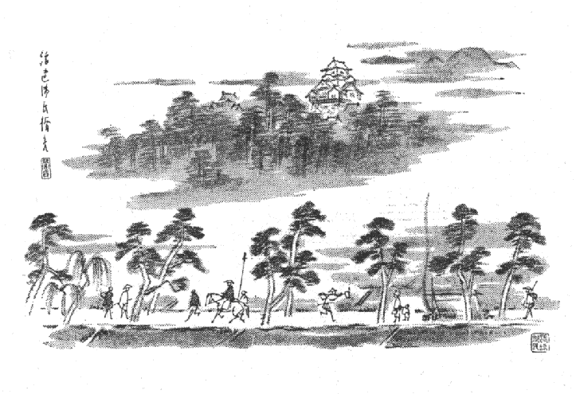
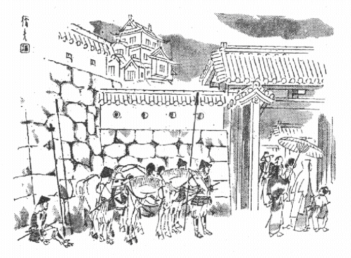
その一
改定史籍集覧第十三冊別記類の中に載っている豊内記
と云う書は、一名を秀頼事記と云い、大坂の滅亡を見届けた高木仁右衛門入道宗夢の物語を、桑原求徳が書き集めたものであると云うが、同書上巻の一節に石田三成が嫡子隼人正重家
の後日譚が見えている。曰
く、「嫡子
石田隼人ハ其比
十二三歳ナリシガ、質容尋常ニ生レ、世ニ賢ク成人シタリ、天下ノ人崇敬シテ冊
ヅキハヤシ誉ニシケル、然ルニ関原ノ合戦敗レテ父討死トモ言ヒ、又行方知ラズトモ聞ヘケレバ、後見ノ男ヲ呼デ曰ク、武士ノ家ニ生レテハ十歳ニモ成ヌレバ甲冑
ヲ帯シ、軍陣ヘ出デ、討死スルコソ面目トハ承レ、言フニ甲斐ナク我ヲ残シ置給フ事恨ミテモ由ゾナキ、返ラヌ道ト成ヌルコソ哀
シケレ、セメテ爰
ニテ腹切テ四手
ノ山トヤランノ御供スベシ、急ギ介錯セヨト有シカバ、後見ノ男申様
ハ、合戦ノ御負
ハ疑ナシ、敗軍ノ兵ドモ昨日今日引モ切ラズ馳セ参候、然
ドモ三成討死シ給フト申スモノ一人モ無シ、其実否ヲ聞届ケ給フマデハ御待候ベシ、年比
父三成ノ御恩深ク蒙シ聖
高野山ニ候間暫御忍ビアレ、某
御トモ可申ト頼シゲニ言ヒテンケレバ、少童二人召具シテ住狎
タル玉ノ床ヲ立出、行衛遥カニ忍ビ給フ、後見ノ男天王寺ノ辺マデハ付タリシガ、其ヨリヤガテ立帰
、トリ物シタヽカニシテ行方知ラズ成ニケル、何程才覚アリテ甲斐〳〵敷
トモ義理ヲ知ラヌ誠ノ無者ヲ人ノ後見トハ成スベカラズト、皆人沙汰シアヘリ、隼人正ハ力ナク唯二人ノ小姓ト手ヲトリ級
デ徒膚足
ニナリ阿部野ヲ指
テタドリ行、九月半
ノ事ナレバ夜寒シキリニシテ手足モヒヘ、草ノ露分難
ク、急グトスレド道見ヘズ、ヤウ〳〵瓜生野
マデゾ付ニケル、三人打向ヒ如何
ガセント語レドモ、先ヘ可行道モナシ、隼人正申ケルハ、此アリサマニテ野ニ伏シ山ニ隠レテハ疑ヒ無キ落人
ト見知ラヌ人ハ有マジ、本道ヲ露見シテ通ルベシト言ヘバ、此義尤可然トテ其ヨリ境（堺）ノ町ヘ出デ、紀伊ノ道ニカヽリ、七日七夜ヲ歴
テ高野山ニ上リ、先大師ノ御前ニ参、我父存命ナラバ二度
本意ヲ遂ゲ、討死シ給フナラバ後生ヲ助テ給レト手ヲ合テ深ク念願シ、其後聖ノ御坊ヲ尋テ参ケレバ、世ニ頼モシクコソ隠シ置、随分トハ思ヒシカドモ、逆徒ノ大将ノ子ナレバ其沙汰隠レナクシテ力及バズ、山ヲ下シ、武士ノ手ニワタシ、アヘナク頸
ヲバ刎
ニケル、二人ノ小姓モサイゴヘハヨセザリケレバ、何方
トモナク迷ヒ行ケリ、（中略）其外治部少輔
ガ息女ドモ多カリシガ、天下免許ヲ蒙リテ都ノ傍ニ彳
ミケレドモ、人ノ情ハ世ニ有ル程昨日ニカハル習ナレバ、洛中ニ栖
カネテ西山辺ニ身ヲ遁
レ、菜摘
水汲
薪採
リ心ナラズモ世ヲ厭ヒ、佛ヲ供養シテゾ光陰ヲ送ケル」と。此の話はいかにも哀れで、敗将の児の運命はこうもあったであろうかと思われ、一掬
の涙を催さしめるが、しかし隼人正の生涯については諸書の所伝がまち〳〵であって、必ずしも豊内記の説くところと一致しない。今試みに渡辺世祐博士の「稿本石田三成」に依ってそれらの異説を列挙すると、隼人正は関ヶ原合戦の当時佐和山にいたのではなく、毛利輝元、増田長盛、長束正家等の嫡子
と共に人質として大坂城内にいたのであるが、一説には、九月十九日の夜、乳母
や津山甚内と云う武士に扶
けられて大坂を逃れ、京都に来て妙心寺の寿聖院に入ったので、寺からその旨を所司代
奥平信昌に届け出たところ、やがて家康から助命の沙汰が下った。依って剃髪して宗享と号し、後には寿聖院第三世の大禅師となり、貞享
三年閏
三月八日を以て寂したと云う。又隼人正に従って来た津山甚内は終る所を知らないけれども、乳母は妙心寺南門前下頼浄圓と云う者に嫁
いだ、これが田宮氏の祖であって、今もなお妙心寺の脇に住すると云う。又岩淵夜話に依れば、宗享禅師は泉州岸和田の城主岡部宣勝に扶助せられて極老に及び、岸和田に於いて遷化
したとも云う。尤
も、古今武家盛衰記、諸家興廃記、翁草
等の記すところは少しく趣を異にしていて、隼人正の大坂脱出を九月十七日の夜であるとし、津山甚内を乳母の父津山喜内と云う者であるとし、それともう一人和田千之助と云う武士が扈従
して奥州へ落ち行き、津軽為信の内に知る人があったのを頼って密かにその家の客となり、幸運にも捜索の網を逃れて餘命を完うすることが出来た、現に津軽家の舊臣に杉山氏を称する者があるのは三成の子孫であるとも云う。以上の諸説は孰
れも隼人正が無事にながらえていたことを語っており、豊内記の哀話と相違しているけれども、戸田左門覚書
にも三成の子の左吉と云う者が佐和山より逃れて高野に走ったことを記していると云うから、隼人正と左吉と同一人なりや否やは明かでない迄も、誰か三成の遺児のうちに、豊内記が伝えるような悲劇に遭遇した者があることを想像せしめる。
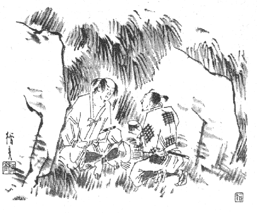
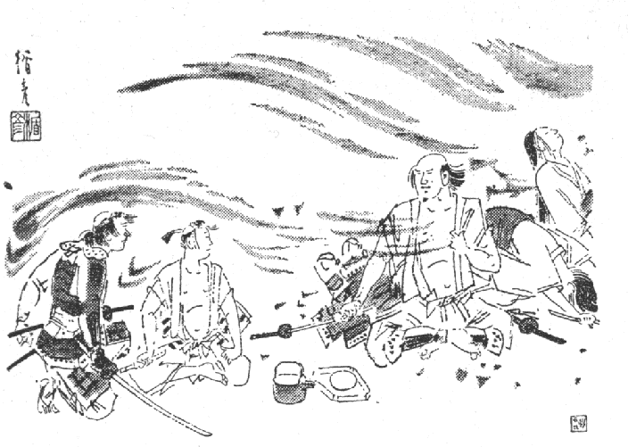
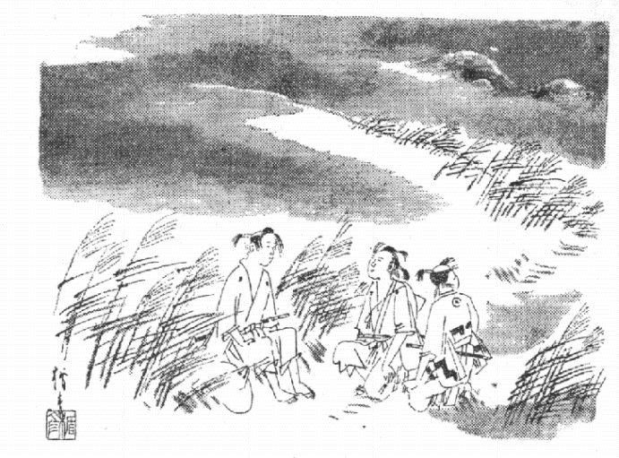
豊内記は又、「其外治部少輔ガ息女ドモ多カリシガ」と云っているので、数人の女児があったことは確からしいが、嫡子隼人正の事蹟すら前陳の如くいろ〳〵な風説があり、シカとしたことが分らないのであるから、況
んや息女たちの身の上については、たま〳〵一二の書物に断片的な記事が散見するのみであって、詳細なことは何も知られていないのである。但し「稿本石田三成」は云う、「三成の娘に就きて考へんに関ヶ原役後まで生存せしものありしは、確に事実なり。板坂卜斎覚書にあるが如く、家康は関ヶ原役後、当時敵となりし人の妻及び娘は皆これを宥
したり、その将軍となりし時も、嘗
て敵となりし人々の婦女も京都堀川にてその行装を見物せりと云ふ。されば佐和山にて戦死せし正澄の妻も、何の咎もなく慶長十二年まで生存し、その二月廿八日に歿し、三成の娘も後まで生存せしものありき」と。そうしてその娘の一人は豊後国安岐の城主であった熊谷直盛に嫁ぎ、一人は尾張国犬山の城主石川貞清に嫁いだと云う。又イツマデ草抜萃に依れば、徳川頼宣の時、紀州の町医に佐藤三益と云う者があったが、その妻は三成の娘であることが頼宣の耳に入った、依って臣下に命じて調べさせると、それに違いなく、関ヶ原の戦後乳母の才覚で助かった事実が明白となったので、頼宣深くこれを憐み、三十人扶持
を給したと云う。又熊沢蕃山の弟泉忠愛の妻は三成の孫に当っていたが、彼女は阿波国の人箕浦平左衛門の娘であって、平左衛門の妻は三成が娘であったと云う。これらの話がほんとうだとすれば、三成の子孫が廣く地方に散布していたことも考えられるし、皆それ〴〵に良縁を求め得て幸福な終りを遂げたらしくも思われるが、然らば豊内記に「洛中ニ栖
カネテ西山辺ニ身ヲ遁
レ、菜摘水汲薪採リ心ナラズモ世ヲ厭ヒ、佛ヲ供養シテゾ光陰ヲ送ケル」とあるのは如何。殊に江村専斎が老人雑話には遊女にさえなった者があることを記し、「舞を舞ひし女に常盤と云ふもの、人招けば何方へも来にけり、石田三成の息女なりと云ふ。さもありぬべし、真西山の孫女さへ歌妓となりし」と記してあると云う。
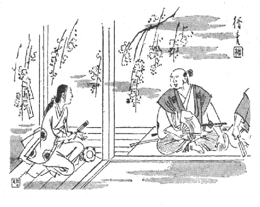
父三成の行年が四十一歳であったとすると、幼い息女たちも多かったであろうが、同じ姉妹
に生れながら一城の主を夫とした者が二人までもあり、そうでない者も或は武士に或は町医に嫁いだと云うのに、一方に於いて尼や遊女になった者があると云うのは、一旦嫁いだ女たちが後に謀叛人
の子なるが故に夫に疎
まれ、落魄
した結果であろうか、それとも関ヶ原の当時まだ結婚期に達していなかった妹たちだけが、漂泊の憂き目を見たのであろうか。そうだとすれば、仕合わせに暮していた姉たちはなぜ妹たちの困るのを餘所
に見ながら構い着けなかったのであろう。又妹たちも、もし総領の兄が妙心寺の坊さんになって大禅師とまで敬われてい、四人の姉たちが相当な家に片附いているのなら、なぜそう云う兄や姉を頼って行かなかったのであろう。或は謀叛人の子供たちは、互に兄弟とは知りながらも父の名を出すことを恐れて、音信を通じなかったのであろうか。今に及んで左様な疑問を起したところでそのいきさつが分る筈もないのであるから、細かい詮議立ては無益のように思われるけれども、しかし私は数年前に「安積
源太夫聞書」と題する古い写本を読んだことがあり、その写本の中に出て来る三成の娘なる者が前記のうちの孰
れに当るのであろうかと云う好奇心を禁じ得ないのである。
扨
、右の「安積源太夫聞書」と云う一書こそ此の物語の根幹を成すのであるが、正直のところ、私は此の書が果して信ずるに足るものであるか、或は後世好事家
の偽作であるかを詳
かにしない。たゞ、茲
に少しく右の写本を読むに至った来歴を説くならば、あれは私が高野山の龍泉院に蟄居
して盲目物語を書き上げた年であったから、たしか昭和六年のこと、或る日私は、江州長浜町の某と云う人から一通の書簡を受け取ったことがあった。今その書簡の要旨を摘録すると、「自分は雑誌中央公論の九月号に載っている貴下の盲目物語を読み、多大の感銘を覚えた者であるが、それはあの物語が扱っている戦国の女性の哀切を極めた運命と、それをあれまで描きこなした貴下の筆力に依ることは勿論
だけれども、実はその外にも、特別に興味を惹かれた二つの理由がある。その理由の一つは、自分の家も、遠い先祖から、恐らくはあの物語の主人公である盲人の住んでいた頃から江州長浜に居住していると云う因縁があること、尚もう一つは、自分の家に古くから秘蔵している安積源太夫聞書という写本があるが、右聞書の内容が又、嘗
て石田治部少輔に仕えた武士の、後に故あって盲目となり、零落して豊臣秀次が悪逆塚の塚守になった始終を、伝えていることである。自分は此の写本が、いつの時代から我が家の所蔵に属したのかを知らない。又此の書の筆者安積源太夫なる人についても所伝がない。併し此の書を信用すれば、右源太夫は寛永から天和の頃に生存していた武士であって、壮年の折京都に滞留していたものゝ如くである。自分は或は、一族のうちに安積姓を名告る者があるからその方に由緒があろうかと考え、安積氏の系図を調べてみたけれども確證がない。そう云う次第で、他日自分は専門家の鑑定を乞い、此の書に歴史的価値がありや否やを明かにしたいと願っていたのだが、今回盲目物語を読むに及んで、此の書はむしろ、貴下の御参考に供すべきものであることに思い至った」と云うのである。
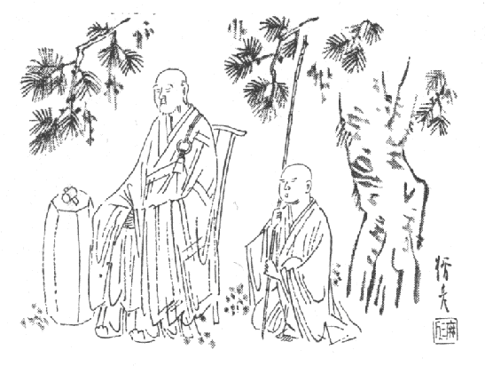
某氏の書簡は更に曰く、「自分が貴下に此の書の一読をすゝめる所以
は、貴下に鑑定を乞わんがためではない。自分は貴下がかの盲目物語の資料と着想とを那辺
より得られたかを知らないけれども、偶〻
自分の手元にも、あれと時代を同じゅうするのみか略〻
背景をも同じゅうしながら、あれとは自ら異った一箇の盲目物語があることを、知って戴きたいのである。自分は敢て、貴下の盲目物語よりも自分の珍蔵するものゝ方が優っていると云うのではないが、しかし此の盲人の経歴を彼の盲人のそれに比べるに、その舞台の大がゝりで色彩に富む点に於いて、その悲劇の異常にして深刻な点に於いて、必ずしも此れが彼に劣っているとは信じられない。のみならず、もし此の物語を貴下が得意の霊筆に依って彼の物語のような形式に書き改めるとしたならば、その人を感動せしめることはかの物語以上であろう乎。そうして見れば、小説家たる貴下に取って此の書の歴史的価値の如何などは深く究めるに及ばないと思う云々」と。私は自分の職業上、未見の読者からこう云う種類の紹介に接することはたび〳〵であって、多くの場合それが期待に外
れることを承知しているのではあるが、当時、此の書簡には一往の興味を覚えたので、取り敢えず某氏に宛てゝ返書をしたゝめ、右の写本の借覧を乞うたところ、重ねて某氏より「御用済みの上は成るべく早くお返しを願いたい」旨の書面が来、同時に書留便を以て書物を送って来たのである。私は某氏も云う如く一介の小説作者であって古文書の知識は皆無であるから、素
より此の写本の真贋
について判定を下す資格はないので、「于時
天和二歳次壬戌如月記之、安積源太夫六十七歳」とある奥書を、兎も角も信ずるより外はなかったと云うだけを記しておこう。ところで、そのはしがきとも云うべき部分を読むに、此の書は安積源太夫が若年の砌
京都に滞在したことがあって、或る年、と云うのは寛永十八年の秋、嵯峨
の釈迦堂の片ほとりなる草庵に、石田三成が息女の成れの果てなりと云う老尼を訪れ、彼女が幼かりし日の昔がたりを聞くことが出来たので、そのうち殊に深く心を動かし、四十年を経た今日も忘れずにいるふし〴〵を、後の世の語り草にもと老眼の脂
を拭いつゝ書き留めておくと云うのであって、前に記す塚守の盲人は即ち老尼の物語の中に出て来るのである。されば此の書は、老尼の身の上話であるには相違ないが、老尼自身のことについては幼年の頃乳人
に伴われて佐和山を落ち延び、都の知るべを頼って行って図
らずも件
の盲人に出遭った前後のこと、つまり盲人と係りあいのある部分だけしか語られていず、内容から云えば盲人が主人公であることは紛れもないので、自ら第二の盲目物語を成しているのである。
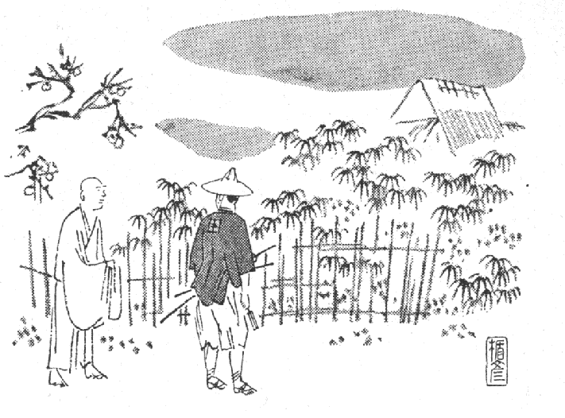
その二
右写本の文体はかの小瀬甫庵が太閤記や信長記の如きものと同断であり、叙述の方法もその頃の軍記類と大差はないが、たゞ此の本の特異な点は、今も云う通り盲人の話が本筋になっているのだけれども、而もわれ〳〵は、絶えず老尼の口を通して、或は老尼が身の上話の一部として、それを聞かされるのである。即ち此の聞書の筆者安積源太夫は、四十年前に嵯峨の草庵を訪ねた折の記憶を呼び起し、まのあたり膝を交えつゝ尼の語るのを聞いている気持を、いかなる場合にも忘れていない。されば物語の中から又一箇の物語が派生し、その派生したものゝ方が大部分を占めていながら、そうしてそれが、時には直接法として、時には間接法として語られながら、結局その説話は、盲人から尼、尼から筆者と云う順序を経た又聞きの又聞きたるを免れず、その上筆者が尼に聞いたのが四十年前、尼が盲人に聞いたのが更に四五十年も前であるから、時間的にも可なりの隔たりを想像されるのであって、尼も筆者も、それ〴〵に印象がうすれていたであろうし、記憶のあやまりもないとは云えないが、そうして又、慥
かに書き方にたど〳〵しい節も見えるのであるが、そう云ういろ〳〵の不確実性を含むに拘らず、今日それを読んでも何かしら惻々
として胸を打つものがあり、物語の進展に連れて沈痛な盲人の言語風貌が髣髴
として現れ来り、深く肺腑
に迫るものがあるのである。が、盲人の話は後に説くとして、先ず尼のことに注意を向けよう。尼は慶長五年佐和山の城が陥ったとき、よう〳〵十歳になるかならずであったと云う。然らば安積源太夫が嵯峨の草庵をおとずれたと云う寛永十八年の秋には五十一歳程になるのであるが、源太夫が見たところでは、色白く、目元すゞしく、さすがに賤しからぬ気品を備え、顔の肌にはまだ若々しいつやがあって、四十二三としか受け取れなかった、そうして立居ふるまいのしとやかなことは申すまでもなく、ちょっとした体のしぐさや物腰にたとえようもなくみやびなところがあって、尼とは云うものゝ、何処
かに阿娜
めいた、たゞ者ならぬ感じがした。聞書の筆者はそう書いた後に、噂
に依れば此の尼は一と頃宴席などにも出で、座敷の興を添えたことがあったと云うが、さらでだに寄る辺
ない女の身の、まして謀叛人の娘として世に疎まれる境涯になっては、そんなことでもするより外にたつきの道はなかったかも知れない、けれどもそれがほんとうだとすれば、定めし若い時分にはそのみめかたちを都の人々に騒がれたであろうと、そうも記しているのである。そこで私は思うのであるが、此の老尼こそかの老人雑話に見える三成が息女、舞妓常盤
の後身ではなかったのであろう歟。聞書はたゞ噂をしるすのみであって、常盤と云う名を何処にも挙げてあるのではないが、何となくそう云う気がするのである。
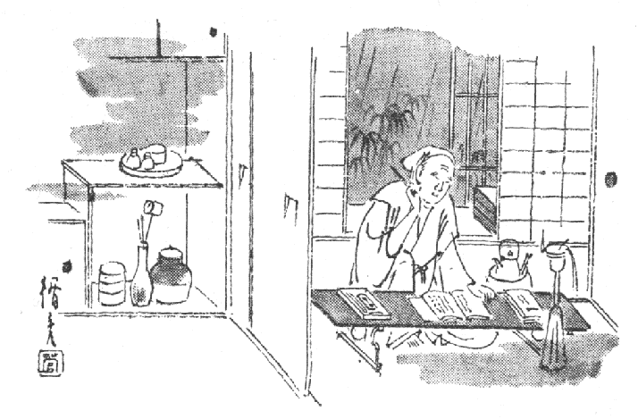
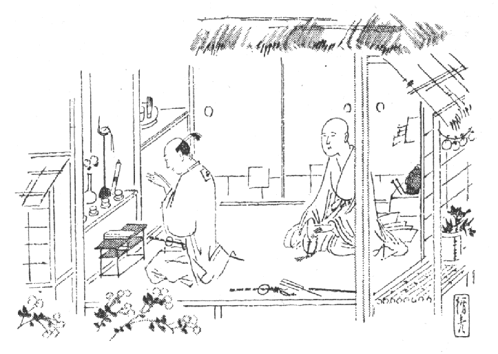
源太夫が語るところに依れば、尼が草庵は嵯峨釈迦堂より艮
の方
、大沢の池へ行く路の傍の、とある藪
かげにあって、部屋は僅かに二た間しかない怪しげな藁家
の、廣い方の一と間を佛間に充
てゝ、あさゆう佛に仕えながら、十三四になる小女
と二人で暮していた。都が近いとは云うものゝ至って佗
びしい場所であるから、日頃訪れる者もなく、尼も人に接することをあまり喜ばない風であったが、筆者源太夫は尼について昔のものがたりを聞かんものと、ひとゝせの秋釈迦堂へ詣でたついでに、そこの坊さんの紹介で漸く会うことが出来たのであった。多分筆者は、その、思いの外うら若く、残
んの色香
を墨染の袖に包んでいる尼と狭い一室に膝
をつき合わせ、彼女の孤独を慰めたり自分の無躾
を詑
びたりしながら、少しずつ身の上話を手繰
り出すようにしたのであろう。最初のうちは、尼は何を尋ねられてもたゞお耻かしゅう存じますとのみで多くを答えず、物好きな人の眼を逃れたいと云うようにさしうつむいてばかりいるので、とかく問答がとぎれがちであったが、ふと心づけば、小さな如来
を安置した佛壇の中に「江東院正岫因公大禅定門」と記した位牌
がある、それぞ正
しく三成の法名であったから、源太夫乃
ち起
ってその前に至り、恭
しく香を拈
じて礼を作
した。その様子を見てから尼の態度がやゝ和
らぎ、ぽつ〳〵問いに応ずるけはいを示したとある。
因
みに、右位牌の法名は三成が帰依
していた大徳寺の圓鑑国師が選んだもので、国師は石田氏滅亡の後、深く生前の交誼を憶
い、或は一門の影塔を作り或は三成の遺骸を収めて墓碑を建立
し、常に冥福を祈っていたが、慶長七年十月朔日、三玄院に於いて故人の三回忌を営んだ時の偈
に曰く、
自咲
一炉焼二
返魂一
早梅香動出二
前村一
即今欲レ
問三年別 十月桃花終不レ
言
と。蓋
し国師のような出世間の禅僧が此の風雲児の霊を弔い、法要を行うことに不思議はないが、徳川氏の覇業
が定まった当時はたとい親類縁者と雖も、誰あって墓参りなどをする者もなく、一片の香華
を手向
ける人もなかったであろう。されば路傍の人に過ぎない源太夫が父の位牌を拝んでくれたのを見て、はしなくも尼が感激したのは察するに難
くなく、それからだん〳〵と、折角訪ねてくれた人の好意にほだされながら語り始めたのであったが、それでも源太夫の質問が尼自身のことに及ぶと、言葉を濁して要領を得させなかった。即ち尼が語ったのは、父三成の刑死前後二三年の間に出遇ったことや見聞きしたこと、分けても盲人から又聞きした話が主であって、自分がどうして尼になったか、此の草庵の主となる前はいかにして浮世を過して来たか等のことは、何も聞き出せなかったと云う。思うに尼が盲人の話を持ち出したのは、幼少の頃戦禍に追われ、有為転変の悲しみを味わったさま〴〵な回想の中に於いても、それが後々まで最も強く記憶に残っていたからでもあろうが、一つには又、単なる物語としても聴き手の興味を惹かずには措
かないその盲人の悲劇の方へ質問の矢を外
らして行って、己れ自身の問題に触れられることを避けたのであろう。
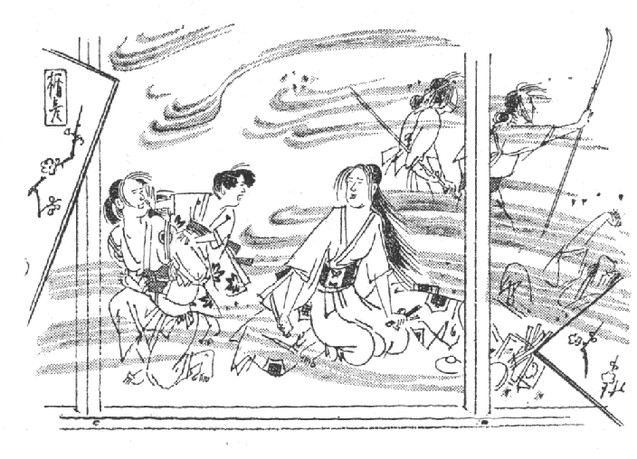
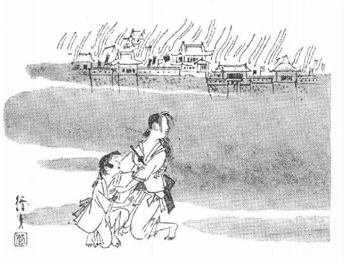
尼が云うには、自分は慶長五年九月十八日、城の運命が極まって一族郎党が自害をしたときに己れも死ぬべき命であると覚悟を定め、幼い手に懐剣の柄を握りしめたが、母なる人が押しとゞめて、そなたは年歯
も行かぬことなり、まして女子のことでもあるから、萬一敵に見出されてもあながち無慈悲には扱うまい、兎に角此の場は最期を急がず、逃げられるだけ逃げて見よ、それにお父上もよもや討死なされたのではあるまい、きっと何処かに忍んでいらっしゃるのだから、そなただけは生き延びてお父上にお目にかゝり、又亡きあとの菩提を弔
うてくれたがよいと搔き口説
かれたので、自分は母の袖に取り縋
って泣き叫び、今母上にお別れ申して此の先どうなる身であろう、是非御一緒に死出のお供をさせて下されとせがんだけれども、母は乳人
を呼んで自分を引き離してしまったので、泣く〳〵城を立ち去らねばならなかったと。尼は此の「母」なる人が父三成の正室であったか側室であったかを洩らしていない、又自分に兄や弟があったかどうかも語っていないが、想像するに彼女は庶腹の子であって、あまり問題にもされていなかったればこそ、却って無事に城を出られたのであろうか。彼女は乳母
に手を執られながらも母の傍を離れまいと一生懸命に「いや〳〵」をして身を悶
えた。だがそのうちに渦巻く火焰が母との間を隔てゝしまい、一方では乳母が早く〳〵と急
き立てるので、それから先は悲しいよりも火の粉の熱さを避ける方に心を奪われ、よう〳〵我に復
った時は、戦の騒ぎが遥か遠くに聞えるような静かな裏山の森の中に潜んでいた。
そこまで来ればもはや炎に焼かれる恐れも、敵の手に捕われる気づかいもないと分ってみると、再び母のことが思い出されて、どう考えても乳母に連れ出されてしまったことが悔まれてならなかった。そうして、城の方の空に上っているおびたゞしい煙を見ては又新しい涙を誘われて、もう母上はあの煙の中に消えておしまいになったのであるとあきらめながらも、あゝ、どうぞあそこへ、お母さまのお傍へ、あの煙の中へとだゝを捏
ねたが、乳母はそう云う彼女の声が森の外へ洩れないようにと眼顔で知らせて、とき〴〵「しっ〳〵」と小声で叱ったり、
「お姫
さま」
と、たしなめながら彼女の口へ手をあてたりした。乳母は彼女がだん〳〵落ち着きを取り返して泣き止んで来る様子を見定めて、都へ上れば身を隠すのに都合のよい知る辺
がないでもないから、お父さまの御安否が分るまでは、どんなにしてゞも生きながらえている方がよいと云うのであった。けれども彼女、十歳になるかならずの娘は、乳母がたび〳〵繰り返す「お父さま」と云う言葉をどう云う風に聞いたであろうか。父と云う人は嘗
ては五奉行の一人として天下に並びない権勢を謳
われ、今度も江戸の内府どのを相手に上方勢
を寄せ集めて大きな軍
を起したほどの偉いお方であり、母や自分を立派な城に住まわせて大勢の腰元を冊
かせてくれ、大名のお部屋様やお姫様として幸福な月日を送らせて下すった有難いお人には違いなかったが、親としての親しみを感ずるのには、彼女から見て餘りにその父が高過ぎもし、隔たり過ぎてもいなかったであろうか。彼女が物心ついてからは、たま〳〵城に帰っている時でも上方
や江戸の形勢を案じて侍たちと密議するような日が多く、ついぞゆっくり可愛がっても貰
えなかった忙しそうな父親ではなかったか。そう云う父は娘の眼にも一箇の「英雄」と映るばかりで、情愛よりはむしろ畏敬を感じなかったか。さればその父の敗戦を無念に思い、無事に助かっていてくれることを祈りはするものゝ、母が死んだ今となっては、再挙の時を待つ楽しみもなかったかも知れぬ。父がもう一度世に現れて、再び大名の富と権勢とを回復し、焼け落ちた城を又もとのように築き直してくれることは、父のためには此の上もなく望ましいけれども、彼女にしてみれば母のいない城の生活に何の未練があろうとも思えぬ。
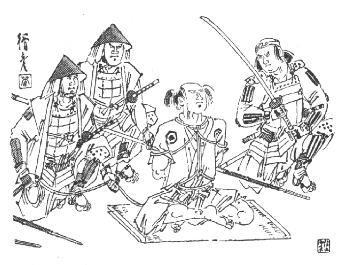
娘の心は大方そうもあったろうかと察せられるが、乳母の勧める言葉もあり、父が果して助かったかどうかを見とゞけるだけは見とゞけてと、小さな胸にとつおいつ考えあぐみながら、都へ伴われて行ったのであろう。そうして此の二人も豊内記がしるす隼人正と同じように、九月下旬の夜寒
の風にふるえながら、往還
の人の眼に怯
えながら、勝ち誇った関東方の軍勢や落ち行く敗兵の群がる街道を、幾日かかゝって上ったのであろう。たゞ隼人正よりも仕合わせなことには、乳母はあの後見
の男のような不実な者ではなかったと見えて、或る町人の知る辺
の家へ安全に連れ込んでくれたのであった。
父三成の消息については都へ上る道すがらにもいろ〳〵の噂があって、まだ伊吹山
に隠れているに違いないと云う者や、生れ故郷の石田村へ来たのを舊恩のある百姓が匿
まっているのだと云う者や、いや、三成ほどの武士が何でおめ〳〵生きていようぞ、きっと家来の者たちが首級や遺骸を知れないように葬ったのだと云う者や、いや、ひょっとしたら、姿を変えて此の街道を大坂へ走っているのではないか、そうしてもう一度徳川殿を滅ぼすために兵を集める所存かも知れぬと云う者や、中には又、治部少輔はつい今しがた召し捕られた、己は曳かれて行くのを見たなどゝ、まことしやかな譃
を伝える者もあって、そのたびごとに胸をさすったり冷や〳〵したりしたのであったが、二人は瀬多の橋を渡るときに往き来の人が大勢立ち止まって眺めている制札の前に、自分たちも覚えず足をとゞめた。
一、石田治部、備前宰相、島津両三人於二
捕来一
は為二
御引物一
其所之物成永代無役に可レ
被レ
下旨御掟候事
一、右両三人とらへ候事於レ
不レ
成は討果可レ
申候、当座之為二
引物一
金子百枚可レ
被レ
下旨被二
仰出一
候事
一、其村中差送候においては路次有様に可二
申上一
候、於二
隠候一
は其者之事は不レ
及レ
申、其一類、一在所、曲事に可レ
被二
仰付一
候旨事
乳母は急いで読んでしまうと、そっと娘の袂
を引いて「さあ参りましょう」と云う意を知らした。そうして人垣の中を抜けて出てから、
「御安心なさりませ、お父様は御無事でいらっしゃいますよ」
と云った。
「あゝ云う立て札がある間は、まだお父様は何処ぞに忍んでいらっしゃるのでございます。お父様を捕えた者には褒美
をやるなどゝ申しましても、なんの、なんの、御領内の百姓たちは御恩を受けた者共ばかりでござりますもの、舊主に縄をかけるような勿体
ないことを誰が致しましょう」
それ故力を落してはならぬ、今にお会いになれる時節が参りますと、そう云って娘を慰める乳母も、心からそう思っているのでないことは明かであったが、大津の町へ這入
ってみると、治部少輔のありかを知っていると云う立派な武士がきのう石山で捕われたという噂が立っていた。人々が集まって話している場所へそれとなく近づいて立ち聞きをしたり、物識り顔な老人などを摑
まえて尋ねたりしたところでは、それは小幡
助六郎信世と云って、二千石を戴いていた家中の武士に違いなかった。信世は主人の供をして関ヶ原の戦場へ出向いた筈だのに、どうした訳か石山まで落ちて来たところを土民に取りおさえられたのだと云う。だが、感心なことに、大津の陣屋へ引いて行って徳川殿が直
き〳〵の調べをした時にも、「その方は主人三成のありかを存ぜぬことはあるまいが」と云われると、
「左様でござります、よく存じておりますが、それを申し上げましては侍の道が立ちませぬ。たといどのような拷問
を受け、骨をひしがれましょうとも、決して白状いたしませぬ」
と、きっぱり撥
ねつけたと云うのである。
信世はしかし、ほんとうは三成のありかを知っているのではなかった。戦場で主人の行くえを見失ったので、上方
の方へ逃げたのではないかと思い、跡を追いながらつい石山まで来てしまったのであった。徳川殿にもそれが分ったものだから、
「いや、此の男は知ってはいないぞ。だがあっぱれな挨拶
だ。殺すのは惜しい奴であるから助けてやれ」
と仰
っしゃって、即座にお赦
しが出たのであったが、信世はそれを喜ぶでもなく、主に離れて生きていても何の甲斐があろう、此の上耻を重ねるのはいやだと云って、腹を切った。その潔
い最期の有様が知れ渡るに従い、見上げた武士よ、治部少輔にも良い家来がいたものよと、町の人々は又そのことを噂し合っているのであった。
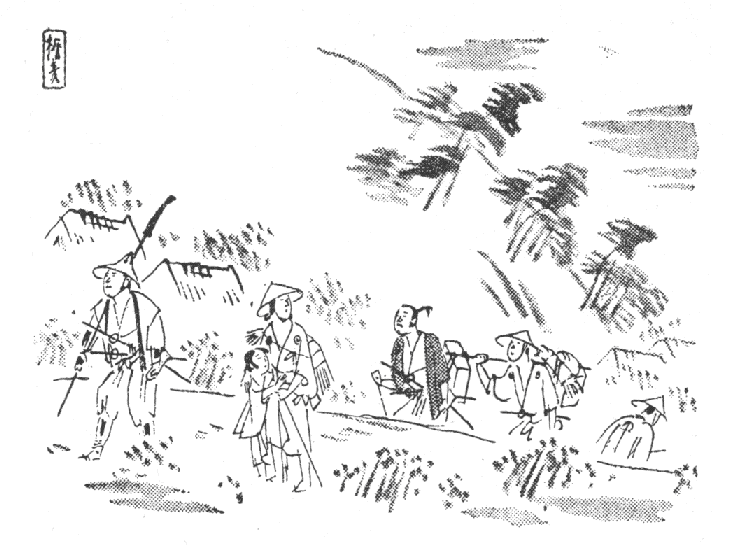
「小幡助六郎殿ならば、武勇の誉の高いお方、そのくらいなことはあるでござりましょう」
と、乳母は感動して、ほんとうの忠義と云うものはこう云う時に分るのであると云ってから、
「お姫
さまとわたくしとが此処を通り合わせましたのも何かの縁、せめて遺骸
を拝ませて貰って、餘所
ながら供養をして上げとう存じますが、それも叶
わぬのが口惜しゅうござります」
と、比叡
おろしの吹きすさぶ中を逢坂山
へかゝりながら涙を流した。そうかと思うと、
「田中兵部大輔
どのは憎いお人だ。恩知らずだ」
などゝも云った。それも道々取り沙汰するのを聞いたのであるが、徳川殿の云いつけで治部少輔を生け捕
る役目を勤めているのは、田中兵部大輔であると云う。なるほど、兵部どのは殿様と日頃親しい仲でもあり、同じ故郷の生れでもあれば、そう云う人があの伊吹山の麓の村々、在々所々へ追手
を差向け、間道や谷間の隅々までも土を掘り返し岩を揺り起して捜索したのでは、殿様とても安き心地はおありなさるまい。定
めし今頃はひもじい思いを遊ばしながら、うっかり里へ出ることもならずに、淋しい山奥にじっと隠れていらっしゃるのであろう。こゝらあたりの街道でさえ日が暮れると急に心細くなって来るのに、そんな山奥の夜はどんなか。きょうこの頃の寒さは云う迄もないとして、猪や狼が出て来はしないか。せめて一椀の粥
か湯漬
でも差上げる人があったらよいが、誰かお供の侍がお附き添い申していることか、それともお一人なのであろうか。石橋山の頼朝公の例もあるから、危い場合を上手に切り抜けて御運をお開きになるだろうけれども、一時にもせよ殿様がそう云う辛い目をしていらっしゃるのは、田中兵部殿のおせっかいのせいではないか。あのお方は殿様の推挙で立身をなされたばかりではない、その昔秀次公の御謀叛の時、太閤
殿下のお疑いを蒙ったのを、よう〳〵赦して戴けたのは誰のお蔭か。あの時分のことを考えたら殿様に弓は引けない筈だのに、徳川殿の勢になびいて佐和山城の寄せ手に加わり、その上召し捕り方を引き受けるとは何事であろう。と、そう云うのが乳母の理窟であった。
都の宿へ着いてからも、今日は摂津守が捕われた、今日は安国寺がと、そんな噂が毎日のように伝わって来るので、娘はそれを聞くたびに、悲しい報道を受け取る時が近づいて来たような豫感を抱いて、半分はあきらめていたのであったが、或る日のゆうがた、外から慌
てゝ帰って来た乳母の顔色を一と眼見ると、「さては」と察しがついたのであった。乳母の話では、とう〳〵治部少輔が摑
まったと、廣い都の辻々で町の人々が寄ると触るとそのことを語り合っている、召し捕られたのは九月の二十一日で、江州伊香郡の古橋村と云う所へ出ていらしったのを、兵部大輔の家来の田中伝右衛門と云う者の手で捕えたと云う。委
しい様子は分らないけれども、最初殿様は伊吹山へお逃げになって、そこで附き従う侍共とお別れになり、渡辺勘十、磯野平三郎、塩野清介の三人だけを連れられて浅井郡の草野谷に出られ、草野谷から大谷山へお這入りなされ、その山の中に暫
く潜んでいらしったが、やがて三人の人達にもお暇を下されて、たったお一人で高野村から古橋村へ出ていらしった。それと云うのは、古橋村は舊領地のことでもあり、法華寺
の三殊院
と云う寺坊にいる善説と云う坊さんが、幼い時分の手習いの師匠であったから、その人を頼っていらしったので、一日二日はその坊さんに匿
まわれていらしったけれども、村民たちが感づいて来たので、今度は同じ村内の百姓の与次郎太夫と云う者の所へお逃げなされた。与次郎太夫は感心な男で、舊恩のある殿様のお身をお引き受け申し、家の近所の岩窟
の中へお隠し申して、内證で食べ物を運んでいたが、日が立つにつれてそれが名主の耳に這入り、包みきれなくなってしまった。それで殿様も与次郎太夫の難儀を察しておやりになり、もはや天運が盡きたものと観念なされて、兵部大輔の陣所へ訴えて出るように御自分から仰せつけになったのだと云う。乳母は娘を物蔭へ呼んで、町で聞いて来た一部始終を告げてから、又しても兵部大輔が憎いと云って泣いた。
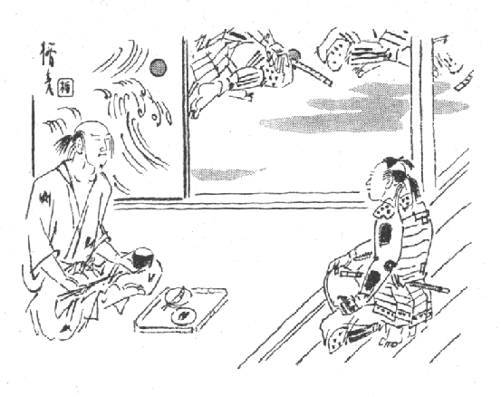
与次郎太夫の訴えに依って、田中伝右衛門が召し捕りに向ったこと、乗物に乗せて井ノ口村に送ったこと、そこに三日間泊め置かれてから、兵部大輔が自ら守護して犬上郡の高宮を経、守山に一晩泊まって、明くる日大津の内府殿の陣屋へ連れて行かれたことなど、その日〳〵の父の様子は、誰云うとなく事も細かに伝えられて、巷
の人の口の端に上り、世を忍ぶ身の娘や乳母にも聞えて来た。京わらんべが尾鰭
をつけて云い触らすことだから、真偽の程は知れないけれども、父は逃走の途中食物に窮して路傍の草や稲穂を食い、その上岩窟などに籠って腹を冷やしたせいか、摑
まった時は下痢に悩んでいたと云う。兵部大輔もさすがに昔のよしみを忘れず、父を大切にもてなして薬をすゝめたりしたが、父もその友情を快く受け入れ、韮雑炊
を煮
いてもらってそれを旨
そうにたべてから、ぐっすりと睡った。兵部大輔が父の心中を思いやって、このたび数萬の兵に将として戦場の指揮をなされた御器量はあっぱれと存じ申す、勝敗は天の命でござれば致し方もござりますまいと、慰め顔に挨拶すると、父は事もなげに笑いながら、秀頼様のおんために害を除いて太閤殿下の御恩に報いようと存ぜしところ、武運拙
くしてかくなりしこと、何をか悔み候べき、これは太閤より賜わりし品でござるが、形見にまいらせる、取って置かれよと云って、貞光の脇差を兵部に与えた。そうして兵部大輔のことを相も変らず「田兵々々
」と呼び捨てにした。
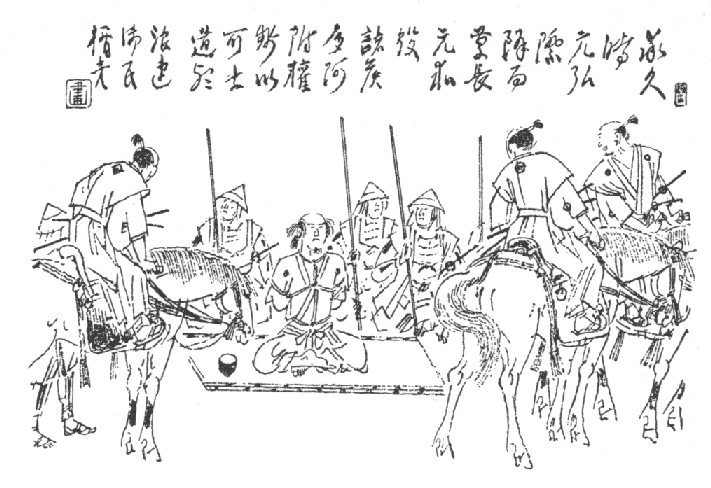
その他、大津の陣に引かれて行った時、内府殿は陣屋の門外に畳を敷かせ、父を縄つきのまゝすわらせて出入の諸将の見せ物にした。すると福島左衛門太夫殿が通りかゝって、汝無益の乱を起し、今のその有様は何たる事だと、馬上から大音を挙げて叱咜
したが、父は屹
と正則を見上げて、某の運が拙いばかりに、汝を生け捕って此のようにすることが出来なかったのは残念であると、臆する色もなく云い返したと云う話。福島殿の後から通りかゝった黒田甲斐守殿は、父を見ると馬から下りて丁寧に会釈
をし、かくなられたのは御身の不仕合わせとは云いながら、さぞ心外でござろうと、着ていた羽織を手ずから脱いで父に着せてやり、労
わってやったと云う話。中にも筑前中納言、あの裏切者の小早川殿は、止せばよいのに囚
われの父がどんな姿をしているか見たいと思って、人の止めるのも聴かずに、そっと様子を窺いに行くと、父はハッタと秀秋を睨
み、某、汝が二心あることを知らざりしこそ不覚なれ、されども太閤の高恩を忘れ、義を捨てゝ約に違
い、関ヶ原に於いて裏切りせしこと、汝心に耻じざるやと、声を励まして罵
ったので、中納言殿も返す言葉がなく、赤面して引き退ったと云う話。そうかと思うと、内府殿は父の縛
めを解いて礼を厚うして引見なされ、父もその昔の五奉行の随一、佐和山二十三萬石の格式を以て対面したと云う話。そのゝち父は本多殿にお預けになったが、本多殿が父に向って、秀頼様はお年も若く、事の是非を知ろしめす筈はござるまいに、由なき戦を起されて縄目
の耻を受けられたのは笑止
でござると云うと、いや〳〵、某は天下の形勢を考え、徳川殿を亡さずんば豊臣家のために宜しからずと思案いたし、諸大名を語ろうて軍勢を催したのでござったが、あまり心の進まぬ輩
を強
いて味方に引き入れしばかりに、大事の瀬戸際に敵に内通する者が現れ、勝つべき戦に後れを取ったのが無念でござると云うので、智将は人の和を計り、時勢を知るとこそ申せ、諸将の同心せざるをも顧みず軽々しく事を起され、敗軍に及んで自害もなさらずに召し捕られるとは、日頃の御身にも似合わしからず存ずると、重ねて本多殿が云うと、汝は武略を露
知らざる者よな、汝の如き者に大将の道を語るとも耳には入るまじと、そう云ったきり父は堅く唇を閉じて、再び物をも云わなかったと云う話。毎日それらの話が見て来たように伝えられたが、二十六日の日に、内府殿が秀頼様へ御挨拶のため大坂表
へ御出ましになり、それと共に父も大坂へ送られたことが知れて来た。道中は柴田左近、松平淡路守の二人が護衛して、父は小西殿や安国寺殿と一緒に、首に鉄を箝
められ、罪人の乗る車に乗せられて、大坂へ着くと町を引き廻された上、今度は堺
へ送られて、そこでも町を引き廻された、そうしていずれ明日あたりは、京都の町を廻されるだろうと云うのである。
それについても亦いろ〳〵な噂が立った。父も、摂津殿も、安国寺殿も、捕われた時は衣服などもぼろ〳〵に破れ、見すぼらしい落人
の姿をしていたのを、車に乗せるときに内府どのが御覧になって、此の三人はいずれも一国一城の主、分けても治部少輔は天下の政務を執りし者、たとい軍
敗
れて身の置きどころなしとても、それは武門の常なれば耻と云うべからず、今此のような見苦しき服装にて京大坂を引き廻すは、吾等同様に武士の本意でないと仰
っしゃって、三人に小袖を下されたところが、摂津守と安国寺とは有難くお受けをし、内府殿の恩を謝したけれども、父は解
せぬ顔つきをして、「一体これは、誰の贈り物でござるか」と尋ねた。傍にいた者が「それこそは江戸の上様
よりの下され物でござる」と云うと、「江戸の上様とは誰のことでござる」と、又押し返して尋ねるので、「徳川殿じゃ」と云って聞かせると、「何しに徳川殿を上様と云うべきや、上様と申すは秀頼様より外にはなきものを」と、父はそう云って不敵なあざ笑いを浮かべたと云う。
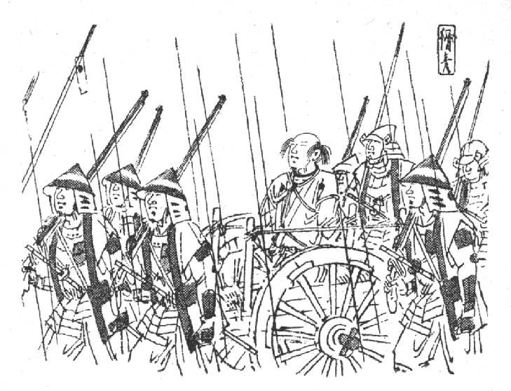
父と云うものを、太閤さまのお眼がねにかなって微賤の身から出世をした非凡な人間、偉い男としてより外に考えられない娘には、刀折れ矢盡きた今日に及んでも徳川殿の威勢に屈せず、事毎
に楯
をついているのが、いかにも平生の父らしく感ぜられて、きっとその時の通りであったろうと推量するにつけても、そう云う父が剛腹な顔つきをして車に乗せられ、首に鉄を箝
められて、大坂や堺の町々を引き廻された様を考えると、いたましいとか情ないとか思うより先に、すさまじい気持が胸一杯になるのであった。ありていに云うと、負けても意地を張っている父の方が、摂津守殿や安国寺殿よりずっと偉いのかも知れず、それが英雄の態度と云うものかも知れないけれども、諸人の眼に曝
されて沿道に溢れる悪口雑言
を浴びながら、蒼白な顔に太々しい笑みをたゝえつゝ傲然
と曳かれて行ったであろう父の餘りな鼻柱の強さが、見ることはおろか、想像するだけでも空恐ろしく、気の弱い娘は身の毛がよだつようになって、居たゝまれない心地がした。さればそのゝち父が京都へ送られて来て、所司代
奥平殿の邸へ預けられたと聞いたときにも、同じ都の近いところにいると云うことが、なつかしくもある一面に、何だか恐いものが側へ寄って来たようで、体がすくむような気がしたが、そうこうするうち、月が改まって十月の朔日
に、いよ〳〵都の辻々を引き廻されて、七条河原で斬られることになったのであった。その当日も、今生
の見おさめによそながら暇乞いを、と云うような心にはとてもなれなかったので、娘も乳母も小さくなって、家の中にちゞこまっていたが、後から聞けば、一番の車には父、二番の車には安国寺、三番の車には小西摂津守の順序で、一条の辻を南へ、室町通りから寺町へ出て、七条河原に行き着くまで、見物の群衆おびたゞしく、遠近
から寄り集まった貴賤男女で町が一杯であったと云う。そうして父は最後まで剛情を押し通し、首を刎
ねられる間際になって七条道場の上人
がお経を誦したり念佛をすゝめたりした時にも、それには及ばぬと断ったと云う。
その三
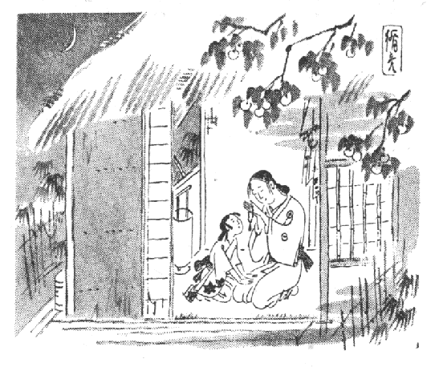
父をはじめ三人の首は、水口の城で自害をした長束大蔵大輔の首と一緒に、その日のうちに三条橋の角に懸けられたのであったが、それから三日ほど過ぎた或る日、
「さあ、もう幾分か世間が静かになりましたから、今日こそお父様を拝みに行って参りましょう」
と、乳母がすゝめた。乳母は変った父の姿を子供に見せてよいか悪いかについて考えていたらしいのであるが、遠い所なら知らず、お父様が河原の露とお果てなされたちょうどその折、同じ都のこんな近くに宿をお取りになりましたのも親子の縁の盡きぬ證拠、きっとお姫様
に会いたいと思し召して、お呼び寄せになったのでございましょうと云うのである。それに、今わの父が有難い上人の読経
をしりぞけ、念佛をさえ唱えずに死んだことを何よりも歎いて、お姫様が回向
をしてお上げなされませ、どんな貴い坊さんの供養にもましてお喜びになるでございましょうなどゝ云うものだから、もうあたりが薄暗くなった黄昏
頃に、たった二人で人目を避けながら出かけて行った。
乳母の言葉は道理に違いないようなものゝ、娘のほんとうの気持を云うと、父が自分に会いたがっているであろうとは、此の間首を斬られる時に「あの児はどうしているか知らん」と自分のことを思い浮かべてくれたであろうとは、夢にも考えられないのであった。城には大勢の兄や姉や弟妹たちがいたことではあり、ろく〳〵口をきいてくれる折とてもなかったのであるから、特に自分と云うものが覚えられていた筈はない。死ぬ時の父の頭の中は、家族に対する愛着などゝは凡そかけ離れた、銷磨
しきれぬ覇気と不満とで煮え返っていたであろう。さればこそ娑婆
の功名に未練を残して、弥陀
の悲願にすがることを潔
しとしなかったのであろうから、自分のようなものが回向したところで、それを喜んでくれる父とは思いようがなかった。幼い娘は乳母に手を曳かれながら、そんな風な考えを漠然と胸に秘めつゝ歩いた。空はよく晴れて、地上の夕闇が濃くなるに従い三日の月が光を増していたが、半月前に近江路
を落ちて来たときに比べると、河原から吹いて来る風がひとしお身に沁み渡るのであった。
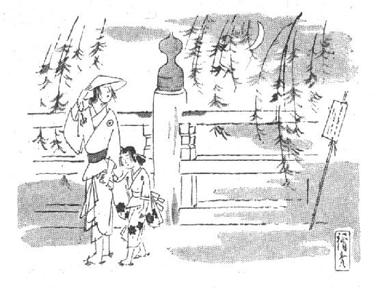
四つの首がならんでいる前へ来ると、黙って手を曳いていた乳母が笠の庇
の下からあたりを見廻して、人通りのとだえた隙を測
りながら合図をした。そうしてしずかに笠の緒を解いて、袂
から数珠
を出した。娘は乳母のするようを学んで、しばらく地にうずくまって念佛を云ってから、あらためて首を見上げたのであったが、恐らく父の顔をこんなにしげ〳〵と、まともに視
つめることが出来たのは、この時が最初だったであろう。父は今までに見たことのない一種不思議な表情をしていた。鼻の片側に陰が出来て、眼瞼
を閉じている両方の眼のまわりが穴のように暗くなっているのは、夕方の光線の作用もあろうけれども、関ヶ原で敗れてから一昨日刑罰に処せられるまで、半月の間の心身の苦労が、父を幾らか窶
れさせたのではないであろうか。飢えと、寒さと、腹下しと、六日間の野宿のあとで、縛られ、小突かれ、車で方々を引っ張り廻されて、誹謗
に抗し屈辱に堪え、或は瞋
り、或は悶
え、或は悔
みなどしたとすれば、さしもの父も瘦せずにはいなかったであろう。だが、それでいて、噂を聞いて想像していたほど、無念の形相
を浮かべてはいなかった。死人の首と云うものから来る或る陰惨さは別として、もはや人を威壓するようなあの生前の気魄が抜けて、浮世の闘争を超越した、すが〳〵しい顔になっていた。よう〳〵肩の重荷が下りた、これでほっとしたと、今になって父はそう云っているように見える。生きている時分にこんな優
しい顔つきをしていてくれたら、自分も此の父をもっと慕ったであろうものを、父のような強情な人をこんな風に変えてしまうのが「死」と云うものであるかも知れぬ。そう思うと娘は始めて哀傷の心が動いた。子として父の最期を憐み、尋常でない死に方をしたのを悲しむ感情が、新たに湧いた。
「お名残は盡きませぬけれど、そういつ迄もこゝに立っていらっしゃいますと、通行の人が訝
しみます。お参りが済んだら早うお戻りなされませ、あんまり暗うなりませぬうちに」
外の三人の首に対しても順々に祈りを捧げたあとで、又もう一度父の前へ来てぼんやり彳
んでいた時であった、娘は乳母にそう云われたので、
「ばあや、あれはなあに」
と云って、首の傍に立ててある小さな白木の札を指した。実は娘は、さっきからその札に書いてある歌の文句らしいものを、刻々に暗くなって行く鈍いあかりの中で、新月
の影にすかしながら読んでいたのである。
治部殿の知行所
は石田にて
旱
となればみつなりもなし
歌の文句はそういう風に読めるのであったが、それが父の死を嘲
ったいたずら者の落書であることは、その時の娘には分らなかった。
「お姫様
」
乳母は前からその立て札に気が付いていたのか、娘にそれを読ませまいとするらしく、
「さ、早うお帰りになりませぬと、夜路が恐うござりますぞえ」
と、急に彼女の手を強く曳いた。
「でも、まあ、これは何なの」
子供の癖で、大人がそんな風に外
らすと却
って訳
を聞きたくなるものだから、娘はそこを動こうとせずに、歌の文句と父の首とを代る〳〵見くらべては、その間にある意味を探ろうとした。此の文句の中には、治部殿だの、石田だの、「みつなり」だのと云う言葉がある、だから父のことを詠
んだものには違いないのだが、父がどうだと云っているのか、娘の智慧
では洒落
が解釈出来ないのであった。
「ねえ、ばあや、歌が書いてあるのじゃないの」
「さあ、何が書いてございますやら」
「これはお父様のことを詠んだのでしょう、ねえ、そうでしょう」
ついうっかりと、こんな場所で「お父様」と云う語を口走ってしまった軽はずみに、娘ははっとしたが、それより早く乳母が、
「しっ」
と云って、娘を体ごと自分の前へ引き着けながら、口で叱る代りに笠の中から睨
んで見せた。
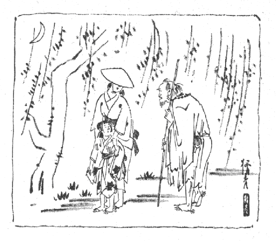
と、その時二人のうしろの方で二た足三足此方へ歩いて来るけはいがしたが、意外に近々と寄って来て、
「もし、―――」
と云った者があった。
「もし」
乳母は何とも返事をしないで、その人影の方へ笠の庇
を低く傾け、娘を一層しっかりと両手の中へ抱え込んだ。乳母がおどろいたのは、今の話を聞かれたと思う憂慮のためばかりではない、あまり突然に音もなく寄って来て、人に物を尋ねるにしては不躾
なほど近い距離に立ち止まったからである。此方の顔を見られまいとするために相手の顔も見ることは出来ないので、その人の風態は分らぬけれども、よぼ〳〵した力のない足取りと皺
がれた声とが、老人を想像せしめるのであった。
「もし、お女中、卒爾
ながらお身たちは、治部殿の御首
を拝んでおいでなされたのでござりましょうな」
そう云ってもまだ答えがないので、人影は重ねて云った。
「―――それはお尋ね申さぬでもようござります。だがその御首は何処
に、孰方
の方角を向いてござるか、教えて下さりませ。のう、お女中、見らるゝ通り愚僧はめくらでござりますが、あやしい者ではござりませぬ」
さては盲目の法師なのか。いや〳〵、めくらを装って油断をさせ、此方の人体
を見とゞける所存ではないのか。何処
から来たものか知れないけれども、めくらが一人でこんな時刻にこんな所へ来られるであろうか。乳母は半信半疑なので、娘をうしろへ庇
うようにして、その声の主を振り仰ぐと、淡い月光を浴びながら、ひどく薄汚いなりをした一人の乞食のような男が杖をついて立っていた。自分を「愚僧」と呼ぶからには、多分僧形
をしているのであろうが、襟に大きな数珠を懸けていることは分るけれども、その身に纏
っているものは法衣
とも何とも正体が見定め難いほど、袖口や裾
が擦
り切れていて、頭には髪がぼう〳〵と伸びている。そうして、自分がめくらであることをよく改めて貰うかのように、顔を月下に仰向
けて反
り身
になっているのである。
ついぞ剃刀
をあてたこともないらしい髥
だらけな顔の、閉じた眼瞼へ月がさしているのを見ると、瘦せて、垢だらけになっているので、年恰好
の判断もつかないけれども、事に依るとまだそれほどの老人ではないのであろうか。最初に老人と思ったのは盲目のために足取りがたど〳〵しいのと、老
けて聞える声音
のせいであったかも知れない。そう云えば乳母は、此の胡算
くさい乞食坊主を何処かで見かけた覚えがあった。二人が都へ上って来てから、娘はいつも宿に引き籠っていたのであるが、乳母は毎日世間の噂を聞くために町へ出かけて行ったので、何処かで此の坊主に行き遇ったことがある、それも一度や二度ではなく、たび〳〵道で擦れちがったことがあるような、と、そう考えて来て、彼女はよう〳〵此の坊主が、三条の河原に小屋を建てゝ住んでいる順慶
と云う行者であったのに心づいた。
こゝで一寸、「聞書」の内容を離れて註釈を入れるが、今此の娘と乳母の前に現れた順慶と云う行者が当時実在したことは他の文献にも記載がある。その頃、順慶の小屋のあった場所、即ち三条河原には「秀次悪逆塚文禄四年七月十四日」と刻した一箇の石塔が立っていたが、順慶はその側に草庵を結び、あさゆう秀次が一族の菩提
を弔うていた者だと云う。右の石塔の下には豊臣秀次の首、及びその子女や妻妾等の遺骸が葬られていたのであって、それは文禄四年の秋、秀次の遺族たち数十人が首を刎
ねられた地点であった。京都瑞泉寺
縁起
に依れば、順慶の歿後、此の石塔は洪水のために崩れてしまい、跡を訪う者もなかったのを、慶長十六年角倉了以
が高瀬川を開くに当ってその荒廃せるを哀れみ、新たに塚を営んで石塔の「悪逆」の二字を削
った。且角倉氏は誓願寺の中興教山上人を請
じて導師とし、死者に各法号を授けて無縁塔に刻し、大佛殿建築の残材、聚楽第
の建物を譲り受けて一寺を創建し、幕府の許可を得て慈周山瑞泉寺と号した。今の瑞泉寺が即ちその舊跡であって、往昔は加茂の河原がそんなにひろがっていたのである。ところで、順慶が何故に秀次一族の墓守
となったかはこれから後に説くであろうが、「聞書」に依れば彼は盲人であったのである。
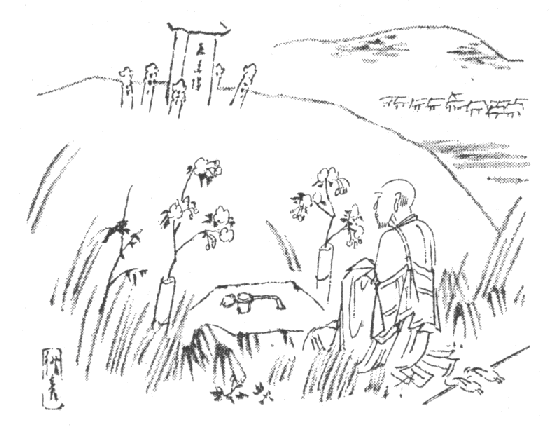
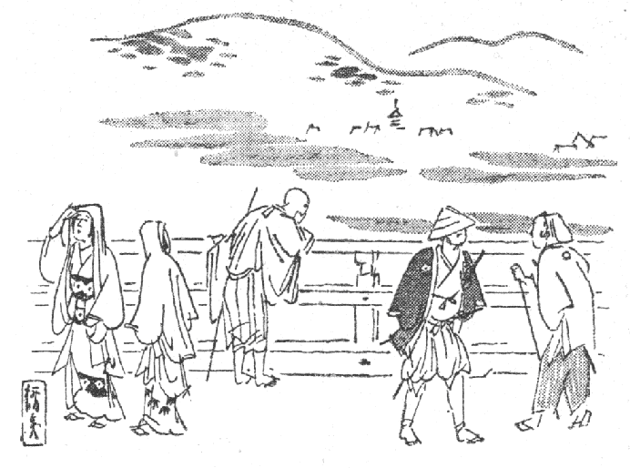
当時、世間では悪逆塚のことを俗に「畜生塚」と呼んでいたが、此の行者のことを「畜生塚の順慶」と称して、三条辺では誰知らぬ者もなかったのであった。順慶はよく、十四五になる小坊主に手引きをさせて京の町をさまよい歩き、或は人家の軒に立って経を読み、或は奥へ請ぜられて加持祈禱
をし、日々僅かな布施
を得て糊口
を凌
いでいたらしかったが、どうかすると、こんな工合にたった一人で河原や橋のあたりへ来てうろついていたり、欄干にもたれながら見えない眼を伏せて水の流れを眺めたりしていた。そうしてそんな場合には、通行人が覚えず足をとゞめる程の声で、ぶつ〳〵ひとりごとを云う癖があった。行者のことだから呪文か陀羅尼
のようなものを唱えているのかも知れないと、そう思って通り過ぎる人が多かったけれども、どうも呪文ではないらしい、普通の言葉で何かしゃべっているらしいと云う者が出て来て、追い〳〵町の人たちが聞き耳を立て、そうっと傍へ近寄ってそのひとりごとに注意すると、
天下は天下の天下なり、関白家の罪は関白の例を引き行はる可
きの事、尤
も理の正当なるべきに、平人
の妻子などのやうに、今日の狼藉
甚だ以て自由なり、行末
めでたかるべき政道にあらず、吁
、因果のほど御用心候へ、御用心候へ
とそう云ってから、
世の中は不昧因果の小車や
よしあし共に廻りはてぬる
と、そう云う歌を二度三度繰り返して云っていた。それが、不明瞭な発音で、自分だけに分ればよいと云う気持で云われるのであるから、一度や二度ではなか〳〵聞き取りにくいのであるが、ちょうど一二年前に彼が畜生塚のほとりへ小屋を造って住み出してから、長い間常に同じことを云っているので、いろ〳〵な人がその文句を聞いた上でたしかめられた。そうしてそれがたしかめられると、次第に市民が此の行者を奇人か狂人扱いにして、家の内へ呼び込んだり物を施したりするのを厭うようになったので、近頃ではだん〳〵窮迫の度がはげしく、もう殆どほんとうの乞食になりかけていた。と云うのは、いったい彼は何処から此の橋の下へ流れて来た者か分らないけれども、今のような文句を暗誦するところを見れば、恐らく殺生関白の遺臣ではないのか。兎にも角にも関白やその一族たちの非業
な殺され方に同情を寄せ、彼等に残酷な刑を与えた政道を批難し、豊臣家の天下を呪
っていることは明かであって、そう云うことを口にする危険な行者と係り合いを持つのは、誰しも迷惑だったからである。さればその時の乳母は、相手が順慶だと知れると幾らか安心はしたものゝ、悪い所で悪い者に摑まったと思って、
「おゝ、そなたはあの畜生塚の―――」
と、そう云ったきり口を噤
んだ。
「左様でござります」
と、月を仰いでいた行者は乳母の方を向き直りながら、長い杖のあたまへ頤
を載せた。
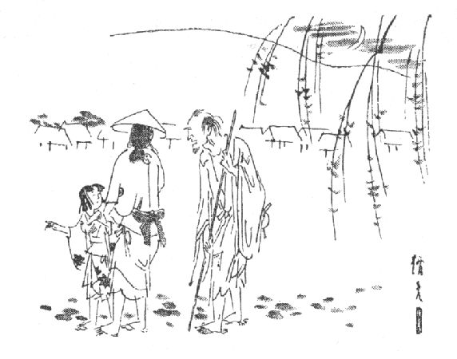
「愚僧を見知っておいでとあらば、定めし此のあたりの町のお方かと存じますが、ようこそお参りをしてお上げなされた。御奇特なことでござりますな」
「いえ、いえ」
と、乳母は否定した。そうしてあとを云われぬ先に、行者の杖に手を持ち添えてやりながら、
「わたくしどもは、たった今通りかゝっただけのこと、お参りをしていたのではござりませぬが、お尋ねの首は」
と、行者をその方へ振り向かせて、
「それ、こゝでござりますぞえ。此方を向いてお拝みなされませ」
と、ねんごろに教えてやってから、黙って娘をさしまねいて、「さあ、行きましょう」と眼顔で伝えた。が、教えられた地点に立った行者は、どう云う訳かすぐには拝もうとしないで、二た足三足歩きかけた背後の草履
のおとを聞くと、
「もし」
と云って、又振り返った。
「無躾
なことを伺うようでござりますが、もしやお身たちは、治部殿のゆかりのお方では」
「いえ、いえ」
と、乳母が慌てゝ云うのを抑えて、
「しかし、お女中、愚僧は只今お身たちが話しておいでなされたことを、聞くとものう聞いていたのでござります。されば、ほんとうのことを仰っしゃって下さりませぬか」
そう云っても相手が無言でふるえているのを、行者はけはいで察したのであろう、ほっと大きな溜息をついた。
「いや、よう分りました、木の根草の根にも心を置かれる御身分として、斯様
な所で出しぬけにお尋ね申しても、仰っしゃって下さらぬのが当り前でござりましょう。したが、のう、お女中、愚僧とてもずっと昔は治部殿に御恩もあり、お恨みもござりましたけれども、此のような仕儀におなりなされては、たゞもう後生
を弔うて上げたい一念ばかりでござります。それにつけても、愚僧がいつも独りごとに申していた歌がござりますが、お聞きなされたことがござりますかな」
そう云ってから、行者はあの、「世の中は不昧因果の小車や」と云う文句を、ゆっくりと二度、平素のひとりごとのような調子でなしに、哀れっぽい節をつけて歌った。
「どうでござります、此の歌のこゝろが、今こそ世間の人たちに分ったでござりましょう。愚僧がこの歌を詠みましたのは、昨日や今日のことではござりませぬ、思えばもう六年の昔、忘れもせぬ文禄乙未
のとしの秋、関白殿の御一族がお果てなされた時のことでござりましたが、―――」
盲人と云うものは人に向って語るときでも相手の顔を見ることが出来ないのであるから、いつでも独りごとを云っているようなものかも知れない。従って乳母は、行者が勝手にしゃべりつゞけている隙をうかゞって、そうっとその場を逃
れようと思えば逃れられた訳だけれども、何かしら此の法師のひたむきな物の云い方が、彼女の足をしばらくそこへ引き止めていたので、それは幼い娘とてもそうであった。娘は行者の云ったことを大人になるまで記憶していて、後に追い〳〵理解するようになったのであって、その時は彼の感傷的な口調が何を語っているのだかはっきり呑み込めなかったのであるが、しかし恐いと思う心が半分と、いったい何者であろうと云う好奇心が半分とで、乳母の袂をしっかり握りしめながら行者の顔を見上げると、それが今はもう全く月の蔭になって、そのうしろの一段高い所にある父の首と大して変らぬように見えた。
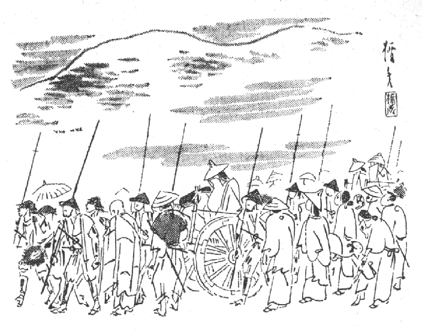
「―――のう、もし、あの時のことは、そこにおいでのお姫様は御存知ないかも知れませぬが、お女中は覚えておいでなさりましょう。それ、その三条の橋の下に、関白殿のお首が懸けられておりましたが、そこへ御一族のお子様がたや上﨟
様がたをお引き出しなされて、何の罪科
もない者を一人々々お斬りなされたのじゃ。いや、その時もちょうど此の程じゅうのようにえらい人出でござりまして、橋の上にも橋の下にも見物の衆が一杯でござりましたわい。愚僧はそんな雑沓
の中へ出かけたところで仕様がござりませぬけれども、見えない眼にもおいとしい方々の御最期を拝みとうて、大勢の人に揉まれながらお仕置場の際
まで参って、女房衆のお泣きになるお声や見物人の何や彼
やと取り沙汰するのを聞いていたのでござります。それ故よう知っておりますが、つい此の河原に二十間四方も堀を掘りまして、ぐるりへ鹿垣
を結
いましてな、殿のお首はその垣の中に、西向きに据えてござりました。そうしておいて、八月の二日の朝早く、いたいけな方々やお若いお美しい方々を、一輛に二三人ずつお乗せ申して、町中を車で引き廻した揚句の果てに、その垣の中へ引き込んだのでござりますが、そんな荒々しいお取り扱いをおさせになったのは、太閤殿下の御本意でござりましたろうか。のう、お女中、仮にも関白殿のお子たちやお部屋様方をお仕置きなさるなら、相当の作法がござりましょうものを、あのように耻をお与えなされてよいものか悪いものか、垣の外にいた見物の衆は、誰一人としてそれを申さぬ者はなく、あの時の御奉行治部少輔どのを呪わぬ者はござりませなんだ。それが、―――まあ、お聞きなされませ、その治部殿が、六年前に関白殿を曝
し首になされたつい近くの橋の袂で、同じ姿におなりなさろうとは、因果でのうて何でござります」
語勢に力を付けたはずみに痰
がつかえたのでもあろうか、喘息病
みのように咽喉
の奥をぜい〳〵鳴らして息を入れた。が、それにしても此の法師は、町の人たちが噂するような狂人であろうか、こんな工合に話す様子を今宵
始めて見るのであるが、こうして面
と向いながらその云うところに耳を傾けると、なるほど、奇人であるかは知れないが、狂人であるとは考えられない。事実を云えば、乳母はさっきから娘の手を取って一歩を前に蹈
み出した姿勢のまゝ、もう少し聞いたら帰りましょう〳〵と思いつゝ、だん〳〵惹
き込まれて行くのである。尤も乳母にしてみれば、さっきの私語を立ち聞きしたと云う以上、どう云うつもりで自分たちを呼び止めたのか、その点が気がゝりなのでもあったが、しかしどうやら害心を蔵していないだけは明かであった。そんなことよりも、多分自分たちが石田の一族であるのを察して、何か聴いて貰いたいものを持っているらしくもある。首のありかを尋ねながら、拝もうともせずに話しかけて来るのは、それを口実にして近寄ったのではないのかと、乳母はそう云う風に感じて、帰るしおを失いかけていた。
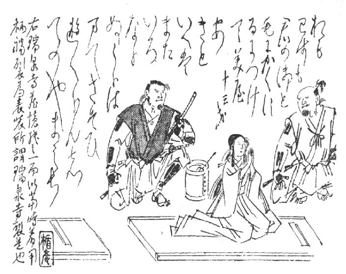
「憚
りながら、あの時世間では、関白殿が此のような悲運にお遇いなされるのも治部殿が讒言
をなされたからじゃと、多くの人が申しておりました。お身たちの前でこれは少々失礼でござりますけれども、治部殿は太閤殿下のおん覚えめでたく、天下の仕置を思いのまゝにしていらしったのでござりますから、たとい御謀叛のおうたがいがありましたにせよ、何とかお執成
しをなされましたらようござりましょうに、忠義顔をして五つの咎
を十ほどにも吹聴
なされ、いらざることを殿下のお耳へお入れ申して、骨肉のあらそいに油を注ぐようなことを、―――いや、御免下さりませ、ほんとうはそうでないのかも知れませぬが、世間の人はそう思っておりました。それに又、なんで頑是
ない方々やお女中方のお命を助けてお上げなされませなんだか。あれも殿下のお指図ならば仕方がござりませぬけれども、みんな治部殿のさしがねじゃと思わぬ者はござりませなんだ。されば愚僧は、殿下にせよ、治部殿にせよ、斯様な無慈悲な仕方をなされて諸人の憎しみをお受けになっては、行末よいことがある筈はない、遠からぬうちに報いがあろうと存じまして、さてこそあの歌を詠んだ次第でござりましたが、そうれ、御覧なさりませ、殿下は間もなくおなくなりなされ、治部どのは今此のような始末におなりなされて、あの歌の通りになったではござりませぬか。お気の毒ではござりますけれども、これはみんなあの時から定まっていたこと、何も〳〵約束事だと思し召さねばなりませぬ。のう、そこなお二人のお方、愚僧の申しましたことがお分りになりましたかな」
「さあ、道理はそうでござりましょうが、.........」
と、乳母はよう〳〵一と言云って、口惜しさに声を詰まらせた。殿様のことを人が何と云おうとも、たゞおとなしく、はい〳〵と聞いていたらよいのだ、うっかり乗せられてはならないと、日頃用心していたのであったが、あまりな言葉に我知らず応じてしまったのである。
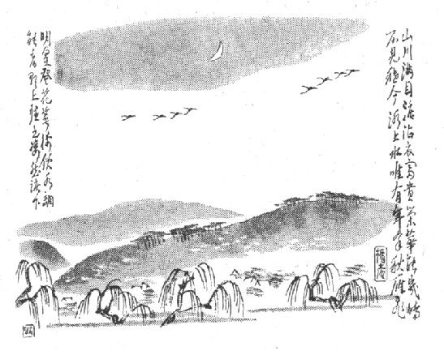
「.........かりにも出家のお身の上として、首になられたお方にまで耻をお搔かせなされますとは」
「あゝ、もし、.........」
「それともお前様は、此のお方に遺恨がおありなされますのか」
「あゝ、もし、仰せの通り愚僧は只今では出家の身の上、治部殿をお恨み申す心など露ほどもありはいたしませぬが、しかしそのように聞えましたのなら、頭は圓めておりましても畢竟
は凡夫の浅ましさ。御勘弁なされて下さりませ」
そう云って行者は、
「あゝ、そうでござります、そうでござります」
と、何かしら独
りで頷
きながら、
「ほんに、ほんに、人様に耻を搔かせるどころではない、昔を思えば、愚僧こそ誰方
さまよりも耻かしい人間でござります。今更それを申しましても返らぬことでござりますが、此のようにめくらになりましたのも、乞食の境涯に落ちましたのも、みんな自分の悪業
からでござりますのに、人さまを恨んではなりませぬ。まして治部殿はもとの御主人でござりますものを、お恨み申しては罰が当ります」
「えゝ、さてはお前様は、.........」
乳母が思わず詰め寄ると、行者はしお〳〵とうなじを垂れて、遠い所を歩いて来てくたびれ切った人のように、体ぐるみ杖の上へもたれかゝった。
「そうでござります、これでもずっと昔は治部殿に仕えておりました武士でござります。心がらから斯様なざまになり果てましたが、世が世ならば今度の戦にお供を申し、此の首になられたお方のために働いていたでござりましょう。それがかなわなんだと云うのは情ないようでござりますが、しかし人間は思い〳〵、浮世はさま〴〵でござりますから、あながち悔んではおりませぬ」
「そうして、お名前は何と申されます」
「名のれと仰っしゃるのでござりますか、―――」
そう云った時、雁が啼
いて通ったので、行者はその声に心を惹かれるかのように空を見上げた。
「―――さあ、それも追い〳〵申し上げるでござりましょうが、実は愚僧は、そこなお二た方を治部殿のお身内とお察し申して、聞いて戴きたいことがかず〳〵あるのでござります。町の人々に何を申しましたところで、真面目に取り合ってもくれませぬし、気違い扱いをされるばかりでござりますから、きょうまで自分の身の上を明かしたことはござりませぬが、お身たちに聞いて戴けましたら定めし此の胸がすうっとするでござりましょう。のう、もし、お願いでござります」
行者は重ねて、
「お願いでござります」
と、物をねだるような調子で云った。
「お身たちも御承知の通り、愚僧は畜生塚の傍
に庵を結んで、関白殿の御一族の菩提
を弔
うているのでござりますが、何のために左様な事をしておりますのか、又何のために、治部少輔殿の身内の武士が両眼を失い、扶持
に離れて斯様にうらぶれておりますのか。ぜひその仔細
を心あるお方にお話し申し、哀れんでは戴けぬ迄も、愚僧のような愚かな男が此の世にいたと云う事を覚えておいて戴きたいと存じていたのでござりましたが、所もあろうに此の橋の袂
、亡き殿様の御首
の前で、図
らずもお身達にお会い申すことが出来ましたのは、矢張御佛のお引き合わせだと思われてなりませぬ。分けてもそこにござらっしゃるお姫様
、―――」
そう云いかけて、
「のう、もし」
と、見えぬ眼を娘の方へ向けた。
「愚僧はお姫様
がどういうお方でいらっしゃいますか、よう知っておりまする。これから先は貴い御身に勿体
ない御苦労を遊ばす事でござりましょうが、でも世の中にはお姫様よりもっと〳〵お傷
わしい目にお遇いなされたお子達がおいでなされますぞえ。そのお子達はな、関白殿と云う偉いお方をお父様にお持ちなされ、聚楽第
と云う立派な御殿にお住まいなされていらっしゃいましたが、愚僧の舊
の主人、石田治部少輔殿のお計らいで、それ、その橋の下で斬られてお了いなされたのじゃ。されば愚僧は、誰よりもお姫様にそのお話をして上げたいのでござりますが、.........」
娘は一層乳母の方へ寄り添いながら薄気味の悪い行者の顔と乳母の顔とを見くらべているばかりであったが、乳母も此の場合、何と挨拶したものか途方に暮れているらしかった。行者の云うことがほんとうなら、同じ主家に奉公をした侍がこんな姿に落ちぶれているのは、今のわが身に思い合わせて満更
哀れでないこともない。ましてこれほど熱心に話したがっているものを無下に断るのも不本意であり、又殿様にも関係のあるらしい昔語を聞いてみたくもあるけれども、さしあたっての当惑は、ついうか〳〵と引き留められて、いつの間にか時刻が移って来たことであった。乳母は夜露にしっとりと湿
って重くなっている娘の袂に触ってみて、追い〳〵冷えて来るのに、風邪
を引かせてはならないと思った。それに第一、こんなに遅くまで帰らないでは宿でも案じているであろうし、この上行者の長話
を聞いていたら、いかな秋の夜も明けてしまうかも知れないのである。
その四
二人が躊躇
するのを見て、行者は新たな提議をした。なるほど、こんな時刻にこんな所で立ち話をしてもいられないし、帰り路の心配もあるであろうから、強
いておすゝめは出来ないけれども、それなら一寸、愚僧と一緒に畜生塚へお参りをして下さらぬか。もしお身たちが治部少輔殿の後生
を弔うつもりであるなら、何を措
いても関白殿の一族を回向
することが大切である、あの人たちは草葉の蔭で今も治部殿を恨んでいるので、彼等の霊を慰めることが、此の佛に対しても何よりの功徳
になる、長くはお引き留め申さないから、その上でお宿へお帰りになるのもよいし、夜路が淋しいと思し召したら、むさい所ではあるけれども、愚僧の庵
で一と夜をお明かしなされてもよくはないかと云うのであった。
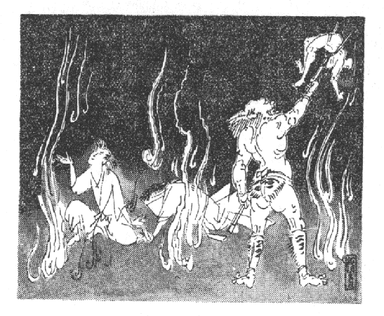
此の申し出では乳母の心を動かしたのに相違なかった。亡き殿様が念佛を唱
えずに死なれたことを気に病んでいた彼女としては、これは聞き捨てにはならないのである。それでなくても殿様は地獄に堕ちていらっしゃるかも知れないのに、畜生塚の亡霊達が祟
っていた日には、尚更お浮かびになれないであろう。まことによいところへ気がついてくれたと、そう思った乳母は不安がる娘を促
し立てゝ、行者
に案内されながら河原へ降りて行ったのである。但し、その晩は塚へお参りをしたあとで行者の庵に泊めて貰ったのか、宿へ戻って寝たのか、聞書の記事ではそこがはっきりしないけれども、そう云う細かい事柄は孰方
でもよい。重要なのは、その晩のことがあってから、娘と乳母とは毎日三条の橋のほとりへ来て、父の首にお参りをするついでに必ず塚へもお参りをし、さてそのあとで行者の庵へ立ち寄っては一と休みした。前にも記すように、三成の遺骸は後に大徳寺へ引き取られたので、そういつ迄も橋の袂に曝
されていたのでもないであろうが、二人は父の首が拝めなくなった後までも、とき〴〵畜生塚を訪ねて香華
を供え、行者のところへ食べ物などを持って行ってやることを怠らなかった。それは、秀次以下の亡霊を慰めるのが第一の目的であったけれども、行者との間にだん〳〵親しみが加わるにつれて、お墓参りよりも彼が折にふれてぽつ〳〵と話す昔語、分けても彼自身の半生の経歴談に惹き付けられて、それを聞かして貰うことが楽しみになったからであった。
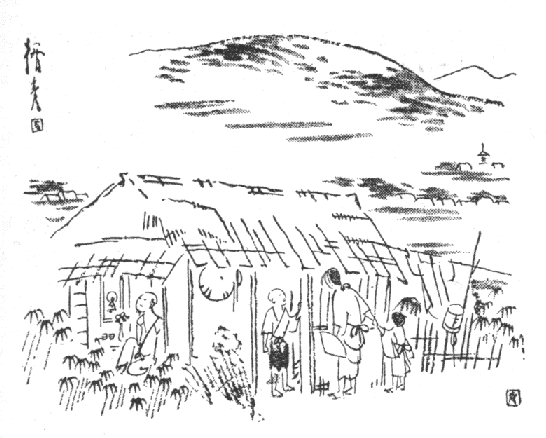
草庵と云えば何か風流にきこえるけれども、当時河原には浮浪人の小屋がたくさん建っていたであろうから、順慶の住居もつまりそう云う乞食小屋の一種であったのに違いあるまい。順慶はそこに小僧と二人で住んでいたのだが、娘と乳母が訪ねて行くと平素の暗い顔をやゝ明るくして、
「きょうもお参りをして下されましたか、御奇特なことでござります」
と云ったり、
「御苦労さまでござります、忝
いことでござります」
と、我がことのように礼を云った。
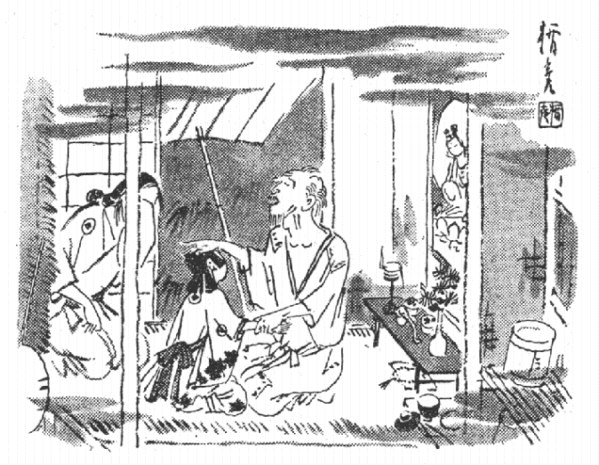
娘の記憶するところに依れば、順慶はよく彼女を膝の上に抱き寄せ、その髪の毛や両頰のあたりを愛撫しながら、「お可愛らしいお姫様
じゃ」とか、「ようくり〳〵とお肥えになっていらっしゃいますな」とか云ったりしたが、娘はそう云う風にされるのが薄気味が悪かった。可愛がってくれるのは有難いけれども、垢
だらけな衣を着けた行者の体には嗅
ぎ馴れない異臭があったし、その上
行者は、皮の厚いざら〳〵した掌
で、髪の毛を搔き分けたり顔を撫でたりするのである。そうして、何か物を云ってくれるときはまだよいけれども、どうかすると長い間黙って撫で廻しているのである。めくらであるからそう云う風にしなければ娘の愛らしさが呑み込めないのも尤
もであるが、事に依るとめくらであることを幸いに、柔かい髪や肌の感触をひそかに楽しんでいたのかも知れない。だがそうとばかりも思えないのは、そんな場合に何かしら別なことを考えながら遠い所へ心を馳
せているような様子が見えて、とき〴〵ぽたりと、盲
いた眼から涙を落すことがあった。一度娘は、
「あれ」
と云って、頭に落ちた雫
を拂って、
「何を泣いているの」
と、行者の顔を振り仰ぐと、行者は慌てゝ、
「おゝ、御免なさりませ」
と云った。そうして急にひしと娘を抱きしめて、髥
の生えた痛い顔で頰ずりをして、
「お姫
さま、―――こうしてお姫様のお髪
を搔いておりましたら、とんでもない昔のこと、悲しいことを思い出したのでござります。それにつけてもお姫様は、御無事に大きゅうおなりなされて下さりませや」
と云いながら、続けてはら〳〵と涙を落した。
初めから娘を「お姫
さま」と呼び、治部少輔の忘れがたみであることを感づいていた行者に対して、改めて乳母が真実を打ち明けたことがあったのか、それともそんな話はなしに、自然と行者の推測を肯定した形になったのか、そこのところは娘の記憶が不確かだけれども、兎に角行者はどんな際にも石田の一族に話しているのだと云う心持を忘れないで、これから以下に記すような回顧談をしたのである。けれどもそれが行者の口から語られたときは、断片的に、前後のつながりや順序もなしに、その日〳〵の気分の工合で偶発的に洩らされたのであったかも知れぬ。恐らく或る時は問いに応じて、又或る時は自分の方から興を湧かしてしゃべったことを、後に娘が成人してから一つの物語に組み立てたのであったろう。聞書の筆者源太夫が嵯峨の尼から聞いたものは、即ち彼女が頭の中で一往編輯し直したところの説話であって、順慶の直話
ではないのであるから、そのつもりで読んで戴かねばならないが、しかし私はそれをもう一度現代の読者に取次ぐに当って、如何
なる形態を選んだらよいか迷うのである。
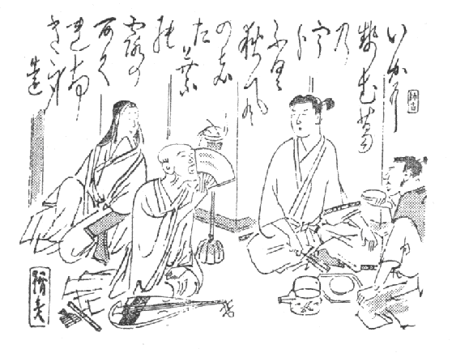
と云う意味は、盲人の直話ではないにしても盲人自らが語りつゝあるような口調を以て綴るべきか、それとも尼が源太夫を相手に話している感じを出すべきか、だがその孰
れの方法に依っても此れから以下が地の文と離れてしまって、前とのつながりが切断される憾
みがある。私の注文は尼が盲人と近づきになったいきさつから、盲人自身の物語へ移る境目
を際立
たせないようにしてすら〳〵と這入って行きたいのであるが、そうするためには矢張聞書の書き方に倣
って直接法と間接法とを適宜に織り交ぜて行くべきであろうか。けれども物語の性質から云うと、大体は盲人の直接法に依る方が都合がよいように思われるので、筋の進展に従って結局そうなって行くことを餘儀なくされるかも知れない。で、此の盲人、―――順慶と云う行者は、まだ盲目でなかった頃は下妻左衛門尉なにがしと云う武士であって、もと石田家に仕えていたが、後に故あって盲目となり、性来好む道であった音曲
や雑藝を習い、やがて関白秀次の抱
え座頭になった者であると云う。しかしながらそれは表面の経路であって、彼が石田家を浪々した真の事情は他に存する。蓋
し左衛門尉は主人三成の密旨を受けて、当時兎角の噂のあった秀次一家の動静を探るために、細作
となって聚楽
の邸へ奉公をしたのである。彼がそう云う使命を授けられたのは、主人三成の信任が厚かったのに違いないが、前述の如く音曲の嗜
みがあったと云うことゝ、その頃の撿挍
として有名な伊豆圓一と懇親な間柄であったことゝが、三成をして彼に眼星
をつけさせた有力な理由だったのであろう。なぜなら、戦国の世に敵地へ赴
いて間牒の任務に服するのには普通の武士では思うように行かないので、しば〳〵座頭を用いたのであった。座頭はめくらの藝人であって専ら座興を添えることを職業としており、全く武力のない不具者であるから、人々も油断をするので、警戒の厳重な大名の家庭へも案外たやすく這入ることが出来、時には主人の左右にも仕え、高貴な婦人方の身辺にも近づく機会を得たのである。されば当時の武将たちが彼等を間牒に放った例は諸書に散見するのであって、分けても陶晴賢
がめくら法師を間者として毛利元就
の行動を知ろうとした話は、最も人口に膾炙
している。老獪
な元就はそのめくら法師が敵方の廻し者であることを感づきつゝ反間苦肉の策謀を運
らし、逆に彼を利用して晴賢を厳嶋
へ誘い出した。又小田原の北条早雲は、盲人は無用の者であるから領内のめくらを搦
め取って海に沈めよと云う触れを出し、その噂を聞いて領外へ逃げ散った盲人の或る者を密
かに間者に用いていた。その外、甲斐の武田信玄は徳川方の細作
を掃蕩するために領内の盲人八百人を鏖殺
したと云う伝説があり、続々群書類従第十教育部所載北条幻庵覚書には、女中が盲人を近づけることの危険を説いて、戒めている一節がある。―――
一 ざとうしゆ参候はゞ御さか月給
ひ御ひき給候べく候、あなたがたに候はんずるざとうしゆ参候はゞ御ねん比
は候べく候、なれ〳〵しくは御おき候まじく候、ついでに心へ候へ、ざとうとてもおとこのめのくらきにて候、女中がたへあんないなしに立入物にてはなく候、（中略）きんねんざとうと申せばいづれもおくがたへ参候、心へがたく候へども御国ぶりにて候まゝ一人して申されず候、たゞしみん一など参候はゞ御心やすく御よび候てもくるしからず候、おさなくより御しり候、又としよりぬるがふつゝかの物にて候、御ねんごろよく候べく候、さ一これ又おなじごときの物にて候、その外はなれ〳〵とはめし候まじく候、さて候ともざとうしゆなど三こんなどのうちには御しやうばんにはめし候まじく候、御つぎにて給
候か、又御またせ候てのちに御さかな給候て、くこん給候べく候
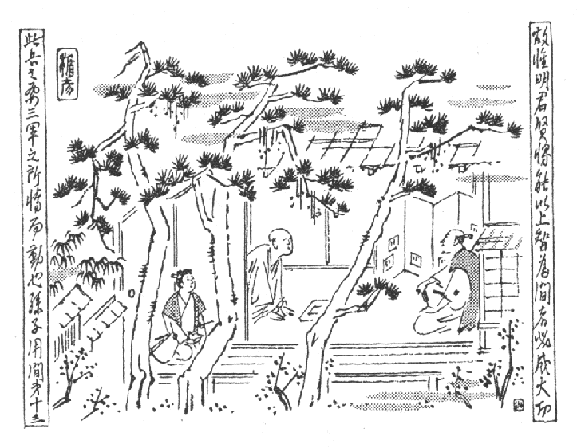
此の筆者幻庵は北条早雲の子であって名を長綱、法名を宗哲と号し、天正十七年九十七歳の長寿を以て卒去した人で、此の書は北条氏康の娘、即ち幻庵の甥
の子に当る女子が武州世田ヶ谷の吉良氏朝に嫁ぐ時に、彼女に与えたものであると云うが、「近年座頭と申せばいづれも奥方へ参候、心得がたく候へども」とあるのを見れば、家臣と雖も男子は禁制されていた玉簾
の奥ふかきあたりへ座頭ばかりは自由に出入を許されていたのである。幻庵は此の風習に禍根の存することを憂えて、「座頭とても男の眼のくらきにて候、女中方へ案内なしに立入るものにてはなく候」と云い、「なれ〳〵しくは御置き候まじく候」「なれ〳〵とは召し候まじく候」とも云い、彼等に酒肴を賜うのにも「御つぎにて給候か、又御待たせ候て後に御肴給候て」などゝ細かい注意迄しているが、但し古くより召し使うて素性
や気心
の知れている「みん一」とか「さ一」とか云う者共は此の限りにあらずとして、「御心易くお呼び候ても苦しからず候」と云い、絶対には禁止していないのである。
北条早雲ならびに幻庵の話が出たついでに、下妻左衛門尉の師匠であった伊豆圓一のことを記しておこう。中山太郎氏著「日本盲人史」に引用してある「本朝盲人伝」に曰く、
圓一は伊豆と称す。父を土屋昌遠と云ひ、母は菅沼氏。父昌遠の武田信虎に従ひて京都に赴くの後、眼を患ひ明を失ふ。因
て母と俱
に遠江
国井伊谷に至り、舅
の菅沼治郎右衛門忠久の家に寓す。後徳川家康の今川義元の許
に在るや、其の側に侍す。尋
で義元の子氏真に仕ふ。後家康の氏真と隙
あるや、更に小田原に赴き、北条氏政に仕ふ。氏政圓一をして撿挍
たらしめんとして京師に赴かしむ。圓一三河を過ぐるや、家康延見して黄金を賜ふ。永禄中井伊谷の菅沼治郎右衛門忠久、近藤石見守
秀用、鈴木三郎太夫重長、麾下に属せざるを以て、家康圓一を召して密事を告げ、且三人の家に遣はして招諭せしむ。乃ち井伊谷に赴き、三人の答を得て復命す。尋で小田原に還る。天正十八年小田原城陥る。氏政死に臨み、其の族人を召す。圓一も亦側に侍す。家康圓一を助けんと欲し、井伊兵部少輔直政をして圓一を城外に出さしむ。氏政辞世の句を誦して圓一に示し、且朝比奈左近宗利をして其の宅を護らしむ。慶長五年石田三成兵を挙げ、使を洛中に遣はし、一族の関ヶ原に在るものを録せしむ。圓一の一族の多く関ヶ原に在るを以て、其の妻子を大坂に遣はすべしと告ぐれども従はず。（中略）後総撿挍となり、（中略）元和七年十二月二十五日京都に歿す。年八十一。諡
して誠江と曰ふ。（中略）或は曰く、圓一は阿茶の局
の親戚なりと云々
と。
又一説に、圓一は家康の間牒として甲斐に入り、武田家の機密を探ったので、信玄が領内の盲人八百人を鏖殺
しようとしたのはそれが原因であったと云う。もし圓一が伝うる如く家康の愛妾阿茶の局の縁辺の者であったとすれば、徳川氏、今川氏、北条氏等の庇護
を得たのも偶然でないが、何にしても反覆常なき諸大名の間を渡り歩いていた彼は、陽に遊藝を標榜
して陰に軍事探偵を副業とした典型的な座頭の一人だったのである。而も三成の命を啣
んで細作
となるべく志した行者順慶、当時の下妻左衛門尉は、此の圓一と入魂
であったのを幸いに、彼の盡力に依って短時日の間に当道の瞽官
を得たと云う。
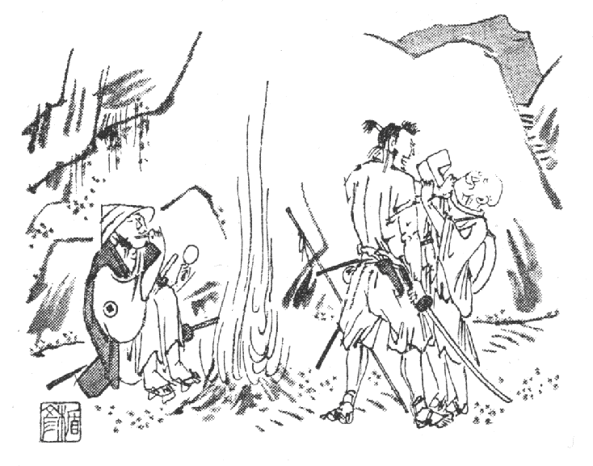
こゝに「当道」というのは、今日でも箏曲
や地唄
のことを「当道音楽」と称しているので、耳新しい言葉ではないが、その頃にあっては平曲、浄瑠璃、表白
、その他の雑藝を以て生活していた盲人の組合、所謂
「座」であって、撿挍、別当、勾当
、座頭の四官があり、これらの四官が又十六の階級に分れていた。されば左衛門尉が盲人となり、且音曲に巧みであったからと云って、此の「座」に加わって当道の官位を得るのでなければ、貴顕縉紳
の邸宅へ接近することは出来なかった訳であるが、普通これらの官位を買うには当道を支配する久我右大臣家や組合の方へ多額の冥加金
を納めなければならないので、それだけ全国の盲人の憧憬の的となっていた。備後
の国神石郡の田植唄に、
おん坊京に上るなアら
びや箱なんぞは置いて行け
あとでつるりやつんつるりや
弾
いてなり慰もう
と云う文句が残っているそうであるが、田舎の盲人が金を蓄めて、琵琶
の箱を背に負うて、座頭の位をあがなうために京上りをする途中、剽盗
や強盗に出遇う話はしば〳〵昔の物語の中に見受けられる。左衛門尉は圓一と如何なる縁故があったのか詳
かでないけれども、彼のお蔭でたやすく勾当の位を得、姓名を藪原辰一と改めて、文禄二年の頃からとき〴〵聚楽
の城中に招かれ、次いで城内に住み込むようになったと云う。蓋し圓一が総撿挍の位に登ったのは慶長年中のことだけれども、当時より既に諸大名の御贔屓
にあずかり、政治的背景を持っていた一流の座頭であったから、座中に於いても権威を振っていた事情を察すべく、大方三成の邸などへも常に出入していたのであろう。そうだとすれば圓一も亦三成の内命を受けて、左衛門尉を関白家へ推挽
するなど、斡旋
の労を取ったのかも知れぬ。即ち彼は左衛門尉に瞽官を与えたのみならず、間牒の術をも授けたのであろう。が、順慶の告白のうちで最も奇異の感に打たれるのは、彼は最初はほんとうに失明したのではなく、座頭の資格を得るために佯
って盲人になったのであった。
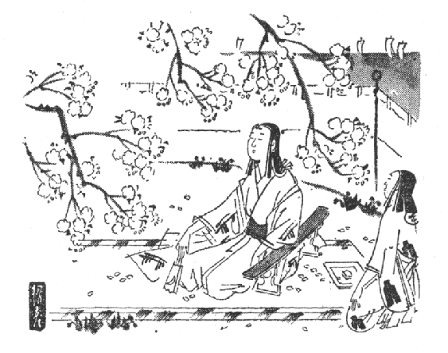
「まことのことを申しますなら、じつは愚僧は、まだその折にはめくらになっておりませなんだ。あれは文禄元年の夏、君のお供をいたしまして朝鮮国へ渡海
いたし、かの国のみやこ京城と申す所に屯
いたしておりましたが、あくるどしの正月碧蹄館
のたゝかいに明
の大軍を打ちやぶりまして味方が大勝利を得ましたことがござります。然るにそれから間もなくのこと、或る夜愚僧を御前へお召しになりまして、人を遠ざけて仰せられますのには、その方を見込んで密々に申し附けたい大事がある、某
ちかごろ名護屋
のたよりを承るに、勿体
なくも淀君さまには御懐姙なされた由であるが、それにつけて心がゝりなのは聚楽におわします関白殿。今日本の諸大名は海を越えて此の国へ押し寄せ、太閤殿下さえはる〴〵御動座遊ばしていらっしゃるのに、あのお方は天下の政務を掌
る御身として、殿下のお留守を幸いに驕慢
の沙汰が多く、日々狂おしい御乱行に耽
っていらっしゃるとのこと、委細の様子は、たとい三成此の地に在って幾千里の山河を隔つるとも、やわか存ぜぬことがあろうぞ。しかし今迄はよいけれども、萬一若君御誕生とも相成らば此の後殿下との御仲は如何あるべき。よもやとは存ずるが、ひょっとしたら謀叛
を思
し立つようなことがないとは限らぬ。さある時は豊臣家のおんため、天下のため、由々敷
一大事と存じ、某
日夜軍旅にあって合戦の謀
に肝胆を砕く間にも、一方ならず胸を痛めているのであるが、それについて考えるのに、その方は生来器用の者で琵琶を上手に弾くのみならず、伊豆圓一とも深い交りがあると云うのは何よりの仕合わせ、これより密かに都へ立ち越え、盲人の体
を装うて座頭になりすまし、ついでを求めて聚楽へ出仕致すように。そうして関白殿の日常は申すに及ばず、城中の模様に随分と気をつけ、不審の廉
があったらば怠らず注進するようにと、そう云うお言葉でござりました」―――順慶はその間の事情を斯く語って、自分は武士と生れたからには戦場の功名をこそ願え、一時の方便にもせよ弓矢を捨てゝ座頭の群に投ずる事は心外であると思ったけれども、「いや〳〵、戦場の働きは誰にでも出来るが、これはその方でなければ出来ぬ、此の仕事を首尾よくし終
せてくれたら、大将の首を五つ六つ取ったよりも大きな手柄であると思うぞ、これこそ無二の忠義であるぞ」と、再三の仰せを否
み難く、餘儀ない羽目でお受けしたのだと云っている。そうして豫め主人三成としめし合わせ、或る日の合戦に戦場に於いて行くえ不明になったかの如く取りつくろい、人知れず陣中を脱出して釜山
より名護屋に帰り、ついで京都に上ったのであるが、その途中から盲人の真似をし始め、琵琶を背負うて京上りをするめくら法師になり変ったのであると云う。
だが、朝鮮にいた三成が淀君の懐姙のことを知ったのはいつごろであったろうか。秀吉は天正十八年小田原攻めの時にも書を北政所
に送って、淀君を陣中に招いているが、今度の出陣にも名護屋の行営
へ連れて行ったのである。それは文禄元年の三月であって、淀君は在陣中に太閤の種を宿し、あくる年の春頃大坂へ帰った。太閤より北政所へ宛てた二年五月二十二月の書信の一節に、
この間よりすこしかいき（咳気）いたし候まゝ文にて不レ
申、文のかきはしめにて候、又にのまるとの（二丸殿、淀君のこと）みもちのよしうけ給
候、めてたく候云々
とあるのは、既に淀君が大坂へ帰った後のものであって、若君秀頼の誕生は同年八月三日であった。されば三成はその年の初めあたりに様子を聞いていたのであろう。そうして、もしも男子が生れたならば太閤と秀次との間柄がいよ〳〵面白くなくなりはしないか、太閤の意中、秀次に関白を譲ったことを悔いる心が生じるであろうし、秀次も亦それを察して不安を感ずるところから、幾分捨て鉢的な動機も手伝って、ます〳〵粗暴な行いを募
らせはしないかと、早くも将来を案じたのであろう。一方秀次の行状は、もうその頃から眼にあまるものが多かった。文禄二年正月五日には正親町
上皇が崩御遊ばされて、諒闇
の世になったにも拘わらず、彼は関白の職にありながら精進潔斎することを怠り、十六日の夕食に鶴を食べた。そうしてしば〳〵花やかな行装を作って野遊びや狩猟に出かけた。世間一般が鳴物
を停止
しているのに、不謹慎にも聚楽の城中ではさま〴〵な宴会を催し、撿挍
を召して平家を語らせたり、相撲を興行したりした。その外彼の常軌を逸した残忍な行為や婬蕩
な振舞について、機敏な三成は逐一
報告を受け取っていたので、さてこそ腹心の侍にそう云う密旨を授けたのであろう。
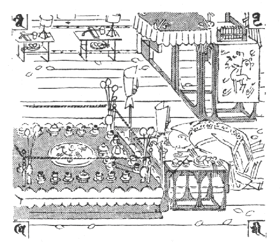
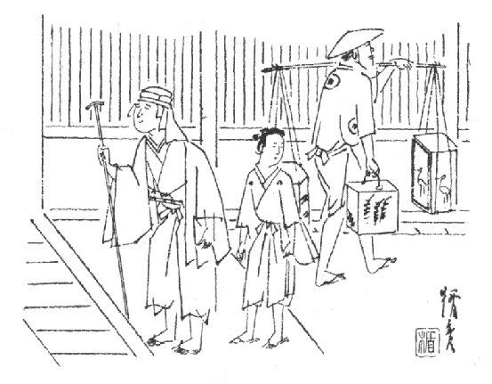
左衛門尉が京へ上った頃は、何卒淀殿が男子をお生みなされるようにと、方々の寺々で高僧たちがかず〳〵の大法秘法を修し、就中
変成
男子の法を盛んに行っている最中であった。按ずるに淀君はそれより五年前、天正十七年五月二十七日に一子鶴松を生んだことがあったが、その子は僅か三歳を以て早世したので、今度のお産に対する太閤の焦心と天下の期待とが大きかったことは察するに足りる。然るに祈禱の効
があって若君が誕生されたので、世間は挙
って豊臣家の萬歳を唱え、太閤は五十七歳の老齢に達して世継ぎの子を儲
けたうれしさの餘り、その顔を見るために名護屋を八月の二十五日に立って、わざ〳〵大坂へ帰って来た。斯くして三成の心配がだん〳〵事実となる形勢を生じ、左衛門尉は己れの使命の軽からぬことを胆
に銘じたのである。彼はその年の秋頃には首尾よく勾当の位を得、「藪原辰一」と云う盲人に化けてしば〳〵聚楽の城内へも召されるようになっていた。彼が石田三成の臣であること、朝鮮の陣中から失踪して密かに上洛した者であること、而もにせめくらであることを知っていたのは、伊豆圓一だけであった。「めあきがめくらの真似をいたすと云うことは、役者の狂言にいたしましてもむずかしいものでござります。まして二六時ちゅう、さめているときも寝ているときもめくらの心を失わずにいる苦しさは、口では申されませぬ。それに、もうその頃は若君さま御誕生の噂
につれまして、関白殿のお行末はどうであろうか、よも御無事では済むまいなどゝ申す取り沙汰がぽつ〳〵世上に流布
いたしまして、聚楽のお城にも聞えて参りましたので、お城の人々も自然と出入りの者の挙動に気をつけ、廻し者などが忍び込んでおりはせぬかと疑いの眼を光らせるようになっていたのでござりますから、少しの油断もなりませなんだ。されば愚僧は、出仕いたしておりますときは申す迄もなく、宿へ退
りましても、めあきであると云うことを誰にも悟らせぬようにつとめたのでござりました。でござりますから、身のまわりの世話をしてくれまする女子供、仲間、小者
の末にいたるまで、皆がほんとうのめくらであるように思い込んでいたのでござりますが、御前へ召されておりますときは気が張りつめておりますけれども、我が家へ戻って打ちくつろいでおりますときが何より辛うござりました」―――順慶はこう語ってから、
「あゝ」
と云って急に長大息
するのである。
「あゝ、ほんとうに、あの時分の辛さは大抵ではござりませなんだが、それでも愚僧は、まだあの時分には、姿は座頭を装うておりましても、こゝろは石田治部少輔殿の家来、下妻左衛門尉であることを忘れてはおりませなんだ。今の勤めは戦場で武勇を競
いますよりも幾層倍の苦しみの上に、智慧
と分別
とがのうてはかないませぬけれども、それもこれも主君のおんため、天下のためと存じまして、身を粉
に砕きますとてもお城の様子を探らずに置こうかと、思いきわめていたのでござります。その一心が通じましてか、お城のうちでは誰方
さまも愚僧を疑うお方はなく、皆々さまがひいきにして下され、いろ〳〵のお催しの折には缺かさずお呼び出しにあずかりまして、関白殿の御前はもとより、時には奥御殿の方へまで召されるようになりましたのでござりますが、これこそ愚僧のかね〴〵望んでおりましたところ、願うてもなき仕合わせなのでござりました」
順慶は又語をついで云う。
「それと申すのも、おしろの秘密をさぐりますのにはお女中がたとおこゝろやすくいたしますのが、何かとたよりが多かったからでござります。そのころ君の御家来には木村常陸介どの、粟野杢助
どの、熊谷大膳どの、白井備後守どの、東福寺の隆西堂どの、などの方々がひかえておいでなされましたので、迂濶
に聞き耳を立てるわけにも参りませなんだが、お女中がたは何と申してもお口が軽うござりますから、お伽
に上っておりますと、いろ〳〵のことを聞き出すついでがござりました。左様でござります。あの、文禄四年八月二日、この前の河原でお果てなされた上﨟様方、今此の塚の下に眠っていらっしゃる方々は、すべてゞ三十四人と云うおびたゞしい数でござりますが、愚僧がはじめて奥向へつとめましたころにも、ずいぶん大勢のお部屋さま方がいらっしゃいまして、分けても君の御寵愛を蒙
っていらっしゃいましたのは、若君仙千代丸さまの御母上、おわこの前と申すお方。このお方は美濃の国の住人日比野下野守
のおんむすめで、お亡くなりなされました時が十八歳でいらっしゃいましたから、当時はよう〳〵十六歳でござりましたが、何分総領のお子様をお生みなされましたので、とくべつのお情がかゝっていたようでござりました。次には若君御百丸さまの御母上、お辰の前と申すお方、此のお方は尾張の国の住人山口松雲のおん娘で、十七歳でいらっしゃいました。次には若君御土丸さまの御母上のおちゃの前、これは竹中与左衛門と申す人のおんむすめで十六歳。次には若君御十丸さまの御母上のおさこの前、これは北野の梅松院のおんむすめで十七歳。それから、摂津の国小浜御坊のおんむすめで、中納言の局とも申し、御亀御前とも申したお方。このお方はお年も三十路
をおこえなされ、さかりは過ぎていらっしゃいましたが、よろずのみちにお嗜
みがふかく、ゆうにやさしいお心ざまでいらっしゃいましたし、姫君さまの御母上でもいらっしゃいましたので、やはり外の上﨟がたとはお取りあつかいが違うておりました。そう云うわけで、お子様方はお五方
おいでなされましたが、姫君さまのおとしが七つ、仙千代丸さまのおとしが四つでござりましたから、その餘
のかた〴〵は二つをかしらに当歳までのがんぜないおとしごろでござりました」
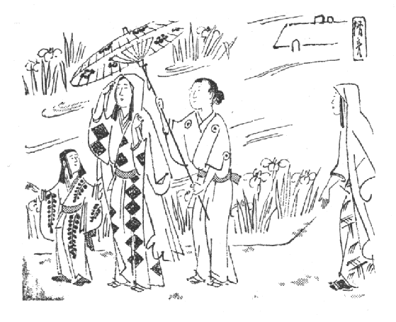
順慶は更につゞけて、
「なれども只今申し上げましたのはいずれもお側女
の方々ばかり。御台様
と申されますのは、前大納言のおんむすめ。おとしは三十路を一つ二つこえていらっしゃいましたけれども、田舎そだちの方々とは違いまして、やんごとない雲上
の女房でいらっしゃいましたから、姿かたちの美しさ、お顔の色の雪のような白さは、二十
ほどにしか見えぬくらいでござりました」
と、そう云って、眼瞼の中にある幻を追いかけるような風情
をする。
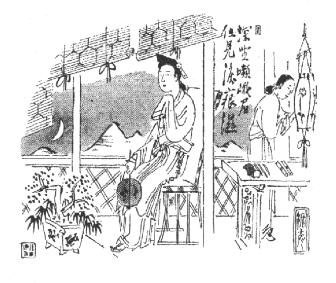
此の話の中にある御台様と云うのは、関白秀次の正室であった一の台の局のことで、後の法号は徳法院誓威大姉、瑞泉寺所蔵の畫像には行年三十餘とあるが、太閤記に記す三十四歳が本当だとすれば、順慶の藪原撿挍が始めて伺候
した頃には三十二歳だったであろう。父は太政大臣実兼十一世の孫菊亭右大臣晴李
で、今の菊亭侯爵家の祖先に当り、その邸が今出川
にあるので「今出川殿」と号した。ところで、順慶も次に語っているように、此の夫人には連れ子が一人あったのであるから、秀次に嫁したのが初婚でなかったことは明かである。連れ子は女の子で、おみや御前と云い、二年の後に河原で首を刎
ねられた時が十三歳であった。蓋し行者順慶が彼の草庵を訪れる娘の髪を撫でながらとき〴〵物を考え込んだり、涙をおとしたりしたと云うのは、ちょうど年頃が似かよっていたおみや御前の面影を追想したゝめであったことが、後になってから思い合わされるのであるが、それにしても此のおみや御前の父、一の台の局の前の夫は何者であったか。石田軍記には「父は尾張の何某」とあり、織田信長の旗下の士であったとか云うが、察するところ、右大臣などゝ云っても当時の公卿は大した財力も権力もあったわけではないから、身分の低い田舎武士などに娘を遣わしたのかも知れない。そうしてそれがたま〳〵後家になっていたか、或は無理じいに夫婦の仲を割
かれたかして、秀次に迎えられたのかも知れない。萬一そう云うことであるなら、雲上の出であるからと云ってさまで別人あつかいをするには当らないが、しかし嵯峨の尼は、順慶が此の一の台の局のことを云い出す時にはいつも面上に一種の感激が溢
れていたのを見たと云う。事実順慶は、三十人にあまる秀次の嬪妾
のうちで彼女を一段と高く崇
めており、いかなる場合にも敬慕の念を失うことがないのである。
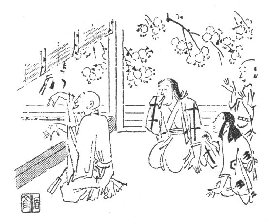
「愚僧などが拝みましたところでは、御器量と申し、品威と申し、ひときわすぐれていらっしゃいましたので、此のお方こそ誰方
様にも優
して御寵愛がありそうなものだと存じましたのに、そうでもござりませなんだのは、やはりお子様がなかったせいでござりましょうか。もっとも一の御台さまとして諸人に敬い冊
かれていらっしゃいましたから、うわべは人の羨みそうなお身の上でござりましたけれども、御夫婦とはたゞ名ばかりの、めったに殿にお逢い遊ばす折もなく、あじきない月日を送っていらしったのでござりました。さればおしろでは明けくれ御酒宴がござりまして、賑
やかなことでござりましたけれども、左様な席へもお出ましにならず、いつも奥御殿にたれこめてのみおくらしなされましたので、とかく御気分の沈みがちな時が多かったようでござりました。でも幾分かその淋しさをお忘れなされて、お紛れになっていらっしゃいましたのは、おみや御前と申すお方がいらしったからでござります。このお方は、御台様の連れ子でいらっしゃいまして、当時は十一におなりなされ、お顔だちから姿かたちまでお母様にそっくりでいらっしゃいましたが、御台様としましては、お父様のない此のお子をどんなにかいとおしくも、御不便
にも思し召したのでござりましょう。ほんに、そう云えば、りっぱな御殿におすまいなされていらっしゃいましても、ほんとうのところは親一人子一人のたよりない方々でござりましたから、たがいに片時もお離れなさらず、何かにつけて慰め合うていらっしゃいましたのもお道理でござります。それにまた、どう云ういんねんか、此のお二た方は愚僧をたいそう御贔屓
にして下されまして、辰一を呼べ、退屈ざましに何か聴かしてと、有難い仰せを戴いたことがたび〳〵でござりましたが、勾当
と云う位は持っておりましてもそれは名ばかりでござりまして、もとより長年研
きをかけました藝ではなく、お耻かしい技
に過ぎませぬのに、どうしてお気に召しましたのやら。もっともお聞きに入れましたのは琵琶ばかりではござりませぬ。平家を語りましたのではなか〳〵本筋の座頭たちには及びませぬ故、たゞ何とのう四方山
の世間話をいたしましたり、又は諸国の昔話、浄瑠璃、草紙の類などを面白おかしゅうこしらえて、道化
た身ぶり手真似などを加えて申し上げますと、お二た方ともいつも御機嫌がうるわしく、ときにはから〳〵と陽気にお笑い遊ばすことがござりました」
順慶はそこで調子をかえて、
「いや、人間と云うものは、そのとき〴〵の境涯につれて変れば変るものでござります。見らるゝ通り愚僧は今も不愛想な、陰気な性分でござりますが、ましてその頃はまだ武士気質
の、律義
な男でござりましたから、お女中の御機嫌をうかゞうことなどは出来そうもござりませなんだのに、お二た方の御前へ出ますと、何卒お笑い遊ばすようにと懸命になりますところから、洒落
や軽口はおろかなこと、思いも寄らぬ作りばなしの筋などを自然とたくみ出しまして、興に任
せて譃
八百を申し上げるのでござりましたが、ぜんたい自分の何処を押せば斯様
な音が出るのであろうと、我と我が身をあやしんだのでござりました」
その五
物語はこゝで一転して、太閤が秀頼に対する愛着と、伏見築城のことゝを述べている。
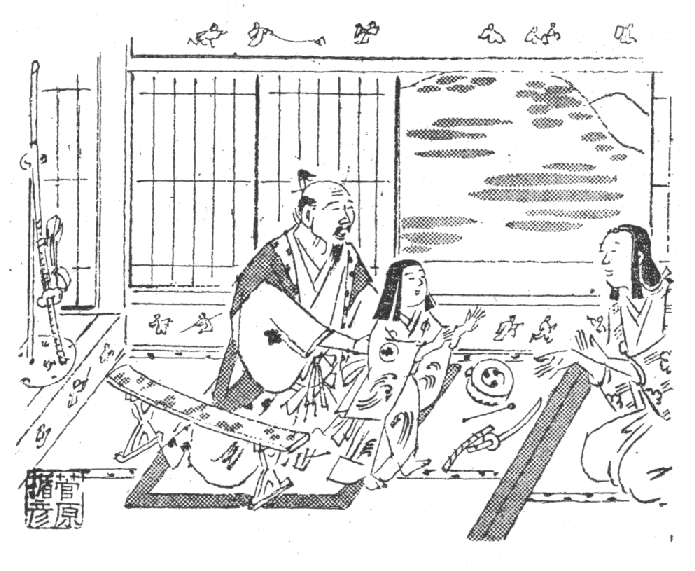
「今の秀頼公のことを、当時は皆が『お拾
いさま』と申しました。それは何故かと申しますのに、生れた子供は、一旦捨て児にいたしまして人に拾うて貰うた方が無事に育つと申します。されば殿下の思召
にて、若君をお捨てなされまして、それを松浦讃岐守殿がお拾いなされ、何かとお世話なされたのでござりましたが、そう云うことから此の君のお名は『拾い』とする、下々の者まで『お』の字を附けて呼んではならぬ、『拾い』と呼び捨てにするようになどゝ、やかましいお触れが出ましたけれども、まさかわれ〳〵が呼び捨てにはいたしかねますので、いつからともなく『お』の字や『さま』をつけるようになったのでござります」
そのことは、文禄二年八月九日、北政所
へ送った太閤の書簡にも、
はや〳〵とまつら人（松浦人）おこし候事、まんぞくにて候、そもじよりれい申候べく候、さだめてまつうら、こをひろい候て、はや〳〵と申こし候間、すなはち、このなはひろいこと可申候、した〳〵まで、おのじもつけ候まじく候、ひろい〳〵と可申候
とある通りで、当時一般に行われていた迷信とは云いながら、太閤ほどの英雄が我が子の成長を祈るためには如何に心を労したかゞ分るのであるが、ついで翌年の正月から伏見城の大土木を起したのも、可愛い秀頼に大坂の城を譲ってやりたさに、己れ自身の隠栖
の地を求めたゝめであった。
これより先太閤は、嘗て松永久秀が多聞城を築いていた大和の国志貴
山の地を相したが、あまり辺鄙
に過ぎるところから、改めて京坂
の間に候補地を物色して伏見に定めた。斯くて正月のうちに佐久間河内守、滝川豊前守、佐藤駿河守、水野亀助、石尾与兵衛尉、竹中貞右衛門尉の六人を選んで普請奉行
に命じ、「伏見普請の儀、油断無く勤め候へ、かねて入用の物どもは目録を以て石田増田長束などに相談せしめ、萬
はかの行くやうに有るべき旨」を仰せたので、六人の衆は「忝き仰せには御座候へ共、小知小見の身を以て莫大なる御普請の儀いかゞおはしまし候べき」と一往辞退したのであったが、「その儀は叶はず」とあって、遂にお受けをした。又太閤は三成以下の五奉行に旨を啣
め、二月朔日
までに諸役人共悉
く伏見へ着到するように国々へ廻文を出させたので、当日までに集まった武士を始め、大工、土工、人足等の総数は二十五萬人に達し、醍醐
、山科
、比叡山雲母坂
より大石を引き出すこと夥
しく、堀普請などは、幾つにも区分けをして奉行衆が代る〴〵人夫を督励し、見る〳〵うちに掘って行ったと云う。
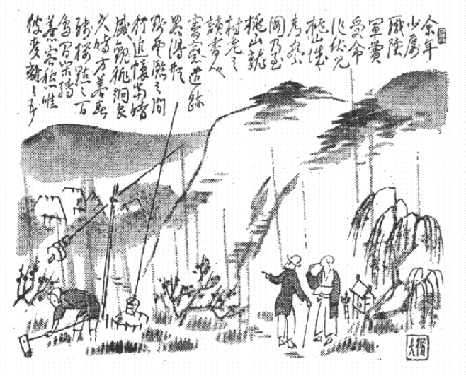
「そも〳〵伏見と申す所は、南は宇治川の長堤曲浦
が蜿々
と麓をめぐっておりまして、大坂よりの着船に便よろしく、北は洛外に打ちつゞき在家が幾重にも引き廻して商賈
が繁昌いたしており、東は町に添うて木津川が流れておりまして、古人の歌にも、
木津川の端に生ひたるかば桜
ちるこそ花の綴目
なりけれ
とあるのでござります。また辰巳
には松柏
の生い茂りました青山が峨々
とそびえ、その洞にある醍醐寺からは遠寺
の晩鐘がきこえて参ります。さてそのみねに引きつゞいては、喜撰法師が住んでおりました喜撰ヶ嶽、三室戸
などゝ申す山々が打ち連なって、老松琴を吟じ、夜わたる猿
のこえもわびしく、麓には三十三箇所の順礼札を打つ観音堂がござりますが、
夜もすがら月をみむろも明け行けば
宇治の川瀬にたつはしら波
と申す、あの名高い順礼歌は誰方
も御存じでござりましょう。さればお城から見わたしますと、眼も遥かな山河が絵のように打ちひろがり、平等院
、扇の芝、塔の嶋、山吹の瀬、宇治おち、かたうらの蔵松、真木の鈎月、伏見の指月など、名所古蹟は申すまでもなく、西は八幡、山崎、狐河、淀、一口
のあたりへかけ、長江悠々として千鳥のこえも此処彼処
にきこえ、遠浦の帰帆、漁村の夕照、四季おり〳〵の風情
おもしろく、定めし見飽かぬ眺めだったでござりましょう。斯様なめでたい由緒のある、形勝の土地をお選びなされて、老後をお養いになろうと云うのでござりましたが、何にいたせ太閤殿下の御威勢を以て大名小名に功を競わせ、天下の富と力とを傾けさせたのでござりますから、その工事の速かなこと、手廻しのよいことは前代未聞でござりまして、材木などは木曾の谷々、土佐の嶺々、高野の山々に仰せ付けられ、前の年に伐
らせてお置きになりまして、その年の夏の洪水に自然と流れ出るように計らわれたと申すくらい、なおその上にも六人の奉行に加増の御沙汰がござりまして、少しも懈怠
なきようにとのお言葉でござりました。そんな次第で、またゝく間に二重三重の石垣が出来、御台所長屋などの作事が始まったのでござります。先ず山の下の川辺には、二十丈の山をつき上げて深山のようにふか〴〵と諸木を植えならべ、松や柏の茂った中に学問所をお建てになりまして、珠光、古市播磨守、宗珠、宗悟、紹鷗が風と、千宗易、北向道陳
などの風とを引き合わされて数寄
を凝
らされ、又山里にも沈香
の長木を以て、四畳半と二畳敷の数寄屋を建てられ、早くもその道の面々を召してお茶を下されたり、茶道の講釈を遊ばすと云う有様でござりましたが、その囲炉裡
の縁までが沈の木で出来ておりましたので、妙なる異香があたりに熏
じて、並みいる方々の心も空になったと申します」
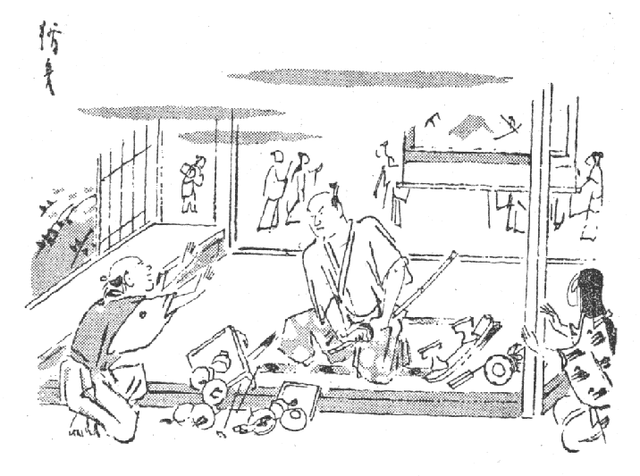
しかし一方、聚楽第
にいる秀次は、これらの未曾有
の大作業が捗
って行くに従ってどう云う感じを抱いたであろうか。派手好きな太閤のことであるから、萬事の結構に善を盡し美を盡すのは今に始まった訳ではないが、大明国
との和議が整いかけて、凱陣の士卒が纔
かに休養する暇もなく、又もや斯かる普請を起して諸国の人馬を労すると云うのも、つまるところはお拾
に対する愛情の結果であると思えば、彼には伏見の城と云うものが、つい鼻の先に一敵国が現じたようにも映ったであろう。そうしてそれに刺戟された彼は、我が国の歴史に例の少い暴君性を発揮して、次第に嗜虐的
になったのであろう。聞書
の主人公順慶は、内心秀次を庇
う気があるのでその暴状を事々しくは述べ立てゝいないが、それでも次のように語るのである。
「関白殿のお振舞
につきましては、愚僧がお城へ上りまする前からそのような噂がないこともござりませなんだ。文禄二年と申す年は正月に先帝がおかくれになりましたので、天下一統、生類
を殺すことを慎み、畿内近国は浦々の猟漁
をいたさず、洛中にては魚鳥を販
ぐ物売りの声も聞えないほどでござりましたが、関白殿は世の思わくをもお考えなさらず、とき〴〵北山や西山あたりへお出ましなされ、鷹狩や鹿狩をなされましたので、何者の仕業
か、一条の辻に札を立てゝ、
諒闇の世を憚らぬ狩なれば
これや殺生関白
と云ふ
と、落書を書いた者がござりまして、それから人が『殺生関白、殺生関白』と申すようになりました。けれども御乱行が激しくおなりなされましたのは、お拾さまの御誕生やら伏見城の御普請やらがあってからのことでござります。それも愚僧は、一々その場にいあわせた訳ではござりませぬから、何処
までほんとうか分りませぬけれども、当時人から聞きましたことを一つ二つ申しますなら、或るとき御飯を召し上っていらっしゃいますと、砂が交っておりましたので、料理人を呼び出だされ、こら、主人に砂を食わせるからは、そちにも食わせて遣わすぞと仰
っしゃって、その男の口の中へ、庭前の白砂を一杯押し入れさせ、一粒も残さず嚙み砕けとの御意でござりました。料理人も命が惜しゅうござりますから、仰せのまゝに砂を嚙み砕きましたところ、歯の根が破れて口中より血が流れ、あまりの苦しさにうつふしに伏しましたら、物をも云わず右の腕を打ち落され、そちはこれでも死にたくないか、助かりたいなら助けてやるぞと仰
っしゃいますので、どうぞお助け下さいましと申しますのを、又左の腕を打ち落されて、これではどうだ、と仰っしゃるのでござりました。その時料理人は眼をむき出して、日本一のうつけ者奴
、両方の腕がなくなって生きていても何になろうぞ、それにしても過去の戒行が拙
いばかりに、貴様のような者を主人に持ったのが無念でならぬ、貴様はつね〴〵鮟鱇
と云う魚のようにぽかんと口を開けているから、砂が這入
るのだ、もう此の上は生かそうと殺そうと勝手にせよと、散々悪口を申した揚句お手討ちに遇ったと申します」
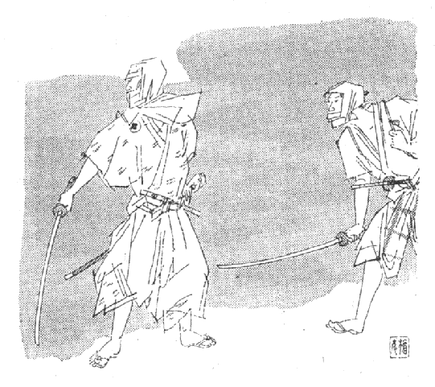
「又或る時、天守へお上りなされまして、四方を眺めていらっしゃいますと、懐姙の女が息苦しそうに歩きながら、野辺の若菜を籠へ一杯摘みためまして、その日の糧
を得るために都へ売りに参るところでござりました。するとその姿にお眼をとめられ、あれを見よ、あそこに孕
み女が通るが、あの腹の大きいことはどうだ、あんなにえらく膨れているのは双生児
が這入っているのかも知れぬ、腹を断ち割って見てやりたいなと仰っしゃって、あの女を連れて参れとの御意なので、御前におりました若殿原
が早速引き立てゝ参りました。でもその時は益庵法印が居合わされて機転を利かされ、そっとその女の傍へ寄って芹
や薺
を懐へ押し入れさせ、此の者は懐姙ではござりませぬ、腹がふくれておりますのは、これ、御覧なさりませ、さま〴〵な若菜を此のように懐
へ入れているのでござります、それに此の女は年老いた者でござりまして、これらの菜をば都へ売りに参るのだそうでござりますと、巧
い工合にお欺
しなされましたので、殿様も俄
かにお笑いなされ、それならよし〳〵と仰っしゃって、事なく済んだと申します。かような話はまだ沢山ござりまして、その女のように助かった者もござりますけれども、女では孕み女、男では肉附きのよい、くり〳〵と肥え太った男を斬るのがお好きで、そう云う人間を捜すために、夜な〳〵町へ辻斬りにお出かけなされましたとやら。したがなんぼう御気象の荒いお方でも、そのようなことが真実ございましたかどうか、愚僧はたゞの一遍も自分で見たことはござりませぬ、まあ話半分と思うて、聞いていたゞけでござります」
そうして順慶は、却って秀次の性情の優美な方面を説くのである。
「世間の人は殺生関白
などゝ申して、むごたらしいことがお好きなように申しますが、あれでなか〳〵風雅の道をお嗜
みなされ、和漢の古書をお集めなされたり、連句や詩歌の会をお催しなされたり、思いの外やさしいところがおありになりました。取り分け和歌はようお詠みなされましたが、或る年の春吉野山にてお歌の会をなされました時のおうたに、
年月を心にかけし御芳野の
花の木蔭にしばしやすらふ
かた分けてなびく柳も咲きいづる
花にいとはぬ春のあさかぜ
みるが内に槇
のしづえも沈みけり
芳野の滝の花のあらしに
それから又、
千早振
る神やみるらん芳野山
から紅
の花のたもとを
治まれる代の形こそみよしのゝ
花にしつやも情くむ声
などゝ遊ばしましたのを、今もおぼえているのでござります」
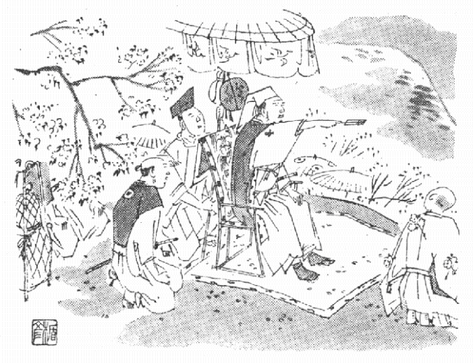
「左様でござります、その芳野山へ花見にいらっしゃいましたのは、太閤殿下が思し立たれたのでござりまして、関白殿を始め奉り、家康公、利家公、その他のお歴々にお供を仰せつけられ、文禄三年の二月二十五日に、大坂を御発足なされたのでござります。その時太閤殿下には、作り鬚
、作り眉を遊ばし、鉄漿
をおつけになりまして、美々しき衣裳をお召しなされ、供奉
の人々も皆々派手を競われて、若々しきいでたちをなされましたので、その行列を拝見しようと、大勢の群集が野にも山にも満ち〳〵たほどでござりました。そうして二十七日に六田
の橋へお着きなされ、市之坂をお上りなされますと、大和中納言秀俊卿が道の傍に御茶屋をしつらえて、お待ちになっておられました。殿下はそこで御休息遊ばし、おもてなしをお受けなされまして、それより千本の桜、花園、桜田、ぬたの山、かくれがの松などを御覧遊ばし、
芳野山梢の花のいろ〳〵に
おどろかれぬる雪の曙
また関屋の花の木の下にて、
芳野山誰とむるとはなけれども
今宵も花のかげにやどらん
関白殿のお歌には、
木々は花苔路は雪と御芳野の
わけあかぬ山の春の袖かな
以下の公卿衆、大名衆、紹巴
、昌叱などの方々も、めい〳〵短冊を染められまして、さてかねの鳥居、仁王門をお通りになり、蔵王堂へ御参詣なされ、南朝の皇居のあとをおとぶらいなされましてから、桜ヶ嶽、今熊野、たってん山、聖天山、弁才天山など、峰々の花をお眺め遊ばして、昔義経が暫く忍んでおりましたと云う吉水の城を御旅館にお充
てなされました。そこのお宿に殿下は二日御逗留
でござりましたが、警護の武士などきびしゅう番をするには及ばぬ、小姓ばかりを詰めさせて置けば仔細はないから、誰も〳〵思い〳〵の花見をせよと仰っしゃって、酒や肴を賜わったのでござりました。今申しましたお歌の会は、その折のお催しでござりまして、殿下の遊ばされましたのは、
いつしかと思ひ送りし御芳野の
花をけふしも見そめぬる哉
たしか斯様
であったと存じます。此の芳野山の花の宴は、太閤殿下が栄華の盛りを極められました御遊のことゝて、かの醍醐の花見と共に今も人々の語り草になっておりますくらい、当時は朝鮮の戦も止みまして、四海
波
静かに、供奉
の方々も太平の春を喜んだのでござりまして、関白殿とのおん仲もまだその頃はお睦じゅう見えましたのに、それより僅か一年を隔てゝあのようなことが起りましょうとは、淵瀬
を定めぬ世の習いとは申しながら、全く人の身の上は分らぬものでござります」

それなら秀次が、いつ頃から太閤に対して逆心を蔵するようになったか、どうしてそう云う疑いを招くに至ったかと云うのに、順慶の語るところは左の如くである。
「もとより愚僧は左様なことを探りますのが役目でござりましたから、始終気を配っておりましたけれども、たゞ何となき世の取り沙汰につれまして、お城の方々も眼に見えぬ影に怯
えられ、殿のお行末をお案じ申す御家来衆が寄り〳〵密議を凝らされるなど、怪しいと云えば怪しいけはいがあったと申すより外に、これと云う證拠はござりませなんだ。尤
も、当時お城には、太閤殿下より後見役として中村式部少輔どの、田中兵部大輔どのを附けて置かれましたのに、此の二た方が兎角かれこれと諫言なされましたのを、うるさく思し召しましてか、御前を遠ざけてしまわれましたので、そう云うことが自然殿下のお耳へ這入り、御気色を損ずる因
になったのでござりましょう。それから、木村常陸介と申すお人、このお方は隼人佑
殿の総領の子にお生れなされ、本来ならば重いお役にも任ぜられるお家柄でござりましたが、治部少輔殿に寵を奪われた恨みから、秀次公へ取り入って、謀叛をおすゝめなされたのだと申します。それも一向たしかなことは分りませぬが、或るとき殿が御所労の気味で籠っておられました砌
、密かに奥御殿へおいでなされて、御前の人々を退
けられ、おん枕辺へ近々と寄って、恐れながら、斯様
なことを申し上げるにつきましては、もし御承引なさりませなんだら、何卒某
を此の場に於いてお手討ちになされて下さりませと、そう申し上げて、さてひそ〳〵と囁
かれますのには、太閤殿下の御恩を蒙り給うことは海山にも譬
え難
う存じますけれども、先年若君が御誕生になりましてからは、我等のひがみかは存じませぬが、何とやらん御間柄が疎々
しゅうなられたように覚えます。それと申すも、実子のない間こそ養子はちやほやされますが、実子が出来たら邪魔物扱いを受けますことは、普通の人情でござりまして、身分の高下には拘りませぬ。某が存ずるところでは、あの若君がやがて五歳にもなられましたら、先ず関白を譲れと仰っしゃるでござりましょう。そうして置いて、西国か東国の辺鄙
な田舎へ御所領を仰せ出だされ、後々は流人
のようにしてしまわれるでござりましょう。その期
に及んで何事を思し立たれましても、追い付きは致しませぬぞ。今御威勢の強い時に、大名共にも内々情をおかけなされ、御心底をお打ち明けなされて、屹度
お頼みなされませ。弓取と申す者は、親を討ち、子を殺しましょうとも、国を治め、天下を保つのが習いとこそ承れ。此の儀を御承引下されましたら、お味方に参る者共は某が指図いたしましょう。太閤お取り立ての武士の中にも、過分の勲功を立てながら左程の御恩賞にも与
らず、忠なき輩
が時
を得顔
に威張り散らしておりますのを恨んでいる者共が、随分多いのでござりますと、申したのでござりました。
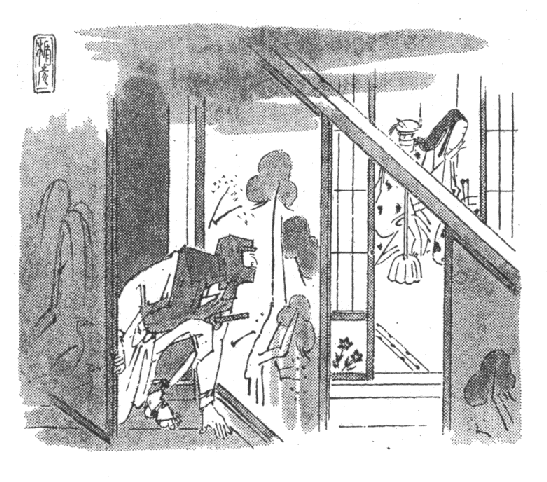
すると関白殿はおん枕を押し除
けられ、蓐
の上に端坐遊ばして仰
っしゃいますのに、そちが申すことも一往聞えているけれども、養子と云うても伯父
甥
の間で、血がつながっていることだし、幼い時より莫大の御恩を蒙っている某
として、何とて左様な企てをなすべきや。その上大坂や伏見のお城は、日本一の名城ではないか。たとい事を起したところで、味方に馳せ参ずる者は、日本国中の諸大名のうち、三分の一はよもあるまい。返す〴〵も左様なことを云うではないぞ。壁に耳ありと申すことがあるぞ。と、そうきっぱりと仰っしゃって、おたしなめになりましたが、常陸介はなおも膝を乗り出して、御諚
ではござりますけれども、戦と云うものは時の運でござりますから、人数の多い少いには拘りませぬ、しかしそれでも勝ち目がないと思し召すなら、某一人にお任せなされて下さりませ、憚
りながら、御城中へ忍び入りまして、殿下のお命を亡きものにして参りましょう、それなら何の雑作
もないことでござりますと、至極やす〳〵と申しますので、なるほど、そちは忍びの名人であったな、だがそれは時と場合に依る、もうその話はしてくれるなと仰っしゃって、やはりお許しがござりませなんだ。常陸介は又重ねて、そう云うことでござりますなら、兎に角某に三日のお暇を下さりませ、その間に大坂のお城へ忍び込み、何にてもあれ、御天守にあるお道具を一と品取って参りましてお目に懸けるでござりましょう、その證拠を御覧なされました上で、御決心を遊ばしてはと、そう申して御前を罷
り出でました。殿は、いや〳〵、覚束
ないぞ、もし仕損じて捕えられたら何とする、止せ〳〵と仰っしゃったそうにござりますが、常陸介はそのゝち所労と申し触らして出仕を止め、直ぐに大坂へ罷
り下ったのでござります。然るにその夜太閤殿下は伏見へ御上洛なさるところでござりまして、宿直
の者たちが厳
しく番をいたしており、方々の御門を固めていたのでござりましたが、難なく忍び入りまして、奥御殿の様子を窺いますと、女房達の話声がして、もう上様
は枚方
あたりまでお上りになった時分であろう、などゝ云うのが聞えて参りましたので、さては御運の強き大将軍にてましますことよ、今夜此の城においでゞあったらお命を申し受けようものをと、歯嚙みをしたのでござりました。でもそのまゝ帰りますのも残念と存じて、お天守へ参り、殿下御秘蔵の水差
の蓋
を取りまして急ぎ聚楽
へ罷
り上り、関白殿の御覧に供えましたところ、その水差と申しますのは、もとは堺
の数寄者
の物でござりましたが、宗益と云う者が求め出して関白殿へ献上いたしましたのを、後に殿より太閤殿下へ差上げた品でござりましたから、不思議なこともあるものよ、他の品ならば疑わしくも思うであろうが、これは自分が昔手馴れた水差の蓋に紛れもないと仰っしゃって、暫
くは何のお言葉もなく、溜息をついていらしったと申します。そのゝち大坂のお城では、水差の蓋が急に見えなくなりましたにつき、誰かゞ粗匇
をしたのであろうと、取り敢えず金細工の者に仰せつけられ、黄金の打物
を以て代りの蓋をお作りになりましたが、後年関白殿が滅亡のとき、聚楽のお城を缺所になされましたら、お道具の中から紛失の品が出て参りましたので、お取り調べがござりまして、常陸介の仕業であることが始めて知れた由にござります。されば満更
あとかたのない話ではござりますまいが、御家来衆は兎に角として、殿様が左様な企てに耳をお藉
しになりましたかどうか。中村田中の二人とは違うて、常陸殿とはお気合いの仲でいらっしゃいましたから、一時はお迷いなされたことがあるのでもござりましょうか」
右について聚楽物語は曰う、「常陸の守、かやうに様々計
ひ申しければ、秀次も自ら御心を移され、内々にお支度ありて、大名小名によらず、御意
に従ふべきと思召す者共には、お手前にてお茶を下され、或は御太刀、刀、御茶湯の道具によらず、その程々に従ひ、金銀を遣されける間、何事もあらば一命を奉らんと存ずる者共あまたなり」と。秀次は又、朝廷に白銀三千枚を上納し、五百枚を第一の皇子に、五百枚を准三宮藤原晴子に、五百枚を女御
藤原前子に、三百枚を式部卿智仁親王に、五百枚を准三宮聖護院道澄に献じた。そうして相変らず殺生の悪戯をつゞけ、しば〳〵鹿狩や夜興に出かけたが、そう云う場合にいつも兵具を携
えて、物々しい様子をしていたので、附き従う者共も具足や兜
などを密かに挟箱
に入れて持ち歩き、恰
も戦場に赴
く軍隊のような感があった。それらの行為は、たとい叛逆の意志がなかったとしても、少くとも太閤の疑惑を招くには十分であって、軽卒の咎
めは免れられない。
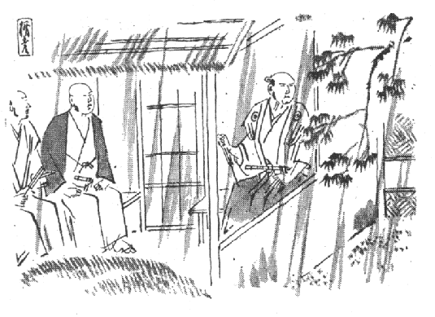
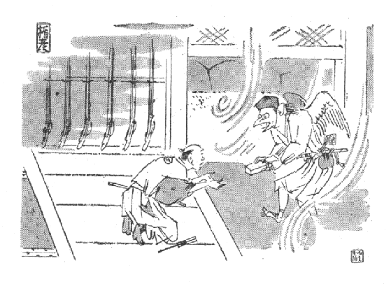
「それから、あの吉野山のお花見から一年の後、文禄四年二月の中ごろのことでござりました。或る日聚楽の御城から熊谷大膳どのを殿下へお使者に立てられまして、伏見の里の秋の月は古より歌に名高うござりますが、毎年のことでござりますから、今年の秋は趣向を変えて北山へお越しなされませ、廣沢の池の眺めも伏見とは違うて、又格別でござります。なおその折は若君のお慰みに、八瀬小原にて狩くらを催すことにいたしましょうと、そう云う御口上を述べられましたところ、殿下も斜めならずお喜び遊ばし、よいことを思いついてくれた、何事も関白の心任せに致すから、帰ってその由を伝えてくれと仰っしゃって、御太刀一腰、御呉服あまた下されましたので、大膳殿もたいそう面目を施しまして、戻って来られたことがござりました。それで、お城では、太閤殿下御成
のために御殿を造ることになりまして、鍛冶
や番匠を召し集め、秋の月見に間に合うように夜を日に継いで工事を急いでおりましたが、それが飛んでもない禍
の因になったのでござります。と申しますのは、五月二十五日のこと、夜
更けて治部少輔殿のお邸へ、何者とも知れず文箱
を持参いたして参り、聚楽より参った者でござりますが、これから浅野弾正殿のお邸へ伺わなければなりませぬ、急ぎますから帰りに御返事を戴きますと云い残して、帰った者がござりますので、番所の者がそれを殿へ差し上げますと、文箱の上に、石田治部殿まいると書いて、誰とも名を記してござりませなんだ。治部殿は不思議に思し召し、披
いて御覧になりましたら、わざと子供に書かせたような拙
い筆で、
近き頃太閤様聚楽へ御成とて、御用意様々御座候、中にも北山にて鹿狩の為
めとて、国々より弓鉄胞
の者を選びすぐり、数萬に及び召し上せられ候、是は全く狩くらの御為めならず、御謀叛
とこそ見えて候へ、対面にて申したく候へども、返忠
の者といはれん事口惜しく候、又申さぬ時は、重恩を蒙
り候主君へ弓を引くべし、此旨を存じ、我名を隠して斯
くの如し
と云う文面でござりました。それで大いにお驚きなされ、殿下へ言上なされますと、関白に何の遺恨があろうぞ、定めし讒者
の仕業であろうと仰っしゃって、お取り上げになりませなんだが、いや〳〵、そうとばかりは申せませぬ、思いあたる節もござりますから、先ず某
が密々に調べてみましょうと申されて、田中兵部大輔どのへお使者をお立てになりました。その頃兵部殿は、関白殿の御機嫌を損じまして、河内の国の堤普請の奉行を勤めておられましたが、治部殿より急の御用とお聞きなされ、夜通しにて馳せ付けられましたところ、着くとそのまゝ『此方へ』と仰
っしゃって、奥庭の亭へお通しなされ、あたりに人を一人も置かず、さし向いにおなりなされて、田兵
殿、今度ばかりは御辺
の命を三成が助けて進ぜるぞと、いきなりそう云う御挨拶でござりました。兵部殿は何の事やら合点が参りませなんだので、異なことを仰せられるではないか、御辺に助けて戴くような覚えはないがと申されますと、いや、今度の一大事に、本来ならばとても命は逃れぬところ、しかし日頃の誼
みを以て、御辺の首は某がつないで上げたのだと、重ねて申されましたので、兵部殿は顔色を変えられ、何と云われるぞ、不肖
ながら某のことを御前に於いて悪様
に申すような者は、日本中に一人もいようとは存ぜぬ、たとい讒言する者があっても、上様がお用いになる筈はない、御辺は近頃出世なされて、何事も思うがまゝになるからと云うて、命を助けたの首をつないでやったのとは、ちと廣言
が過ぎるではないか、もしほんとうに何ぞのお咎
めを蒙っているなら、御辺に助けて戴かずとも、某
御前に罷
り出て申し開きをいたそうし、それでもお許しがない場合には、立派にお手討ちになり申そう、謂われのない恩を着るのは嫌
でござると、刀の柄
に手をかけながらのお言葉であったと申します。すると治部殿は俄
かに小声におなりなされ、御辺は仔細
を御存じなき故左様に仰せられるけれども、実は関白殿の御謀叛が露顕いたし、上様は以ての外にお腹を立てゝいらせられる。中村は此の程病気であるから事情を知らぬこともあろうが、兵部がそれに気が付かぬとは心得られぬ、こう云うこともあろうと存じて後見を申し付けたのに、扨は彼奴
も相談に乗っているのではないか、それにつけても頼むまじきは人心じゃ、急ぎ兵部奴を誑
り寄せて、腹を切らせよとの仰せでござったが、そこを某が執り成して、よう〳〵お宥
め申したのでござる。のう、田兵殿、御辺は近頃御前の首尾が悪うなって、出仕もされぬ由なれども、関白殿が斯程の大事を思し立っていらしったら、大方素振
でも知れそうなものを、知らぬとあっては何として申し開きをなさるゝぞ。たとい企てには与
らずとも、気が付いていたに相違ないのに、今日まで注進を怠っていたのは不届きであると云うお咎めは、重々御尤もではないか。依って某は、いや、これ迄にも内々で知らして来たことはござりますが、よもや左様なことはと存じて、お耳へ入れずに置きました次第、されども斯くなりました上は、いよ〳〵様子を探るよう申し付けるでござりましょうと、そう申し上げてその場を治めて置き申した。憚りながら、御一命をお助けしたと云うのは決して某の過言ではない、今申すような訳でござるが、しかし御辺は、実以て何も御存じないのでござるかと、息を凝らし、膝を詰め寄せてのお話に、兵部殿は返す言葉もなく、暫く呆然としておられましたが、全く以て、存じもよらぬことを承る、何を申すも近頃は外様者
のようなお扱いを受け、左様なことの御相談に携わる暇はござりませねど、それを知らずに過したとあっては如何にも罪は免
れられぬ、お上のお憎しみはお道理でござる、此のお詑
びにはこれから精々気を附けて御注進に及びましょうと、お答えなされましたとやら。治部殿はそれをお聞きなされて、一旦兵部殿を河内へお帰しなされましたが、堤の普請は餘人を以ても勤まるであろう、聚楽の方は殿下の御成を前にして手落ちがあってはならぬから、用意萬端、兵部が指図をするようにと、上意を伝えられまして、改めて都へお呼び寄せになったのでござりました。そう云う訳で兵部殿は再びお城へ召し出だされ、それから後は毎日のように、今日はこう云うことがござりました、今日もこれ〳〵でござりましたと、下らぬことを仔細ありげに取り立てゝは、治部殿の許
へ知らせてやる。治部殿は又御前へ出て、兵部が斯う申して参りました、もはや隠れはござりませぬなどゝ、言上なされたのでござります」
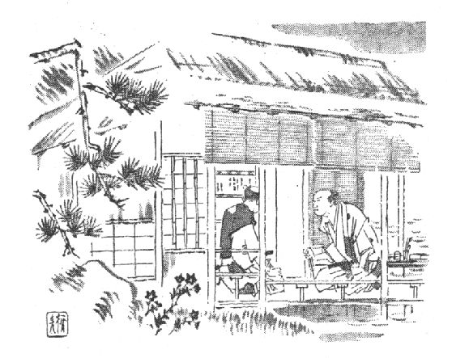
順慶は娘と乳母を前に置いて、
「まあ、もう少し、.........もう少し聞いて下さりませ」
と、気色
ばむ二人を制しながら、自分の舊主
三成のことをこんな工合に云うのである。
その六
「こう申しますと、治部少輔殿がさま〴〵の人を道具に使うてまことしやかな噂
を立てさせ、事を大きくなされたようにも、取れるかも知れませぬ。さ、それをお身たちは、愚僧が好い加減な譃
を構えて、三成公を讒者
にするのだと、仰っしゃるでもござりましょうが、かりそめにもお姫様
の御父君、愚僧に取りましても大恩のある舊
の御主人でござりますものを、何しに證拠のないことを申しましょうぞ。只今の話は、その頃兵部殿の口から確かに聞いたのでござります。したが、治部少輔殿としましては、御自分が悪者におなりなされても、殿下や若君のおためを謀
るのが忠義であるとお考えなされたのでござりましょうか。そうして僅かな瑕瑾
でもあれば、それを種にして関白殿を陥
れようと、もう朝鮮にいらっしゃる時から、手がゝりを求めていらしったのではござりますまいか。餘人は知りませぬけれども、愚僧は後になりましてから、いろ〳〵のことで思い当るふしがあるのでござります」
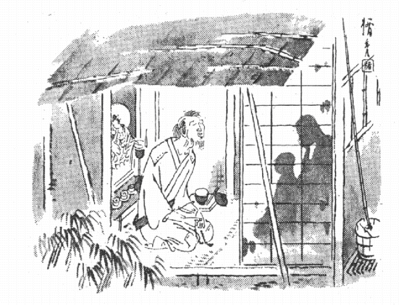
娘と乳母とは、こう語って行く順慶の口調が再び感傷的になって、しば〳〵太い溜息を洩らすのを聞くのである。
「それにしてもお身たちは、つい此の間、江州伊香郡古橋村の在所に於いて治部少輔殿を召し捕られ、徳川殿の御感
にあずかった御仁
こそ、別人ならぬその田中兵部大輔殿でござることを、よもお忘れはなさりますまい。お身たちに取っては憎い〳〵兵部殿、恩を仇で返した奴とお蔑
みなされましょうが、しかし泉下におわします御父君は何と思し召してござろうやら。昔は自分が道具にお使いなされた男、それが今度は敵方の手先を勤めて、自分を搦
め取ったと云うのは、因果が報いて来たのではないか、そうしてみれば自分で蒔
いた種を自分で刈ったゞけのこと、今更誰を恨もうと、悟りすましていらっしゃるかも知れませぬ」
さて順慶は、此のあたりから次第に自分自身の問題、己れの心の変遷を話し始めるのである。

「ところで、その時分、治部殿よりは愚僧の宿へも毎々お使者がござりまして、その後一向便りがないのはどうしたと云うのだ、近頃緩怠ではないかと、数度に亙
ってお叱言
を戴きましたが、それでも愚僧は、さしたる證拠もござりませぬのに、何として告げ口を致しましょうや。なるほど、田中兵部殿のように無いことを有るが如くに述べ、否でも応でもお城の人々を謀叛人に拵
え上げてしまいましたら、却って治部殿のお気に召したでござりましょうが、左様なことは愚僧の心が許しませなんだ。されば最初の一年ほどは、御謀叛の形跡は少しも見えませぬ、臣下の中に一人や二人不心得者がおるとしましても、関白殿にそのようなお考は露ほどもござりませぬと、いつもそう申し上げていたのでござります。すると或る時、たしか文禄三年の秋ごろでござりましたろうか、夜中ひそかに参れと云うお使いがござりましたにつき、人目を忍んで治部殿のお邸へ参上いたし、朝鮮以来絶えて久しき御挨拶を申し述べましたところ、君は聊
か御不満のお顔つきで、いかに、左衛門尉、そちを見込んで間者の役目を云いつけたのに、あれからもはや二年近くも聚楽の様子を窺いながら、いつも〳〵判で捺
したように、怪しい素振
はないと云う注進ばかりを寄越すのは、しかとそれに違いはないかと仰っしゃいますので、いかにも、某、及ばずながら気を配ってはおりますけれども、今日までのところでは疑わしいことはござりませぬ、世間の人は何のかのと善からぬ沙汰をいたしますが、関白殿はそのようなお人柄とは覚えませぬと、申したことがござります。その時君は一層御不快なお顔をなされて、しかし左衛門、夜な〳〵町へ辻斬りに出られたり、桀紂
にも等しき御所行があると云うことは、外に注進する者があって、某たしかに聞いているのに、そちはそんなことさえも知らせて来ないぞと云うお言葉。左様でござります、それは聞かぬでもござりませぬが、たゞの一度も自分の眼を以て突き止めたことはござりませぬ故、噂のまゝを申し上げるのも如何と存じ、控えていたのでござります、と申し上げましたら、黙れ、左衛門、たとい一片の噂なりとも、左様な御乱行を聞き込みながら、なぜ一往は知らせて来ぬぞ、又不確かと思うなら、なぜ何処
までも詮索せぬぞ、己れはそのような不覚者ではなかったのに、いつしか心までも座頭になりおったか、それともそちは三成が恩義を忘れ、関白殿へ返り忠を致す所存かと、お声をあらゝげて仰っしゃいますので、愚僧はハッと平伏いたし、これは存じも寄らぬこと、緩怠のお咎
めにつきましては申訳もござりませぬが、返り忠とは以ての外のお疑い、お情ない仰せでござります、憚りながら左衛門尉、姿は盲人を装うておりましょうとも、武士の性根を失いましょうや、たゞしかしながら、いかに間諜とは申せ、うかとしたことを申し上げて、太閤殿下御親子の間を争わせ、天下の大乱を引き起すようなことを致しましては、それこそ忠義の穿
き違えであると存じましたばかりに、努めて口数を慎んでいたのでござりますが、以来は必ず、些細なことにても胡乱
と思う節があれば御注進申し上げるでございましょうと、額をすりつけてお詑びをいたし、よう〳〵お許しを戴いたのでござりました」
彼はそこまで話して来ると、何やら躊躇
の色を浮かべ、云いにくそうに幾度となく口籠りながら切り出すのであった。
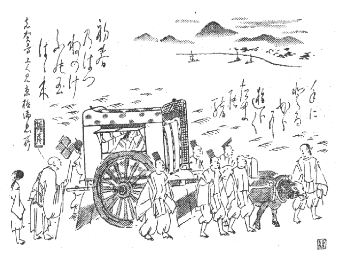
「したが、お姫様
、ばあや様、よう聞いて下さりませ、此の順慶と云う法師、いや、下妻左衛門尉と申した治部少輔殿の家来はな、折角君のお見出しにあずかりましたけれども、もと〳〵間諜と云うような役目には向かない男だったのでござりましょう。愚僧は何としましても、人を無実の罪に陥れ、多くの方々に泣きを見せるようなことは出来ない性分でござりました。自分は幸い此のお城へお出入りを許され、関白殿を始めとして御台
様やお部屋様方にもたいそう眼をかけて戴いている、さすれば此方も御恩の程を有難く思い、真心を以てお仕え申すのは当りまえ、ましてそう云う風にして皆々様のお気に召したら、役目の上にも都合がよいのでござりますから、三成公へ対しても結局忠義になるのであると、われと我が胸に云い聞かせていたのでござりました。けれどもそれで、ほんとうに何の疚
しいところもなく安心していたかと申しますと、もう早くから心のおくに何か自分にも分らない疑いの影がきざしまして、とき〴〵それに苦しめられたことがないでもござりませなんだ。その時分、愚僧はしば〳〵自分が眼あきでありながら眼くらの真似をしていることに、云い知れぬ恐ろしさを覚えたものでござります。それはお上を欺
いているのが相済まないと云う心持、それもあったのでござりますが、しかしそんなことよりも、此の眼が見えるのがよくないのだ、瞳に映る世界と云うものが何かしら自分に害をするのだ、と云う懸念
が、御前に控えておりますときに、取り分け御台様のお側に近うおりますときに、何処からともなく湧いて参りまして、そのために斯う、体がわな〳〵ふるえ出すことがござりました。斯様に申しましたゞけでは、お分りになりますまいけれども、愚僧は暫く朝鮮国におりまして異郷の空の雨風に曝
され、明け暮れ征馬のいなゝきと鉄炮の音ばかりを聞き馴れておりましたのが、久方ぶりに都へ上って参りまして、ついぞ生れてから見たこともない奥御殿の、きらびやかなお座敷へ出仕したのでござります。戦場に於いてさま〴〵な艱難
を忍びますことは武士
の常でござりますから、左程骨身にはこたえませぬが、荒々しいことや凄じいことより知らぬ者が蘭麝
のかおりなまめかしい御前へ出ましては、勝手が違うて窮屈な心地がいたし、立居
が固くなりますのに、まして見える眼を見えないように装うている辛さを、お察しなされて下さりませ。これがほんとうのめくらであるなら、なか〳〵気が楽でござりましょうに、なまじいに眼が見えますと、見まいとしてもあたりのものを見ない訳には参りませぬ。そのうえ見るとは申しましても、まわりの人に悟られぬように薄眼を開けて、睫毛
と睫毛の間から、ほんの僅かな幅のものを、戸の節穴から覗
くくらいにぼんやり見るだけでござりますから、物の色あいや形などが、一度にひろ〴〵と見るのとは様子が違うておりまして、そのために尚、金銀をちりばめました壁や、襖
や、調度のたぐいや、皆様方のお召しになっていらっしゃる唐織や綾錦などが、ひとしお美しく、此の世のものとも覚えぬように瞳に映ったのでござります。愚僧は何処へ眼を向けましても、見えるものゝ結構なのに胆を消し、玉の階
、黄金の梁
とはこう云う御殿のことであろうかと、夢に夢見る思いがいたして、ゆくりなくも斯様な所へ御奉公に罷り出た身のなりゆきの不思議さを驚くばかりでござりましたが、まあそれはよいとしましても、どうかした時に御台様のお姿が眼瞼
の中へ這入って参りますと、何やら息が詰まるようになりまして、そのちら〳〵する眩
いお顔を長くは視つめていることが出来ませなんだ。なぜかと申して、考えても御覧なさりませ、眼が見えねばこそ賤しい男が斯くも貴いお方のお側へ侍りはすれ、さもなかったら許される筈のものではないのだと気がつきましたら、自然と頭が下る道理でござります。それと申すのも、矢張それだけの品位がおありなされたからでござりましょうが、何より当惑いたしましたのは、だん〳〵お相手をしておりますうちに、此のお方が行くすえ長く御無事にお過し遊ばすようにと、一途にそう祈る心のみが強くなって来ることでござりました」
順慶はこゝで、
「あゝ、もし」
と云って、何をうろたえたか二人の聞き手を抑えるように手を挙げながら、
「もし、.........ついふつゝかな言葉づかいをいたしましたが、仮にも愚僧としたことが、武士たる者の嗜
みを忘れてみめよきお方の御器量に迷い、本心を失うた、などゝ申すのではござりませぬから、思いちがいをして下さりますな。あのお方はやんごとないお生れ、たといどのようにお美しゅういらっしゃいましたとて、愚僧に何のかゝわりがござりましょうぞ。なれども宿世
の因縁と申しましょうか、始めてお目通りを許されました日から、拙
い藝が不思議に御意
に叶
いまして、たび〳〵召されますうちに、不仕合わせなお身の上のことがだん〳〵分って参りますにつれて、不便
と申し上げましては勿体
のうござりますけれども、あゝ、いかなる金殿玉楼の奥にも人の憂いはあるものよと、心ひそかにおいとおしゅう存じていたのでござりました」
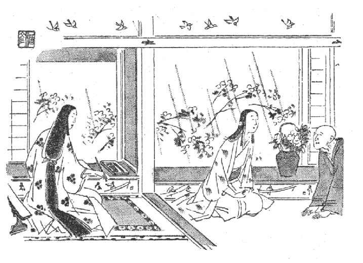
扨、今、順慶の言葉の中にある「不仕合わせなお身の上のこと」とは何を意味するのであろうか。蓋
し此の夫人、秀次の正室であった一の台の局の不幸が、やがて順慶の不幸の因となったことを思えば、これこそ此の物語中の主要な部分であるべきだけれども、而も「聞書」はその肝腎な事実について餘り多くを語っていない。と云うのは、誰よりもその間の消息に通じている筈の順慶自身が、何故かそれに触れることを避けるようにしているのである。彼は頻
りに一の台の局の不遇と逆境とを口にする。しかしながらそれは大概抽象的な説明に止まっていて、具体的な事柄になると、努めて曖昧
な云い方をしているように見える。
私はこゝで読者諸君の注意を喚起したいのであるが、此の一の台の局には「おみや御前」と云う連れ子があって、既に（その四）に於いて述べた如く、此の子は後に母と諸共河原の露と消えたのである。ところで、順慶はそのことをはっきり語ろうとしないけれども、彼がとき〴〵洩らしている御台様の不仕合わせなるものは、彼女とその連れ子、即ち母北の方とおみや御前との間に存する或る不自然な事情を指しているのであろう。右について聚楽物語巻之下「若君並
三十餘人の女房達洛中ヲ
渡さる、附
最後の事」の条の一節に云う、
十七番はおみや御前云々、是は一の台殿の御娘なりしを聞召し及び、わりなく仰せられて、召迎へ給ひしとなり、されば此由太閤相国聞食
し、あるまじき事の振舞かな（中略）とて、愈〻御憤り深く思召しければ、様々に頼りて、御様
変へ、命計
りをと申させ給へども、御許なきとぞ聞えし
と。
又石田軍記「秀次公之君達
被レ
誅事附
卅餘人嬪妾の事」に云う、
十七番は於宮
の前なり云々、太閤深く嫉
み思はるゝとかや。最後の体、おとなしやかに念佛して、
秋といへばまだ色ならぬ裏葉まで
誘ひ行くらん死出のやまみち
又太閤記に載っている辞世の和歌には、
うきはたゞ親子の別れと聞きしかど
同じ道にし行くぞうれしき
とある。
思うに当時悪逆塚のことを世人が畜生塚と呼んだのは、こう云う事実が民間に知れ渡っていたからであろうか。殺生関白が残虐の血を以て彩
られた罪悪史のうちでも、分けて此の一事が太閤の嫉妬と憤激を買ったと云うのも道理であって、謀叛よりは寧ろ此の種の行為が、その滅亡を早める結果となったのかも知れない。それにしても彼の享楽の犠牲となった気の毒な親子は、互に如何なる感情を以て相対し、どう云う風なその日〳〵を送りつゝあったか。尤も順慶は格別の事があったようには語っていないのであって、御台様はと云うと、「いつも奥御殿にたれこめてのみおくらしなされましたので、とかく御気分の沈みがちな時が多かったようでござりました」と云い、その淋しさを幾分でも忘れて、紛れていたのは、「お宮御前と申すお方がいらしったからでござります」と云う。のみならず、「親一人子一人のたよりない方々でござりましたから、たがいに片時もお離れなさらず、何かにつけて慰め合うていらっしゃいました」とさえ云っている。蓋し順慶は此の二人を何処までも美しい親子として後世に伝えたかったに違いなく、そこに些少
の庇護
や作為が加えられたろうけれども、しかし親子の間柄が案外うるわしかったであろうことは、ほゞ想像出来なくはない。なぜかと云うに、恐らく当時のお宮御前はたゞ身を人形のようにしていたに過ぎなかったであろうから、母親としてそう云う我が児にひとしお不便
を覚えこそすれ、何しに憎しみを感じようぞ。否、娘の上に降りかゝった傷ましい運命は、却って一層二人を結び着けたであろうと思えるのである。
少女と雖も一つの局
をあてがわれて、母親とは別の伏戸に寝起きしていたと考えられるが、実際は殆
ど母の部屋で暮している日が多かったと見え、いつも順慶が御機嫌伺いに行くときは、親子が一つ御簾
のうちに仲好く寄り添うていたのであった。そうして朝夕の食事はもとより、折に触れてのさま〴〵な遊戯や催しなども、必ず楽しみを共にしていた。察するところ、三十人もの嬖妾
が互にアラ捜
しをし合っている奥御殿のことであるから、親子は人に後指
をさゝれないように、殊更睦じい様子を見せもしたのであろう。又母親としては、己れの孤独を悲しむよりも我が児の不運を憫
み、少しでも彼女に自責の念を起させたり、肩身の狭い思いをさせたりしないように、寧ろ娘を慰める側へ廻ったのであろう。親子の間がしっくり行っていることについては、いろ〳〵の場合にいじらしい情景を見せられている順慶であるが、分けても娘が関白の御前へ祗候
するために常よりは濃い化粧をして身じまいをとゝのえる時、母親が示す細やかな注意と、行き届いた親切とには、ほと〳〵感激したのであった。順慶に取って御台と云う人が神のような存在に見えたのは、実にそう云う時であって、どうかすると、彼女は一つ鏡の中に我が児と顔を並べながら、手ずから髪を梳
ってやり、襟や袖口を揃えてやり、立たせてみたり、坐らせてみたりして、日増しに背丈の伸びて行く可憐な娘のみめかたちを、さも嬉しそうに眺めていることがあったと云う。が、人前でこそ慎んでいるものゝ、絶対に人の眼に触れぬ場所では親子がひしと抱き合って泣きくらす日もあったであろう。されば順慶は、自分の如き数ならぬ者にそう云う秘密が洩らされたことはなかったけれども、お側に仕えていると、何となく親子の間に感傷的なものゝあるのが窺われ、表面は朗かなようであっても、一種云いようのない陰鬱
な気分を覚えた、そうして御台の無心らしい微笑
みや長閑
かな笑いごえの底にも、じっと感情を押し殺している跡が見え、心の苦しみが推察されたと云っている。しかし、それはそれとして、順慶が此の不仕合わせな親子に対して感じていたものは、果して彼の釈明する如く、純粋な同情に過ぎなかったであろうか。
その七
順慶の心理を知るためには、彼が自ら眼球を破って真の盲人となるに至ったいきさつを明かにせねばならない。彼は云う、自分は舊主三成の意を迎えて罪なき関白を無理にも「謀叛人」にしてしまうべきか、舊主の心に逆らっても関白を庇
い、引いては御台親子の幸福を計るべきかと迷い抜いた未、前者を選ぶことは何としても自分の良心が承知せず、さればとて舊主を裏切っては武士の一分
がすたれることを慮
って、孰方
へも義理が立つように失明の手段を取ったのであると。畢竟
、眼が見えるために夫人への同情がいよ〳〵強くなり、舊主へ義理を缺いてもと云う心が湧くのであるから、眼を潰すのが己れを守る最良の手段である、眼さえ見えねば、―――あの二人の婦人の姿さえ瞳に映らなくなれば、度を過ぎた同情も自らうすらぐであろうし、そうすることが、舊主に対する謝罪の意味にもなるのであると、彼はそう云う判断の下に決然たる行動を取ったのであった。

その両眼を抉
った時期は、はっきり語っていないけれども、多分三成の邸へ呼ばれて怠慢の咎
めを蒙った時、即ち文禄三年の秋を去ること餘り遠くない同じ年の冬か、四年の春頃であったろう。拙著「春琴抄」の佐助は盲人になるために針を瞳孔に突き刺してよく目的を達したが、順慶は戦国の武士であるからもっと野蛮な荒療治
を行った。即ち豫め病と称して宿に引き退
り、小柄
を以て眼球の組織を破壊した後、その傷痕の癒えるのを待って始めて出仕したと云う。が、彼を前から盲人であると信じ切っていた城中の人々は、誰もそのことに気が付かなかった。にせのめくらが俄かに本当のめくらになり、急に勘が悪くなったら、人の疑いを招きそうなものだけれども、幸いなことに城中に於いては、起
つにも坐るにも常に手引きが教導をする慣例になっていたゝめに、大した失策を演ずることもなしに済んだ。斯くて順慶は、見たところでは従来と何の変化もなく、一箇の藪原勾当
として自らも振舞い、人からも遇されていた訳であり、その限りに於いて彼の計畫は豫期の成果を収めたのであったが、一方彼は必然に起って来るであろう自己の心中の推移について、大きな誤算をしたのであった。と云うのは、視覚さえ失ったら精神的の煩悶
が減って、ほっと重荷をおろした感じがするであろうと思っていたのが、反対の結果になった。彼が失明した目的の一つは、「夫人を見ないため」であったが、少くとも此の点に於いてアテが外
れた。見まいと心がけたものが、前よりもよく見える。その上、一層悪いことには、それを肉眼で見ていた間は、「見る」と云うことに良心の制裁が伴っていたのに、心の眼を以て見るようになってからは、何等の拘束がないのである。肉眼で見るのでない以上、舊主へ不忠にもならなければ、夫人へ失礼にもならない。誰に対しても気がねがない。いつでも、自由に、その映像を飽きるほど視つめていられる。盲人の真似をしつゝ、薄眼でおず〳〵と盗み視ていた時よりも、遥かに大きく、生き〳〵と見えるのであった。斯かる間に関白秀次の乱行は、加速度的に狂暴性を増して行った。太閤記巻十七に云う、
（文禄四年）六月八日、秀次公比叡山へ女房共を被二
召連一
山上し給ふて、一晝夜の遊宴つねよりも悪行いやましにけり。晝はひねもす狩くらし、夜はよもすがらよこを引、鹿、猿、たぬき、きつね、鳥類、物数の程莫大なり、一山衆評して申けるは、当山は桓武天皇御草創なり、殺生禁断女人結界の山なれば、被二
思召分
一
被下候へかしと、木村常陸介を以御理
申候へば、我山にて、我慰
候に、誰か禁じ候はんや、餘人とは替るべきよとの御返事也。即於二
南光坊一
調美之体、いとにが〳〵しくぞみえにける。貧僧心ぼそげにたくはへをきし味噌の中へ、魚鳥の腸
を入
けがし給ふ。其外放埒
の有様、ものにこえてをこがまし。折ふし雨篠をつき、おびたゞしくをやみもなければ、其日も御滞留ありき。御台所まかなひし侍る横田と云
し者、院主へ米五石御かし候へと申ければ、此山はむかしよりさやうのたくはへは多くし侍らず、坂本よりつゞけ候へば、無レ
之よし被レ
申
、不レ
応二
其求
一
、然間
糧
つきて其夜供の人々うへにつかれ、横田を各
悪口しければ、己が過を補はんためにや有けむ、院主不レ
届よし、さん〴〵にのゝしりければ、秀次ほの聞給ふて、此山の自滅の時来たるよなど、其悪
みふかゝりしなり
と。又曰
く、
同十五日北野へ成
せ給ふに、盲者一人杖してとをり侍るを、秀次公御覧なされ、酒をのませ候へとて、手をひかせ給ふか、即右の腕をうち落し給へり、盲者中々肝
をけし、をちこち人はなきか、いたづらものめが人殺しを致し候に、おりあへや人々、助よやものゝふと、高声にのゝしりぬ、熊谷大膳亮
其あり様にても助りたく思ふかと問し時、盲者察し、年頃
此辺にて殺生関白が辻切を物し侍るよし聞及びし、必定是なるべしと思ひつゝ、かく盲目と成さへに、如何
なる悪業
にせめられて、此身と成ぬるよとかなしく存候に、如何してながらふべき、急ぎ我首を取て、殺生関白の名を後代までさらし給ふべし、敵の首をとらん事は思ひもよらざる事也、此職に在ては、天下の邪法を正し給はんこそ、国たましゐの役なるべきに、自
邪法を行ひ給ふ事、桀紂
が再誕うたがひなし、其因果
幾程もなかるべきぞと、悪口せしが、づた〳〵に成てみえにけり
と。太閤記の作者は此の項の後に附記して曰く、
不昧因果と云まじや、又物の自然と云てんや、符節を合する事こそあんなれ、其故いかにと云に、秀次公六月八日比叡山へ登り、狼藉
を御心のまゝにし給ひしが、七月八日高野山へ上り給ふて、うきめを見給ひけり、同十五日北野にて盲者を伐
し給ひしが、其刀にて介錯
せられし也、寔
に昔は因果の程をつゝしめよ、或
其因果孫彦
に報
か、或子に報か、或其身にむくふかなど、云しぞかし、しかは云ど、今は皿のはたを廻り侍るよと、世俗の諺
なりしが、げに左
も覚
にけり
と。秀次高野山で生害の砌
、介錯を勤めたのは篠部淡路守、刀は浪游
と云う兼光の業物であったが、此の記事に依ると、その前の月の十五日北野で盲人を惨殺した時に用いたのがその浪游であったと見える。当時殺戮
を好む秀次のために、罪なき者を害し給うのは不便
であるからと、毎日牢屋から一人ずつ罪人を引き出して献じたところ、大坂、伏見、京、堺の牢の者共を悉く斬り盡し、遂にはどんな微罪と雖も皆斬られるに至ったと云う。
順慶が身の上は暫く措
いて、先ず秀次の末路のことを語るなら、聚楽に於いて不穏の計畫があるという風説が頻々と伏見に達するので、太閤も捨てゝ置くことが出来ず、宮部善祥坊法印、前田徳善院僧正、増田右衛門尉長盛、石田治部少輔三成、富田左近将藍
の五人を使者として秀次の許
へ遣わし、野心之旨有レ
之ように粗
被二
間召一
候、勿論虚説にてあるべきとは思
し候え共、たしかなるように方々より告知する条、疎意なきにおいては、七枚継ぎの誓紙を以て可レ
被レ
盡二
心底一
之旨
を申し入れた。すると秀次の返辞には、扨も存知も寄らざる事を承り候もの哉
、如何
して斯様なる企を可二
存立一
候哉、かく当城に在事も御芳恩之外に他なし。七枚つぎの誓紙捧可レ
申旨、是又忝
御事共に候、急沙汰し奉らんと、侍従卜部兼治を召して神下ろしをし、身の毛もよだつ計
に神々を請じ奉り、聊
以不レ
存二
野心
一
之旨を誓紙に書いた。五人の使者はそれを受け取って伏見へ帰り、御前に於いて披露したので、左もこそ有べき事なれと、太閤も機嫌を直され、一往は疑いが晴れたのであった。
しかしながら、太閤の秀次に対する不信と不満とは由来するところ既に久しく、根深いものになっていたので、上に梵天
帝釈天
、下は四大天王も照覧あるべしと、物々しい誓いを立てゝみても、そのような一片の紙きれを以て収まる筈はないのであった。その頃木村常陸介は淀で普請の奉行をしていたが、七月四日の夜、五人の使者の跡を追うて女房輿
で聚楽へ参り、御台所からその輿のまゝ奥の間へ乗り入れて、密かに秀次に謁し、何事か相談してその夜のうちに再び淀へ帰ったと云う。然るに石田三成は、常陸介の家中にも間者を三人まで入れて置いたので、直ちにそのことが上聞に達した。又五日には、毛利右馬頭輝元から、秀次公、去春白井備後守を差下
、如此之案紙
を以
、誓紙を沙汰し、入魂
いたすべき旨仰せけるに因って、書き上げたる旨を、石田治部少輔を経て言上
に及び、併
せてその案文なるものを證拠として差し出した。或は順慶の説くが如く三成の細工や手加減が施されていたのかも知れないが、こんな工合に種々な方面から注進があり、怪しい書類までも提出されると云う有様で、追い〳〵都鄙
が騒がしくなって来るので、父子の間にとかくの浮説が出来ると云うのも直談
がないからである、急ぎ秀次是へ参られ候え、結
れぬる氷を春風の解くように、互のおもわくを晴らして和睦あるべしと、再び宮部善祥坊、徳善院玄以僧正、中村式部少輔一氏、堀尾帯刀先生
吉晴、山内対馬守の五人を迎えの使者として、聚楽へ遣わすことになった。その折太閤は何を考えることがあったか、出て行こうとする玄以僧正を呼び止めて、
「ちょっと堀尾に用があるから、立ち帰るように申し候え」
と云った。堀尾が戻って来て跪
くと、心配そうな顔をして、
「あの徒者奴
、様子を察して出て来おらぬかも知れないが、―――」
と、ひとりごとのように云ってから、
「左様な場合にはどうしたものかの」
と、小声で呟
いて、じっと堀尾の眼を見据えたが、
「御安心なされませ、よいように計らいます」
と、堀尾が即座に答えるのを聞くと、
「そちは今度も命を呉れるか、此れで三度目じゃ、忝
いぞ」
と、そう云って太閤は涙ぐんだ。
堀尾は暇乞いをして伏見の城を出かけたが、途中に用事があると云って他の四人の使者に別れ、馬をはやめて三条の饅頭屋道徹と云う者の宿所に寄った。そうしてひそかに云うのには、此のたび爾々
の事が出来て、今某はそのお使に参るのである、もし幸いに秀次公伏見へお越し下さらばよいが、下さらぬ時は刺し違えて相果てるぞ、ついては某
、つね〴〵そちの厄介になったが、此の期
に臨
み礼をする暇もない、依って此の状を忰
信濃守の方へ届け候え、必ず金銀が調うであろう、此の事人には露もらし候なと、堅く約束して聚楽へ急いだ。
使者を迎えた秀次の方では、太閤の命に従うべきか否かについて進退に迷い、重臣白井備後守、木村常陸介、熊谷大膳亮の三人を一と間へ呼び入れて凝議したが、意見がまち〳〵で容易に決しかねていた。備後が云うには、今此の城をお開きなさるのは、中々勿体
のうござります、某按ずるに、我等三人のうち一人を伏見へ遣わされ、一往理
をお盡しなされては如何、もしその上にも御承引なく、討手が向って来るようであったら、我々真っ先に討って出て花々しき合戦をなし、叶
わぬ時節到来せば、その時お腹を召され給うとも何の仔細か候べきと云う。熊谷大膳は、備後守申さるゝ処も一理はあると存じますが、退いて愚案を廻
らすに、此の城に於いて一戦を励まし、御腹を召されんずる事、王城の地を穢
す恐れが第一、次に太閤殿下より譲られ給うた城にお籠りなされては、天道の悪
む所となるのが第二、次に昨日
までも六十餘州に関白と仰がれ給うた御身が、今更おろ〳〵と籠城に及び給わん事、日本中の諸侍が言う甲斐
なく思うのが第三、彼れ此れ世間の誹
が多いと存じますから、先ず父子の礼を執って一旦帝都を退き給い、讒者の実否を糺
されるのが順序ではござりますまいか、それには今宵志賀の山越えに東坂本へ移らせ給え、しかしそれでもお疑いが晴れず、討手を向けられた場合には、唐崎表
へ討って出で合戦に及ばんこと、願う所の幸いでござります、人数も凡そ三萬餘りはござりましょうが、萬一御運が盡きましたら、その時こそお心静かに御生害なされませと云う。木村常陸介が申す様は、この期
に臨み、いかに退いて身の潔白を證し給うとも、太閤殿下に限っては、御宥免
あるべからず、とてもかくても逃れぬ場合故、五人の使者を討ち果たし、今宵伏見へ取り懸けて火を付け、城を枕として戦い申さんは、弓矢取っての面目、君も戦場に御名をお残しなされましょう、然らずんば京中を焼き拂い、此の城に於いて一と支え支えられては如何、先ず京中の兵糧を取籠め、玉薬
を用意して、城を固く堅められたら、曖
になるのは知れたこと、その時は十分の利を得られましょうと云う。秀次も今は必死、絶体絶命の際であるから、途方にくれて言句もなく、溜息をついていると、常陸介は威丈高
になって、君が斯くまで言う甲斐のないお方であろうとは存じませなんだ、只今伏見へお越しなされたら、二度と都へはお帰りになれませぬ、高野へお登りなさるゝか、雑兵
の手に懸り給うか、遠国へ流されて俊寛の憂き目を見給うか、又は介錯人もなき御生害を遂げらるゝか、そうなってから後悔あるとも追い着きは致しませぬぞと、声を励まして諫
めるのであった。斯かる処に吉田修理亮
は摂州芥川に堤の普請を承っていたが、洛中の風聞を耳にして汗馬も息するばかりに馳せ着け、御謀叛の儀、もし真実に思し立っておられますなら、伏見へはお越しなされますな、又聊
かも左様な思召がござりませぬなら、なお此の城に御座なされて、一往も二往も理
をお盡しなされ、それでも御宥免がなければ、某
に一萬の御勢
をお附け下さりませ、憚
りながら先を懸け奉り、一合戦して忠勤を抽
んでましょうと、頼もしげに云った。
然るに粟野杢助が最後に進み出て云うのに、方々の申さるゝ処も御尤
もではござるけれども、伏見の大殿は御心早き大将軍にておわします、もし君の御謀叛を必定
と思し召して攻め滅ぼそうとし給うのなら、斯様に延び〳〵とすることなく、即時に押寄せられるでござろう、因って思うに、筋なき事を取り持って石田がさま〴〵に讒言
いたすとも、殿下はあながち彼等の言をお信じになっていないのである、旁〻
此の場合は、仰せのまゝに伏見へ参られ、御対面を願われたなら、御心も解けさせられ、御喜びなさるであろうと存ずる、さあらずして軍兵を催し、かの城へ寄せられ給うとも、先ず以て利を得ることはありそうにもござらぬ、なぜかと申すに、彼方は譜代重恩の侍、十騎が百騎にも向い申すが、此方は人数こそ大勢なれ、いずれも諸国の借り武者にて、伏見に親や子を置いてある者共でござれば、肉親の愛に引かされて何の用にも立ちますまい。さればと申して、此の城に籠り給うとも、長くは支えきれませぬ、遠巻きにして兵粮攻
めにでもされたなら、味方の兵共は親類縁者を頼って降参し、止まる者はほんの僅かに過ぎないでござろう、憚りながら、君の御為
めを思えばこそ隠さず申し上げるのでござる、我等を措
いて誰が斯様なことを正直に申し上げようぞ、そこの道理がお分りになったら、今は躊躇
する場合でござらぬ、とく〳〵お参りあって然るびょう存じ申すと云うのであった。事情は正しくその通りに違いないのであったが、そう云う風にはっきり云われると、一同迷夢から覚めた心地がして、さあらば穏便に如
くべからずと云うことになり、秀次は待たせておいた五人の使者に、応二
御使者之旨一
伏見へ祗候いたすべき由を答えた。その時堀尾は、衆を離れてひとり秀次の右膝の近くに畏まり、緊張しきった顔つきで謹んでいる様子が、いかさま覚悟があるらしく見えたが、返答を聞くとほっとしたように座を退って、早速三条の道徹方へ吉左右
を知らせた。
秀次は、行列なども控え目にしてわざと一挺の輿
に乗り、徒立
の供二三十人を召し連れたゞけで聚楽を出たが、五条の橋を渡って大佛殿の前を過ぎる時分から、次第に前後が騒がしくなり始め、大勢の人数が此処かしこに立ち迷い、犇
めき合うけはいがした。これは討手がやって来たのでござります、賤しき者の手にかゝり給うては餘りに無念でござりますから、東福寺へ御輿
を入れられ、彼の所にてお心静かに御生害をなされませと、供の人々が云うので、今は謀
られたことに気がつき、此の上は城へ戻って腹を切ろうぞ、疾
く引き返せと命じたけれども、若党共が追い〳〵後から馳せ着いて来て、五条わたりの体を見るに、早くも敵がまん〳〵と入り廻りたりと覚え候、還御は思いも寄らず候と云う。秀次は歯嚙みをしつゝ、馬上ならば何者なりとも蹴散らして通るべきものを、さるにても弓矢取る者の仮初
にも乗るまじきは輿車ぞかし、思う仔細のある間、兎にも角にも藤の森まで参るようにと、輿を急がせた。が、増田右衛門尉が道の途中に待ち構えていたらしく、馬から飛び下りて輿の前に畏まり、以ての外の御機嫌でござりまするぞ、ついては一先ず高野山にお忍びなされ、聊
かも野心なぞおありなさらぬ趣を仰せ開かれましたなら、やがては御疑念の晴れる時節もござりましょうと云う。秀次は路上に輿を立てたまゝ、聚楽におりながら御理
を申す法もあったが、それでは恐れ多いと存じ、これ迄出向いて参ったのじゃ、勿論
館を出る時からそれだけの覚悟はしている某、今更何を驚こうや、但し、命は露ほども惜しからねども、無実の罪にて相果てるのが無念でならぬ、構えて秀次ほどの者に此の上の耻を搔かすなよ、最期の時が参ったら必ず知らせてくれるがよい、尋常に腹を切るであろうぞと云えば、右衛門尉は慰め顔に、いかでお腹を召される迄のことがござりましょう、一旦斯様に仰せられましても、後日御自筆の御書を捧げられ、御心底を仰せ上げられましたら、そのうちには御機嫌も直り、讒言の輩を御成敗なさるでござりましょうと、よう〳〵に申し宥
めて、武士
共に輿の前後を取り巻かせ、伏見の城を外に見て大和街道を進んだが、その夜は玉水の旅館に一泊、いぶせき藁屋
の軒場も荒れた宿の風情
に昨日までの栄華を思い、終夜
うと〳〵といさよう月を枕にして、
思ひきや雲井の秋の空ならで
竹あむ窓の月を見んとはめつけ
その時までは忍び〳〵に附き従う者共、馬上二三百騎はあったが、石田治部少輔の目付の武士が主人に斯
くと知らせたので、それは餘り多過ぎる、お供の人数は馬上二十騎、歩士
十人召し連れられて可レ
然と云う注意があり、翌九日の日からは武藤左京、生田右京、篠部淡路守、津田雅楽助
、山岡主計頭
、前田主水正
、不破萬作、雑賀虎、山田三十郎、山本主殿助
、志水善三郎、外に隆西堂が淋しく従い、奈良坂を過ぎて般若寺のあたりに暫く輿をとゞめつゝ、遥かに春日明神の森を伏し拝んだ。
三笠山雲井の月はすみながら
変り行く身の果てぞ悲しき
その夜は奈良中坊井上源五に宿を取る。方々からの見廻飛脚が賑
わうのを憚
り多しと云って断り、又高野山へ見廻之儀一切停止
なさるゝ旨、駒井中務少輔
、益田少将方から廻文に及び、たゞ山の口々に歩士二人宛すえ置くように申し触れた。扨あくる日は岡野の宿を経
、当麻
の寺の鐘のこえを聞いて、
転寝
の夢の浮世を出でゝ行く
身の入相
の鐘とこそ聞け
かくて高野山に到着、青巌寺を仮の住まいと定め、剃髪
染衣の身となって道意禅門と号したが、お供の人々も皆これに倣
うて髻
を切った。
秀次は木食上人
に会うて涙に咽
び、われかゝる事のあるべきとは思いも寄らず、世にありし時心を附くる事もなくて、今更あさましゅうこそ候え、みずからが露の命、早や極
まり候えば、只今にも伏見より検使あらば自害すべし、亡からん跡は誰をか頼み申すべきと云いもあえず、ふたゝび涙を流したので、上人承り、御諚
にて候えども、此の山へお登りなされ候上はいかで御命に障り候べき、たとい太閤御憤り深くましますとも、当山の衆徒一同にて申し上げ、御一身を乞い受け奉るべしと云ったが、検使は福島左衛門大夫、福原右馬助、池田伊豫守を大将としてその勢五千餘騎、文禄四年七月十三日の申
の刻に伏見を立ち、十四日の暮方
に高野山へ着いて、上人を始め一山の老僧共の命乞いに耳を貸さず、青巌寺をひた〳〵と囲んだ。で、翌十五日の巳
の刻ごろに主従最後の盃を交し、家臣のうちの若年の者から腹を切った。第一番は山本主殿、二番は山田三十郎、三番は不破萬作、以上の三人はいずれも漸く十八歳の少年で、日頃特別の寵愛を受け、契りの程も浅からぬ者共であったから、主殿には国吉の脇差を、三十郎には安川藤四郎の九寸八分を、萬作にはしのぎ藤四郎を与え、秀次自ら介錯したが、中にも萬作は天下一の美少年の聞え高く、雪より白く清げなる肌を押し開いて、左手の乳の上に脇差を突き立て、右手の細腰まで引き下げたところを、首を刎
ねた。四番は東福寺の隆西堂、五番が秀次、これは正年二十八歳、篠部淡路守が浪游
の太刀を以て介錯したことは前述の通りである。
木村常陸介は自分の献策が用いられず、杢助の意見が通って、秀次の輿が伏見へ向う時、五条の橋まで見え隠れに附いて行ったが、先々の様子をなおよく見届けようと思い、道を変えて竹田の宿外
れへ出てみると、物具
を着けた兵士だの鞍
を置いた馬などが要所々々に立ち並んでいるので、さてこそ我が君を討ち奉る所存と覚ゆるぞ、汝等こゝにて敵を一と支え支うべし、我はその隙に駈け抜けて、石田めが通るところを蹈
み落し、彼奴の首を取ったる後に腹を切るべしと、そう云い捨てゝ駈け出ようとするのを、野中清六と云う十九になる小童が馬の口に取り付いて押し止めた。いや〳〵、たとい鬼神のお働きをなされましょうとも、此処を駈け抜けることは叶
いませぬ、まだ此の先にいくらでも人数が伏せてござりましょうから、雑兵
の手におかゝりなされて犬死なさるのは必定でござります、先ず山崎にお越しなされて、夜に入ってからお計らいなさりませ、さらずば一度北国へお下りなされ、城に楯籠
って国々の味方をお集めなさりませと、そう云われて常陸介も拠
んどころなく、東寺を西へ、向うの明神へかゝり、山崎の宝寺に日頃誼
みのある僧を頼って行ったが、寺から伏見へ訴え出たので、頓
て検使が立ち、主人秀次と同じ七月の十五日に腹を切った。子息の木村志摩助も北山辺に忍んでいたのが、父の最期を聞いて、これも同じ日に寺町の正行寺で自害をした。
熊谷大膳は嵯峨の二尊院に隠れていたところへ、かねて入魂
にしていた前田徳善院の家老の松田勝右衛門と云う者が、十五日に訪ねて来た。松田は最初釈迦堂まで来て、そこから自分の家来を遣わし、秀次公には今日高野山で御生害をなされます、ついては其許
にも急ぎ御供なされよとの上意を、主人徳善院承り、代理として某
が参りました、日頃其許とは御懇志に与
っておりますので、何事に依らず思し召しおかるゝ事がござりましたら、お申し聞けを願います、と、そう云わせると、上意の趣、忝
う存じます、此方
から罷
り出て対面いたしとう存じますが、それでは却ってお気遣いもござりましょうから、これへお越しを願います、最後のお暇乞いも申したく、別にお頼み申したいこともござりますからと云う返事である。やがて松田が行ってみると、大膳が出迎え、これ迄お出で下されて満足に存じます、扨お頼みと申しますのは、我等が召使い候者共、最後の供をすると申して聴きませぬ故、いろ〳〵に申しとゞめているのでござります、もし某が相果てました後に、一人なりとも此の旨に背
き、跡を追う者がござりましたら、来世までも勘当いたします、その上その者の一類に対し、五畿内近国をお拂いにして下さりませ、何卒此の儀をくれ〴〵もお願い申しますと云う。松田はいたく感動して、御依頼の趣
慥
かに承知いたしたと答え、大膳と二人で最後の盃を交していると、その隙を窺って郎党共が三人一緒に腹を切った。御最期の御供申さばこそ、勘当をも蒙り候わめ、御先へ参り候上は、何の咎
めか有レ
之べきと云うのである。残る者共も成る程これは理窟
であると心づいて、我も〳〵と腹を切りかけるのを、松田の郎党や寺の坊主たちまで出で合い、一人に三人も五人も取り付いて、先ず太刀を奪い取った。大膳はその様子を見て、不覚なる者共哉
、誠の志があるなら、命を長らえて後世を弔
うてくれたらよいのに、左様な早まったことをされては、冥途
の障りとなるばかりである、某とても助けてさえ戴けるなら、只今にも出家して主君の菩提
を弔うであろうものを、お赦
しのないのが残念であると、そう云って涙に咽
んだので、それでは是非に及びませぬ、仰せの通り私共は出家いたして主
の御房の御弟子になり、お後をねんごろに勤めましょう、お心安く思し召して御最期の御用意をなさりませと、郎党共も今は力なくあきらめてしまった。大膳は斜めならず喜び、行水をして佛前に香を焚き、客殿の畳を裏返しに重ねた上で水盃を酌み、脇差を取って西に向うと、立ちながら腹を十文字に切った。松田は主の御房に、百箇日迄の法要を営んでくれるように頼んで帰ったが、大膳は小身者であったけれども、その主従の情誼と云い、最後の有様の立派さと云い、感心せぬ者はなかったと云う。
白井備後
と粟野杢助
は鞍馬の奥の方へ立ち退
き、ひそかに上意を待っていたところへ、徳善院の方から小池清左衛門と云う者を使に寄越した。関白殿の御事、北の政所
より仰せられ、御命ばかりはお助け申し上げようと様々にお骨を折られましたが、如何
にしてもお赦しが出ず、検使のために福島左衛門大夫、福原右馬助、池田伊豫守の三人をお遣わしになりました、急ぎ最期の御用意をなされい、思し召し置く事も候わば、此の者に仰せ聞けられ候え、後々の御孝養
は懇
に沙汰を致すでござろう、と云う口上である。両人は清左衛門に対面し、法印殿のお心づけ、過分に存じます、つきましては、迚
ものことにお願いがあるのでござりますが、常日頃から頼んでおりまする上人の方へ連れて行って下さる訳には参りますまいか、御辺の御一存を以て左様に計ろうて戴けましたら、此の上もない仕合わせでござりますがと云うと、清左衛門は快く承諾し、いと易
いことでござります、何事に依らず聴き届けて上げるように、法印から申し付かっておりますと云って、両人を古い釣輿に乗せて運び出したが、白井は大雲院のお寺で、杢助は粟田口
の鳥居小路と云う者の家で、同じ時刻に腹を切った。
白井の女房は、十二歳の時に備後守に見え初
めてから片時も離れず連れ添うていたが、今度の事件が起ってから夫に別れて北山辺に忍んでいたところ、備後守が腹を切ったのを聞いて、二歳になる姫を乳人
に抱かせ、大雲院の貞安
上人の許
を訪ねて来た。これは備後守が妻や子でござります、頼む方ない身の上となりましたから、夫を慕うて参ろうと存じますが、跡の弔いを何分お願い申しますと云うので、上人は思案をし、兎も角も奥へ請
じ入れて、徳善院へその旨を知らせ、指図を仰いだ。依って法印から太閤に言上すると、男の子ならば害すべし、女は助けて取らせよと云う命令である。それを聞いて上人は安堵
し、お命は申し受けましたから、お心やすく思し召せと云うのであったが、女房は嬉
しそうな顔もせず、仰せは有難うござりますけれども、命を長らえておりましたとて、誰を頼み、何処に身を隠しましょう、矢張わたくしは夫の所へ参ります、たゞお願いは此処におります姫でござります、これは二歳になりますが、どうかお慈悲を持ちまして如何なる者にでもお預け下され、成人いたしましたらば跡を弔わせて下さりませと、正宗の守刀
に黄金三百両を添えて出した。上人はいろ〳〵に女房を慰め、生き長らえて夫の後世を祈るのが誠の道であるからと教え諭
したので、それなら様
を変えさせて戴きますと、緑の髪を剃
り落し、墨染の衣を着て、よもすがら念佛を称
えていたが、明くる日の暁方
、乳人が姫を抱きながら少しまどろんでいる隙
に、守刀を取り出して心元
に刺し通し、打俯
しに俯して空
しくなった。
後に残された二歳の姫は、一説には貞安上人が乳人と共に引き取って、五条あたりの町家に預けて養育させたが、十五の歳に仕合わせがあってさる方に嫁
ぎ、行く末富み栄えて暮したと云う。又此の姫は幼い時より利発者で、読み書くことに心を染め、明け暮れ双紙
などを集めて見ていたが、或る時乳人に両親の名を尋ねると、お歎きになることを傷
わしく思い今日まで隠しておりましたけれども、父御
は白井備後守とて天が下の大名小名に知られ給うたお方でござりますと、そう聞かされてからは偏
えに菩提
の心を起し、十三と云う歳の五月の末つ方
、大雲院で四十八夜の別時の念佛を初め、その結願
の日がちょうど七月十五日の父の命日に当るようにした。そうして十四日の逮夜の夜は、明結願
の日でもあり、折柄盂蘭盆
のことでもあるから、名残惜しく思って乳人と共に佛前に通夜をしていると、二人ながら暫
くとろ〳〵と睡
った隙に同じような夢を見た。一人は年頃四十あまりと覚える人の、唐綾
の装束に冠
を着けたのが、笏
を取り直して佛壇に坐している。もう一人は三十餘
りと見える婦人の、濃紫の薄衣に墨染の衣を着たのが、その右隣にすわっている。夢の中でも不思議に感じて傍の人に問うと、あれこそ白井備後どの御夫婦ですと答えるのである。やがて身のたけ二丈ばかりの鬼が現れて、口から炎
を吹きながら夫婦を苦しめるかと思うと、気高
い老僧が出て来て鬼を追い拂った。それから俄
かに紫雲がたなびいて異香が熏
じたり、虚空
に花が降ったり音楽が聞えて来たりして、夫婦は忽
ち金色の佛と変じ、黄金の蓮花に乗って天へ昇ってしまったのであるが、姫も乳人も眼がさめてみると、一生懸命に夫婦の裳裾
にしがみ着いているつもりのが、実は佛前にかゝっている幡
の脚に取り縋
っていたのであった。そんな夢の話が世間へ知れたのは、大方その同じ晩にお籠りをしていた人々などがしゃべって歩いたのであろう、夜が明けてからもまだ紫の雲のたなびいているのが見えたとか、あたりに異香の熏じているのが分ったとか、大分大仰
な噂
が伝わって、末世と雖も誠の志があれば奇瑞
が現れるのであると、一時はえらい評判になった。
木村常陸介にも十三になる娘があった。これは並びない美人であったから、かねて秀次から所望されていたけれども、常陸介は何と思ったか、ちと差支えがございますからと云って、母親に附けて越前へ下しておいたのであるが、最期の時に小童の野中清六を呼び、その方主人の供をして腹を切ろうと云う志は忝
いが、しばらく長らえて北国へ下り、老母と、妻と、娘の身の上を何とか始末して貰
えまいか、此の期
に及び唯それだけが心がゝりであると云うので、いかさま御諚
に従いましょうと、清六は直ぐに越前へ下った。そうして常陸介の母と北の方とに会うて都の始終
を知らせると、ではわたしたちも殺しておくれ、定めし殿が死出の山路でお待ちになっておいでゝあろうと云うのであった。清六が思うに、此の三人の人々を自分が手にかけて殺すのはよいが、きっと召使の女共が大勢取り縋
って騒ぐであろう、もしも彼等に邪魔をされて仕損じたら厄介である、いっそのこと、自分が先に腹を切って手本を示す方がよいかも知れぬ、と、そう考えたので三人に向い、追っ付け都からお迎えが参るでござりましょうが、賤
しい者の手におかゝりなされ、一門の御名を汚すようなことがあってはなりませぬから、そのお迎えの来ぬうちに御最期をお急ぎなさりませ、ついては私、一と足お先にお供をさせて戴きますと、云いも敢
えずに腹を十文字に搔き切って死んだ。それを見た常陸の妻は、自分達も後れてはならじと思い、最初に娘を殺そうとすると、乳人
の女房がその手に縋りついたので、居合わせた者共も皆たよりない女や子供ばかりであるから、眼前の悲しみを見るのが嫌
さに我も〳〵と抱きついて、親子の間を隔てゝしまった。浅ましのめのとの心や、縦
いみずからが手にかけずともいかで遁
れ果つべきぞ、わりなく命を惜しまば必ず耻を晒
すものぞやと、妻はしきりに女共を叱ったけれども、どうしても娘の傍へ寄せ着けてくれないので、仕方がなく老母に向い、それではお母様は御用意遊ばして下さりませと、そう云い遺して自分から先に自害をした。老母はその後で、日頃頼んでいた上人を請じて形見の小袖に金を添えて参らせ、一門の後世を弔うてたび候えと、委
しく遺言して、老体ながら甲斐々々しく刃
に伏した。危い命を助かった娘は、乳人に手を取られて何処と云うあてもなく浮かれ出で、峰に上り、谷に下り、足に任
せて行くほどに、山路に迷い込んだりしたが、夜が明けた頃ふたゝび元の在所
へ戻って来たところを、討手に捕えられた。白井備後守の娘の場合には、「女の子は差支えない」と云うことであったが、常陸介は最も罪が重かったので、自然女子にも憎しみが懸ったのであろうか、彼女は都へ連れて行かれて、三条河原で首を刎
ねられ、屍骸を曝
されたのである。
此の外仙千代丸の母君おわこの前の父親の日比野下野守と、御百九の母君お辰の前の父親の山口松雲とは、北野辺に於いて切腹し、丸毛不心
は相国寺
門前に於いて、自分は年を取っていて腹の皮に皺
が寄っているから、同じことなら首を討って貰いたいと云って、討たれて死んだ。尚又謀叛に組した廉
で遠流
に処せられた人々は、延寿院玄朔、紹巴法眼、荒木安志、木下大膳亮
等であったが、それについて太閤記は云う、「たとひ秀次公謀反
を思召立
給ふ事有共、かやうの人々を其使におぼし寄給はんや、各御反逆之事聊
以不レ
奉レ
存旨申上度思ひ侍れ共、長盛三成が威に恐れて取次人もなく、奉行人指図に任せて、配所に赴
にけり」と。又国々へお預けになった人々は、一柳右近将監
が江戸大納言へ、服部采女正
が越後宰相へ、渡瀬左衛門佐
が佐竹右大夫へ、明石左近が小早川左衛門佐へ、前野但馬守と長子出雲守とが中村式部少輔
へ、等で、後に玄朔と紹巴と安志の三人は赦免されたけれども、他は悉
く切腹仰せ付けられた。太閤記は又云う、「此謀反之事、虚共実共終
にしれずして、方々におゐて自害有し人々、一人も及二
白状一
、某は不レ
存、かれは存知たると云人もなく、ぬれ衣
を着て旅に赴きぬる事、宿業
の程あさましと観念し終にけり、あはれなりし事共なり」と。
それと云うのが確かな根拠があったのではなく、一片の風説と漠然とした邪推に基いたのであるから、無実の罪でたわいもなく死んだ者が多いのであって、中にはほんのちょっとした係り合いから因縁をつけられた、全くの災難としか思えない者が交っていたことは想像に餘りあるのであるが、一方では又、際
どい所で刑死を免れた好運な人々も少しはいる。浅野左京大夫吉長は一旦切腹と云うことに極
まったのであったが、何卒自分を訴え出た者に会わせて戴きたい、そうして願わくは御前に於いて対決させて戴きたいと云うので、太閤の御前へ吉長と訴人とを呼び出して僉議
に及んだ。然るに訴人は水野新八郎と云い、最近まで吉長の家中に仕えていた郎党であったが、或る事情から暇を出されてしまったので、それを遺恨に思ったのであろうか、舊主左京大夫殿も関白殿と一味でござりますと、分明な證拠書類を添えてお上へ訴え出たのである。その書類には紛れもない吉長の判が捺
してあるので、本人の前に突き付けて訊問すると、いかにも此れは某
の判でござりますが、しかし此の判は一年以前に改印仕り、今は使っておりませぬと云う。因
って吉長から諸大名へ遣わした證書の類を数多
取り寄せて、使用してある印判を調べてみると、全く彼の云う通りに違いないので、嫌疑は直ちに晴れたのであったが、新八郎は虚偽の申立てをなし、剰
え謀判
の罪を犯したことが明白になり、身柄
を吉長に下げ渡されて即時に首を刎
ねられた。次に六角右兵衛督
義郷
も、一時危いところであった。それはどう云う訳かと云うと、義郷の家臣に、近江の国信楽
の住人多羅尾道賀と云う者がある。最初義郷は、此の道賀の娘を自分の妻にしていたところが、たぐいない美女であることが秀次の耳へ這入
ったゝめに、後に聚楽
へ献上しなければならなくなった。おまんの前と云うのが即ちその女で、関白の愛妾の一人となったが、唯それだけの関係なのである。つまり自分の妻を奪われた上に、その妻の父親が自分の家臣である故を以て、連累者と目されたのであるから、此のくらい馬鹿々々しい冤罪
はない。吉長も義郷も、日頃三成から反感を持たれていた結果が、斯様
な災難に遭ったものらしく、誰も三成に遠慮をして口出しをする者はなかったのであるが、事情が餘り気の毒なので、死罪だけは赦
されて本領を没収された。
尚前項に書き洩らしたが、二尊院で切腹した熊谷大膳の辞世に云う、
哀れとも問ふ人ならで問ふべきか
嵯峨野ふみわけておくの古寺
又大雲院で自刃した白井備後が妻の辞世に云う、
心をも染めし衣のつまなれば
おなじ蓮
の上にならはん
此の外、秀次が高野へ赴
いた時、順礼や修験者に姿を窶
して何処迄もと輿
の跡を慕った者が多かったけれども、此処彼処で厳しく体を検
められて追い返され、或る者は己が故郷へ帰り、或る者は五畿七道へ廻国の旅に上ったと云う。
その八
秀次の末路、及びその家中の武士共の或は滅び、或は離散した状況は大体上記の如くであるが、順慶の藪原勾当
は如何にしたかと云うのに、彼は七月八日の夜、秀次が聚楽を出た後でその公達や妻妾たちが徳永式部卿法印の館
へ移されるのを見届けてから、伏見にある舊主の邸の門を叩
いて、拝謁
を願い出たのであった。と云うのは、元来自分は治部少輔の臣であるから、関白家が亡びた今は、一往舊主の許
へ返り、己が一身の処置について指揮を仰ぐのが当然であると、左様に考えたからであったが、しかし順慶がそう云う行動を取るのには、少からぬ勇気を要したことであろう。なぜなら彼は、何一つとして舊主のために手柄を立てゝいないのみならず、去
ぬる文禄三年の秋、わざ〳〵邸へ呼びつけられて怠慢の廉
を咎
められ、厳しい叱責を蒙った折には、畳に額を擦
りつけて詑
び言
を述べておきながら、その後も当らず触らずの報告を差し出したぐらいなことで、格別信任を取り返すような働きをせずにしまったことを思えば、たとい戻って行ったところで、舊主が喜んで迎えてくれる筈はないし、悪くすれば罪科に問われるかも知れないからである。にも拘らず、閾
の高いのを怺
えて、その門を潜ったと云うのは何の意であったか。蓋
し順慶は、まだその時まで武門の意気地を捨て切れなかったのであろう。即ち彼としては、切腹仰せ付けられようとも武士たる道を蹈
み違えまいとする一念が、心中に燃えていたので、舊主に見
えてその裁断に服しようとしたのであろう。が、彼が自分では意識しない心の奥の秘密を云えば、関白家を滅ぼした主人三成の手に依って、同じくば自分も死なして貰いたいと云う淡い意地が潜んでいなかったであろうか。それに又、もはや此の世に何の望みもないと云うあきらめもあったであろうし、生きて関白家一門の落ちぶれる様を眺めるよりは、寧ろ舊主の怒りに触れて殺された方がよいと云う腹もあったであろう。彼は自ら語って云う、「伏見のお邸へ参りまして殿にお目通りを願いましたら、関白殿の御謀叛は幸い露顕に及んだとは云え、その方それについて仕出来
したることもないのに、何の面目あって邸へ戻って参ったるぞと、そう云う仰せでござりましたので、愚僧は御前に平伏いたし、重々の不埒
、申し開きの道もござりませぬ、唯此の上はいかようにも御成敗
遊ばして下さりませ、とても生きがいのなき浮世に琵琶法師として長らえておりまするより、武士として死なせて戴きたく、どのようなお仕置にても受けまする所存にござりますと、左様に申し上げましたところ、愚僧の様子に不審をお打ち遊ばされ、その方、なぜ眼を潰
っておるぞと云うお尋ねにつきまして、左様でござります、実は某
、今ではまことの盲目になっておりまする、と、そう申し上げたのでござりました。その時殿は、びっくり遊ばしたようなお声で、何、何と云うぞと重ねてお尋ねなされましたので、さればでござります、眼が開いておりますると盲人の真似をしておりますることを忘れて、いかなる不覚を取らぬとも限らず、かくてはお役目が勤まりかねると存じまして、小柄
を以て両眼を抉
りましたのでござります、と申しましたら、暫く何のお言葉もござりませなんだが、やゝあって仰せられますのに、それは近頃珍しき所行じゃ、しかしつら〳〵考えるのに、そちのしたことは忠義のようで忠義にあらず、餘人
を欺
くことは出来ても此の三成を欺くことは叶
わぬぞ、その方座頭
に相成ったのは一時の方便ではないか、たとい現在は姿を窶
して当道の座に加わっておろうとも、やわか軽々しく両眼を害
うことやある、又その方が盲人の真似を致せしは、敵方に油断をさせて様子を探るためではないか、然らば人一倍眼も見え、耳も聞ゆるようにとこそ願うべきに、物も見えず、進退にも事を缺
くように相成
、何として手柄をたて得らるゝぞ、役目を大切に存ずる故にまことの盲人になり果てたりと申すこと、少しも言分
立ち難
し、父母より受けたる身体髪膚
を妄
りに毀
り傷つくるは古人の戒むるところであるのに、その方が行いは、旁〻
以て不審に存ずる、斯程の道理を弁
えぬ其方とも思わなんだが、と、苦々しそうに仰っしゃりますのを伺いまして、背中より冷汗を流しまして、たゞもう恐れ入ったのでござりました。それにしましても治部殿は、愚僧の苦しい申訳がその場限りの出まかせであることを、観破なされたのであろうかと考えましたら、畳にひれ伏しておりながら、殿の鋭いお眼の光に射抜かれているように感ぜられ、体が竦
んでしまいまして、いっかな頭を挙げることも、物を云うことも出来ませなんだ。すると重ねて、その方の如き態
になって、武士の扱いを受けようなどゝは笑止の至り、左様な者に大事な役目を云い付けたのは某が不覚であった、思えば憎き奴なれども、手討ちにするさえ汚れであるから、永の暇を取らせるぞ、とく〳〵此処を出て失
せよと仰っしゃって、そのまゝ奥へお這入りになったのでござりました」
三成が順慶の一命を許してやったのは、何故であったろうか。今や秀次は謀叛人として高野山に送られ、彼の畫策は大半成功したのであるから、もはや順慶の怠慢を咎
める必要もなかったのであろうが、恐らく下妻左衛門尉の過去の功績を商量し、殺すほどの罪でもないと考えて、放逐したのであろうか。
舊主に対する順慶が心持の変化を辿
ってみると、大凡そ三つの時期を劃
して推移したことが察せられる。その第一は舊主の成敗
を仰ぐべく三成の邸を訪ねて行った時であって、まだそれまでは、一の台の局に同情していたと云っても、一方に武士の矜
りを捨てゝいなかったと云える。第二は、舊主から永の暇を賜わって、全くの座頭となり下
った時である。此の時代の彼は既に武士ではなくなって、思いは日夜かの不仕合わせな上﨟
母子の身の上に馳せながら、なお内心に何故とも知れざる自責の念と慚愧
の情とが往来していた。さて第三は、秀次の公達
や妻妾共が三条河原で斬られた日、鹿垣
の外でその有様を窺い、阿鼻叫喚
のこえに断腸の思いを忍んでから後の順慶であって、彼が舊主三成の残虐を恨み、豊臣氏の天下を呪
って、不昧因果の歌を吟じつゝ乞食坊主にまでなり下ったのは、実にそれからなのである。
ところで、順慶が舊主の邸を追われた時分、あの上﨟たちは何処にいたかと云うと、秀次の輿
が高野に向った七月八日の夜、一旦徳永式部卿法印の邸へ送られたのであったが、更に七月十一日には、法印の居城である丹波の亀山へ連れて行かれた。太閤記「益田少将忠志の事」の条に曰
く、
去程
に秀次公御若君達並
に御寵愛の女房達これかれ三十人餘、同八日之夜徳永式部卿法印がやかたへうつしまいらせ、前田徳善院田中兵部大輔きびしく番をつとめにけり、かくて十一日丹州亀山之城へをくりまいらせ、堅く制法物に記し付、親しきかたよりのをとづれさへに思ひ絶しなり、やがて帰京おはしまして洛中受渡し、六条河原にしてこと〴〵く生害に及びなんとなり、益田少将此事をよくしれり、いたはしき事の至
て痛
しきは、此上あるべからず、かやうなる憂事を聞なば、身もあられん物か、我はもと江州浅井郡にして、本願寺之門流小菴を楽しみありし坊主なりしを、秀次公天下之家督を請させ給ひてより、某
を三奉行之内に加へさせ給ひき、報じても報じがたきは、此恩にしくはなし、いざ若君達を見廻奉ると号し、亀山に参り何
もさしころし申さんと、ねぶかく思ひこめしなり、一人有し息女をば、秀頼公御母儀へ頼み奉りつかふまつるやうにと、七月二十日大坂へ下しけり、妻の事は亀山よりの左右
次第に藤井太郎右衛門と云し者に首をはねよ、此事返々
も露洩
すなよと、せいしをかゝせ、廿二日夜をこめつゝ名残をしくも宿を出て、亀山へいそぎ侍るに、おひの坂にて兵士多く有て、見廻の上下一人もとをすべからざる旨、前田徳善院増田右衛門尉石田治部少輔下知
なりとて追帰
しけり、されば亀山にてわか君たちおはします所、番等の寛急しらんがため、持参せし折などこれは御ゆるし候へ、さゝげ奉り、聊
なぐさめ申たく候、ひとへに御芳志たるべきと赤手をすってとをし、其身はむなしく帰にけり、折など捧侍りし者立帰りしまゝ、各御有さまを委
く尋ぬるに、亀山本丸にをしこめまいらせ、中〳〵われ〳〵かやうなるものも、三の丸より不レ
入よしなれば、少将思ひ絶たりし也
と。
順慶も亦右に記す益田少将の如く、丹波の亀山へさ迷うて行った一人であったが、矢張目的を達しないで、途中からすご〳〵戻って来たのであると云う。然るに七月の三十日になって、亀山城に預けられていたこれらの女子供たちは再び京都の法印の邸へ連れて来られた。そうして翌八月の一日には、皆々此の世の暇乞
いに文などを書きしたゝめたが、その間に三条河原では、二十間四方の堀を掘り、鹿垣
を結
い廻
らし、三条橋の下に三間の塚を築き、秀次の首を西向きに据え、公達や女房達にそれを拝ませると称して、二日の朝早くからそこへ引き出したのである。彼等は一輛の車に二三人ずつ乗せられて、町を引き廻された上刑場に着くと、先ず秀次の首に額
ずいて、それから順々に殺されて行った。
物のわけをも知
ぬ者ども、小肘
つかんで引立
、車一両に二三人づゝ引のせ奉るさへに、若君姫君の御事さま、扨
も〳〵と云
ぬ者なく、其身の事は不レ
及レ
申、見物の貴賤も噇
と鳴
出、しばしは物のわけも聞えざりけり、世に在
し時は、花やかなる有さまにて有べきが、昨日は今日に引かはり、白き出立
の外はなし、若君姫君をお乳人
にも、はやそひまいらせず、御母おやの膝の上にいだき給ひしに、何心もなく、おち（お乳の人）もこゝへなんとのたまふの、いたひけさ、あはれさ、此上あらん共
覚え侍らず、三条河原に着しかば、車よりいだきおろし奉りぬ、各秀次公の御首の前へ、我おとらじと、はら〳〵とより給ひ、ふしおがみ候しさまあさからず見えにけり、一の台と申は、菊亭右府の息女なれば、いづれもよりは上におはしけり、行年三十四歳、今度の御謀反
の沙汰ゆめ〳〵なき事を、増田石田がさゝへに、かくならせ給ふ事のあはれさ、是非なくおぼして、かくなん
心にもあらぬ恨みは濡衣
の
つま故かゝる身となりにけり
或は云う、
一番には、上﨟
の御方一の台の局、前の大納言殿御娘、御年は三十路
に餘
り給へども、御かたち勝
れ優にやさしくおはしければ、未だ二十ばかりにぞ見え給ふ。（中略）最後の御文の端に、斯
く詠じて書付け給ふ
長らへてありふる程を浮世ぞと
思へば残る言の葉もなし
二番には小上﨟の御方御妻御前、十六歳、三番には中納言の局御亀御前、三十三歳、四番にはおわこの前、十八歳、五番お辰の前、六番おちゃの前、七番おさこの前、―――三十二番にお三、三十三番に津保見、三十四番に於知母と云うのを最後にして、そのうち三十人までは辞世の和歌を書き遺
して斬られる。それらの一人々々が詠んだ歌の文句、淋しいうちにも何処か花やかな感じのする装束の有様、「あはれなるかな悲しひかな、かく痛ましくあらんと兼て思ひなば、見物に出でまじき物をと、千悔の声々も多かりけり、廿餘人伐
かさねければ、河水も色を変じたり」と云うその日の河原が如何にきらびやかな地獄絵巻を繰りひろげたか、―――私は実は、「聞書」が伝える順慶の直話
に依ってその光景を紙上に再現し、併
せて順慶が、弓矢を捨てたのみか琵琶をも捨てゝ、或る時は悔い、或る時は怒り、或る時は悟り、或る時は狂いつゝ、遂に一生かのおん方の幻影を盲
いた眼から消すことが出来ず、迷いに迷って塚守
になったいきさつを、もっと委
しく書き記したいのであるが、それらはいずれ「聞書後抄」と題し、他日筆硯
を新たにして再び稿を続ける折もあるであろう。即ち茲
に物語ったところのものは、纔
かに源太夫が「聞書」の前半に過ぎないのである。
底本：「聞書抄」中公文庫、中央公論新社
１９８４（昭和59
）年7
月10
日初版発行
２００５（平成17
）年9
月25
日改版発行
底本の親本：「谷崎潤一郎全集 第十四巻」中央公論社
１９８２（昭和57
）年6
月25
日
初出：「大阪毎日新聞」「東京日日新聞」
１９３５（昭和10
）年1
月5
日～6
月15
日
※底本は、物を数える際や地名などに用いる「ヶ」（区点番号5-86）を、大振りにつくっています。
※表題は底本では、「聞書抄
」となっています。
※底本は新字新仮名づかいです。旧仮名によると思われる部分のルビの拗音、促音は、大書きしました。なお旧字の混在は、底本通りです。
※菅楯彦（１８７８（明治11
）年3
月4
日～１９６３（昭和38
）年9
月4
日）の挿絵を同梱しました。
入力：kompass
校正：酒井裕二
２０１６年3
月4
日作成
青空文庫作成ファイル：
このファイルは、インターネットの図書館、青空文庫（http://www.aozora.gr.jp/）で作られました。入力、校正、制作にあたったのは、ボランティアの皆さんです。